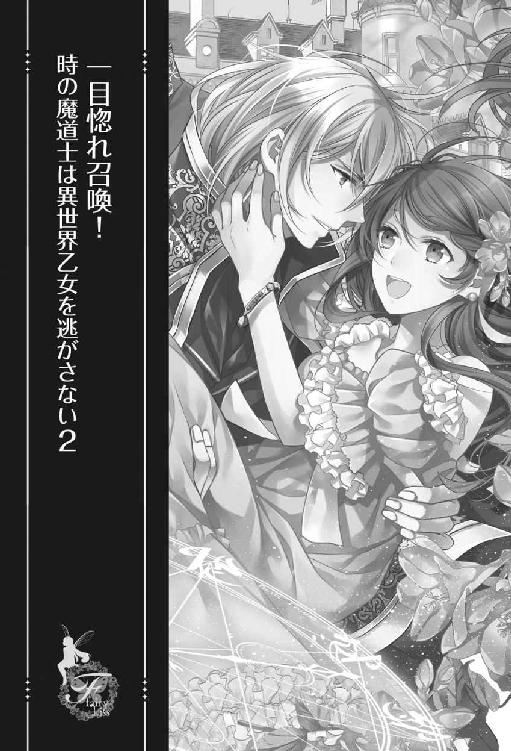

| 一目惚れ召喚！時の魔道士は異世界乙女を逃がさない２【初回限定SS付】【イラスト付】 一目惚れ召喚！時の魔道士は異世界乙女を逃がさない【初回限定SS付】【イラスト付】 (フェアリーキス) | |
| 月神サキ | |
| 株式会社ジュリアンパブリッシング (2018) | |
この作品はフィクションです。
実際の人物・団体・事件などに一切関係ありません。

第五章 二人の出会い
何度も死にゆく彼女を見た。その度に、少しずつ、自分の感情がおかしな方向へ曲がっていく気がしていた。
狂ってしまった恋情は、一体どこへ向かうのだろう。
「君を譲りたくない。たとえ誰より大事だと思っていた兄さんであったとしても君だけは譲れない。──そのためなら、僕は何度だってこの選択をするんだ」
幾度血の涙を流しただろう。
繰り返される始まりと終わり。くるりくるりと歯車が少しずつずれてくる。
終わらせなくても、いつか終わりはやってくる。
「さあ、始めよう。狂いきってしまうその前に。馬鹿げた劇に終幕を告げるために。全てを終わらせ──僕は君たちと眠りたい」
どこまでも自分勝手な望み。それが分かっていても、止めるつもりはなかった。
「君は──また僕を選んでくれるかな」
もうずいぶんと昔に感じる最初の出会い。あの時の自分は、どう考えても彼女に好かれる要素がなかった。だけど彼女は選んでくれた。
兄ではなく、他でもない自分を選んでくれた。あんなに嬉しかったことは終ぞ覚えがない。
「──そうだね。うん、優しく、だったよね。分かってる。今度は間違えないから。そして君が──を選んでくれたのなら」
それが終幕を告げる合図。
虚空をじっと見つめる。その目に正気の光はない。
「オトハ......」
──君の笑顔にもう一度会いたい。
彼女と初めて会った時のことを思い出し、ディオは幸せそうに微笑んだ。
◇◇◇
「──分かった。グラーデン公爵家において、いにしえの儀式を執り行うことを承認しよう」
「ありがとうございます！ 陛下！」
（うわ......やっぱりやるんだ）
満面の笑みを浮かべ、礼を告げる父親の姿を、ディオは冷めた目で見つめていた。
魔法王国ヴィリスの王都にある王城。その謁見の間では彼の父親が国王に向かって頭を下げている。
父が公爵家に古くから伝わるいにしえの儀式をしろと言い出した時は、まさか現実のことになるとは思わなかったが、どうやら本当に儀式をする羽目になりそうだ。
「......面倒だな」
「ディオ」
ボソッと呟いた言葉を聞き咎めたのは、彼の隣にいた兄のクロノスだった。いつも通り騎士服を着込んだ兄は、金色の髪に紫色の瞳という華やかな色彩の持ち主だ。
優しく人望もあり、次期近衛隊長は彼でないかとも言われている。ディオ自慢の兄。
そんな兄に睨まれ、ディオは肩を竦めた。
「ごめん。でもさ、今更いにしえの儀式なんてする必要ないのにと思って。父上の我が儘のせいで、陛下にまで許可を取る羽目になってしまった」
「仕方ないだろう。父上の決定は絶対だ。陛下から承認が下りた今、断ることはできないぞ」
兄の言葉に、ディオは深々とため息を吐いた。
「......時の魔道士なんて肩書きがあっても所詮、こんなものだよね。結局拒否権なんてないんだからさ」
「ディオ」
「ごめんなさい」
兄の咎めるような視線に負け、再度謝罪の言葉を告げた。そうして国王と会話をする父に聞こえないような小声で言う。
「......だけどさ、僕は今でも兄さんが爵位を継げばいいと思っているよ。僕に公爵なんてつとまらない。それに──結婚なんてごめんだよ」
そもそもこんなくだらない儀式をする話になったのは、長男のクロノスではなく二男のディオに爵位を継がせようとした父が原因だ。時の魔道士として名声を得た息子に爵位を継がせれば、公爵家は益々栄えるという考えからなのだが、話をされたディオの方は断固として承知しなかった。
「今更何を言ってるの？ グラーデン公爵家は兄さんが継ぐ。そういう話でしょう？ 僕はそんなもの欲しくない」
「ディオ！」
怒る父に背を向け、ディオは言い放った。
「兄さんの何が不満なんだか。僕に期待したって無駄だよ。絶対にごめんだ」
それで話は終わったはずだった。だが、ディオがグラーデン公爵家を継ぐことを、兄のクロノスまでもが承諾してしまった。
自分よりもディオの方が公爵家のためになると納得し、身を退くことを決意したのだ。
それを聞いたディオは激昂し、絶対に爵位など継がないと父に宣言した。ヴィリス王国では家長の命令は絶対だ。逆らった息子に腹を立てた父公爵は「それならもうどちらでもいい。いにしえの儀式をやれ。召喚された女を娶った方に爵位を継がせることにする」と言い始めたのだ。
いにしえの儀式とは、異世界を含めた全ての世界の中で最も相性が良い相手を召喚する魔法のことだ。昔、何度か行われたらしいが、最近は誰も行う者のいない古びた儀式となっている。ディオとクロノス、二人の血液を召喚陣に混ぜ込み、召喚の儀を行い、召喚された女性とどちらかが結婚しろと父は言っているのだ。
「ま、いいけどね。通常一人の血液しか混ぜないところを二人分混ぜろっていうんだ。失敗しても父上は文句言わないよね」
魔法にあまり詳しくない父は、二人のどちらとも相性の良い女性を召喚しろなどと無茶なことを言っている。巫山戯た話だ。普通に考えてあり得ない。失敗する可能性はかなり高い。
「実際の話、成功率はどの程度なんだ？」
小声で尋ねてきた兄に、ディオは眉を下げつつも答えた。
「うーん。兄さんには正直に言うけど、成功っていうかさ、十中八九失敗すると思うよ。だから余計にやりたくないんだ。それに万が一、召喚が成功したとして......当たり前だけど選ぶのは召喚された女性でしょう？ 兄さんを差し置いて僕が選ばれるなんてことはないとは思うけど、それでももし僕が選ばれたらと思うとゾッとする。積極的に召喚したいとは思えないよ」
「ディオ。お前、そんなに結婚したくないのか......」
驚いたような顔をする兄に、ディオは真顔で頷いた。
「僕にとって大事な存在は兄さんだけだから。後継者なんて作りたいとも思えないね。まかり間違って結婚したとしても、白い結婚を貫くことになるから跡継ぎは絶対にできないよ。公爵家としては困るよね」
きっぱりと告げると、クロノスは呆れたような顔をした。そうして仕方ないとばかりに口を開く。
「......分かった。それならもし、誰かが召喚されることになったら、その時は私が婚約者だと名乗り、結婚しよう。爵位も私が継ぐよ」
「......いいの？」
兄からの提案に目を見開く。まさか兄がそんなことを言ってくれるとは思わなかった。クロノスは苦笑しながら頷く。
「白い結婚を貫くなんて言われて、放っておけるわけがないだろう。召喚された女性にも気の毒だ」
「それは......うん、そうだね」
どこから召喚されるのかなんて誰にも分からない。万が一異世界から......なんてことになったら、その女性は住んでいた世界にすら戻れなくなるのだ。
異世界から召喚することはできるが、帰すことはできない。これは昔からの不文律だった。完全な被害者となる女性に対し、冷たい対応を取るのは、さすがにディオとしても躊躇われる。自分が召喚することになるのだからなおさら。
「......さすがに異世界から......なんてことはないと思うけど、よく考えなくても可哀想だよね。僕たちの事情に巻き込まれるわけなんだから。結婚は嫌だけど、できる限り大事にはしてあげたいと思うよ」
「ああ、そうだね。......だから、私が結婚することにするよ。これもグラーデン公爵家の長男として生まれた者の責務だろう」
「ありがと......」
兄の言葉に、心底安堵した。
兄には申し訳ないが、これで誰かを召喚してしまっても結婚しないで済む。それに今気づいたが、兄が代わりに結婚してくれるのなら爵位問題も同時に片付く。良いこと尽くしではないだろうか。だけど同時に少々不満にも思った。
「......でもさ、それならもう最初から兄さんが爵位を継いでくれればいいと思うんだけど。そうしたら召喚する必要だってなくなるよね」
「馬鹿なことを言うな。父上は私よりお前に継いでもらいたいと思っている。今回のように父上が出した条件に沿う形でない限り、私が継ぐことを父上は許さないだろう。それに私だって、できればお前に継いで欲しいと思っているんだ」
「......兄さん」
話が振り出しに戻ってしまった。これ以上は何を言っても無駄だ。
そう感じたディオは口を噤み、まだ笑顔で国王と話している父に視線を移した。
◇◇◇
「後継者が決まるまで王都に帰ってくるな」
そう父に厳命され、ディオとクロノスは王都から離れた公爵家の別邸にやってきた。
古城のようにも見える公爵家の別邸。ここには用事がある時以外は立ち寄らないが、私室もあるし、不自由はない。ディオに至っては、研究室まで置いていたので、王都の屋敷よりも居心地が良いくらいだった。
「さっさと召喚してしまおうか。時間をかけても仕方ないし」
到着とほぼ同時にディオがそう告げると、クロノスは驚いたような顔をした。
「大丈夫なのか？ かなり難しい魔法なのだろう？ 少し休憩して万全を期してからでも遅くはないと思うが」
「そんな必要ないよ。いにしえの儀式は時空魔法の一種だし、むしろ僕の専門分野だからそこまで気にしなくても大丈夫」
「それならいいが......」
そう言いつつも、難しい顔をするクロノスに、ディオは苦笑しながらも言った。
「兄さんは心配性だなあ。それに......どうせ召喚は失敗するよ。だからさっさと義務を果たして、あと、ちょっとだけのんびりしてから父上に報告に行こう？」
「ああ。そうだな」
「もう一回召喚しろって言われても無理だしね。父上もさすがに諦めると思うよ」
いにしえの儀式──いわゆる召喚魔法はかなり特殊な魔法で、使うのにも色々と制限がある。その一つが、生涯一度だけしか使用できないというもの。
現在ヴィリス王国で召喚魔法を使えるのはディオ一人だけ。その彼が魔法を失敗してしまうと、代理で召喚してもらうことすら不可能になるのだ。
「ないとは思うけど、召喚される女の子が本当に可哀想だよ。父上がこんなこと言い出さなければ、平穏無事に暮らしていけたのに。兄さんと結婚できるって意味ではラッキーだと思うけどね」
「こら」
「あはは、ごめん」
一応、謝罪はしたが、本心だった。
ディオは兄であるクロノスを非常に慕っている。強く優しい、自分にとっての憧れの存在。それがクロノスだ。その兄と結婚することができるのだから、召喚された子は幸せになれるに決まっている。ディオはそう信じていた。
研究室の隣の部屋を使い、魔法陣を描く。
時の魔道士とも呼ばれるディオは、魔法陣の助けなど必要としない。だがさすがに人一人召喚する大魔法となれば、念には念を入れておこうと考えていた。
「万が一、成功したら......って考えるとね。よし......できた」
「ずいぶん複雑な魔法陣なんだな」
ディオが魔法陣を描くのを少し離れた場所から興味深げに見守っていたクロノスが感心したような口調で言った。それに笑顔で返す。
「まあね。一応、異世界からの召喚も可能にした魔法陣だからどうしても複雑になるよ。色々特殊な道具なんかも必要だし、結構面倒なんだ。兄さん、発動させるからもう少し離れて」
「分かった」
クロノスが離れたことを確認し、ディオは小瓶を二つ取り出した。中身は予め採取しておいた自分と兄の血。瓶の蓋を開け、魔法陣へ垂らすと、血液に反応した魔法陣が七色に光り始める。
「さあ、どうなるかな。結果は見てのお楽しみってね」
言葉と同時にディオが指を鳴らすと、七色の光が宙に浮き上がり、円を描くように高速回転を始めた。光は三重の輪に変化し、そうして内側へと集まっていく。
「ディオ......大丈夫なのか......これは」
「ここまでは、普通の反応だよ。心配しないで......って、え？」
兄を安心させるために笑顔を浮かべようとしたディオだったが、その顔が驚愕へと変わった。身体から魔力を根こそぎ奪われる感覚。これには確かに覚えがあった。大きな魔法が成功した時に起こる反応だ。信じられない気持ちで魔法陣を凝視すると、七色の光はその明るさを更に増していた。
「噓......本当に？」
「ディオ？」
「......」
兄の言葉に何も返せない。国一番と言っていいほど強大な力を持つディオが初めて感じる、限界まで魔力を搾り取られる感覚に恐怖すら覚えた。
急激に魔力を奪われたことにより、貧血に似た症状が起こる。
「っ......」
「ディオ！」
ぐらりと倒れそうになったところを駆け寄ってきたクロノスに支えられた。もはや残っている魔力なんて微塵もない。本当に根こそぎ奪われた。空っぽだ。
呆然としつつも魔法陣を見ると、いつの間にか魔法陣の中央に光が集まっていた。それが唐突に弾ける。
「な、なんだ！」
眩しい光の奔流に、クロノスが声を上げる。ディオは声もなく、ただ光の弾けた魔法陣を見つめていた。
「......成功、した？」
出した声は、おかしなくらいに掠れていた。自分の見ているものが信じられない。輝きが消えた後の魔法陣。その中央には、一人の成人女性が倒れていたのだから。
「噓......」
見たことのない、露出の多い服を着ている裸足の女性。眠っているのか、その姿は実に無防備だ。すらりと伸びた足に自然と目が釘付けになってしまった。
すうすうと横向きに丸まって眠る姿はまるで猫のようにも見えた。
ピンク色の露出の多すぎる服──おそらくは夜着だと思われるものを着た女性は、一言で言えば可愛らしかった。遠目から見ても分かるすべすべした頰はバラ色で、緩やかにカーブを描く髪もきちんと手入れしているのだろう、艶やかで指を絡めてみたくなるほどだ。
（可愛い......）
女性が異世界人であることは一目で分かった。彼女からは一切魔力反応を感じなかったからだ。異世界人には魔力がない。これは、ディオたちにとっては常識である。
（異世界召喚だったんだ。だから、あんなに魔力を持っていかれたんだな......）
異世界から人一人連れてくるには、とてつもない量の魔力が必要だ。彼女を召喚するために、自分の全魔力を使ったのだとしたら、それは納得だった。
（むしろ、足りて良かったって思うべきなのかな......）
足りなければ、当然召喚は失敗する。失敗すれば、彼女は自分たちの前に姿を現すことはなかったのだ。文字通り失敗。
確かに望んでいた展開のはずなのに、今のディオはそれを嫌だと感じていた。
（だって、可愛い。ドキドキする。触りたい。僕の名前を呼んで欲しい。早く目を開けてくれないかな）
健やかに寝息を立てる女性を愛しく思う気持ちが溢れて止まらない。こんなことは初めてだった。自分がまさか兄以外の人間を気にかける日が来るとは思いもよらず、新たな感情にディオは戸惑いを隠せなかった。
強烈に惹かれる。
目の前にいる女性から目が離せない。柔らかそうな唇に触れたい。
その身体を抱き締め、心ゆくまで愛したい。
これが一目惚れかと、納得せざるを得ない気持ちが自分の中から生まれていた。
（いにしえの儀式なんて馬鹿にしてたけど......って、ああ、そういうことか）
知らなかった真実に唐突に気づき、ぞくりと背筋が震えた。
（相性がいいなんて、そういうレベルの話じゃなかったんだ......）
違う、と本能的に悟っていた。
ディオが使った魔法は、最も相性の良い相手を呼び出すなんていう生ぬるいものではなかった。そうではなく、媒介となる血液の主の、運命の相手を呼び寄せる魔法だったのだ。一目で恋に落ちてしまう、そんな強烈な吸引力を持った相手を連れてくる魔法。
父が真実を知っていたかは定かではないが、『相性が良い』の一言で片付けていいものではないことだけは確かだった。使わされた魔法の真実を知り、ディオは眩暈がしそうだった。
（そりゃ、生涯に一度しか使えないわけだ）
納得するしかなかった。
だって運命の女性など二人もいるはずがない。一度使えば十分。
そもそもこれは誰かに頼まれて行う類の魔法などではない。おそらくだが、術者が自分の唯一を探すために作り出したものなのだろう。それがいつの間にか、依頼者の血を使って、術者が代わりに運命の女性を探すという歪な形に変わってしまったのだ。
それが、いにしえの儀式の正体。
（......それなら彼女は、僕の......運命の人ってこと？ ......嬉しい）
激しい喜びがディオを襲っていた。鼓動が大きく跳ねる。結婚なんて興味はなかったけれど、運命の相手である彼女とならば話は別だ。むしろ、今すぐにでも結婚したくてたまらなかった。
（好きだ。彼女のことが好きなんだ。公爵位を継いでもいい。彼女と結婚できるなら......）
一瞬で、宗旨替えした。彼女を得られるのであれば、もうなんでもいい。そこまで思った。
「んっ......」
視線を感じたのだろうか。眠っていた女性が身じろぎをした。
目を覚ます──。眠っている姿を見ているだけでも愛しくてたまらない彼女が目を開ける。
自分の感情についていけず動けないでいると、ディオと同じようにただじっと彼女を見つめていた兄がすっと動いた。
「え......兄さん？」
兄の行動が読めなくて、目を瞬かせる。クロノスは振り返ると、ディオに笑って言った。
「最初から、決めていたことだろう？ ディオ。後は私が引き受ける。お前は何も気にしなくていいよ」
「あの......でも」
「大丈夫だ。ディオ」
クロノスの声は分かりにくかったが確かに弾んでいた。あまり見ない兄の本心からの笑顔に、ディオはその場に縫いつけられたように動きを止める。
（そうだ......）
その兄の顔を見て、ディオはとんでもない可能性に気がついてしまった。
召喚には兄と自分の血を混ぜたのだ。それはつまり、彼女は兄にとっても運命の人だということで。
（もしかしなくても、兄さんと僕の運命の女性が一緒ってこと？）
──嫌だ。
そんな馬鹿げた話、受け入れられるはずがない。彼女に近づいていく兄に、「止めてくれ、離れてくれ。彼女に触れないでくれ」と懇願したい気持ちになりつつも、やはりディオは一歩も動くことができなかった。
クロノスが、彼女の側に膝をつき、声をかける。クロノスの呼びかけに反応した女性は、ゆっくりと目を開いた。綺麗な黒い目に、ドキンとする。
どうしてその目が最初に映すのが自分ではないのかと、何も言えなかった自分が悔しく、ただただ情けなかった。
クロノスは優しい声で彼女に事情を説明し、そうして告げる。
「私が、あなたの結婚相手です。もちろん今すぐにとは言いません。ゆっくり私を見て、判断していただければそれでいい。私はクロノス・グラーデン。あなたのお名前を伺っても？」
身体を起こした女性は、戸惑った顔で、それでも小さく名前を告げた。自然と耳を澄ましてしまう。一言たりとも聞き逃したくなかった。
「......御劔音羽。オトハが名前」
（オトハっていうんだ。可愛い名前。彼女にぴったりだな......）
自分に対して名乗られたわけではないが、それでも彼女の名前を知ることができたのは素直に嬉しかった。
オトハ、オトハと何度も口の中で声を出さずに繰り返す。ふと、彼女が視線を自分に向けてきた。
「......えっと、彼は、誰なの？」
（えっ......）
視線が合った瞬間、ボンッと頭の中が沸騰した気がした。彼女が自分を認識している。そう思うだけで嬉しくて恥ずかしくて、頭がおかしくなりそうだった。
「あ......あの......僕......は......」
自己紹介しようとしても言葉が空回り、碌に話すこともできない。ディオの様子を見ていたクロノスが助け船を出すように言った。
「私の弟のディオです。弟は私以外と碌に話そうとはしません。妙な態度を取ることもあるかと思いますが、そういう性格なのだと思って下さい」
「はあ......」
「ディオは、あまり構われるのが好きではない性質なので、そっとしておいてもらえると」
「わ、分かりました」
（ち、違う！）
兄の言葉は決して間違ってはいなかったが、それでも反射的に否定してしまった。
そっとなんてしてくれなくていい。ディオは彼女と──オトハともっと話したいし、近づきたいのだ。それなのに自分を遠ざけるようなことを言う兄が信じられなかった。
愕然としていると、オトハがディオに対し、頭を下げた。
「ごめんなさい。それならあまり話しかけないようにするわ」
（はあ？ 何を言って......）
兄の言葉を真に受けるオトハに苛立ちを隠せない。だからかつい言ってしまった。
「そう、それなら僕の視界に入らないようにしてくれるかな。兄さん以外の存在がうろちょろしていると思うと、不快で仕方ないから」
ディオが放った言葉は、夜会の取り巻き連中に何度か言ったものと同じだった。
公爵家の息子。時の魔道士という地位。それらの恩恵を少しでも受けたいと企む連中を追い払うために何度も口にしたトゲのある言葉。
それを咄嗟に言ってしまい、ディオはしまったと臍を嚙んだ。
（何を言っているんだ、僕は。こんなこと言ったら彼女はもう僕と口を利いてもくれなくなる......）
おそるおそる彼女を見つめると、ひどく冷えた視線が自分を見つめていた。
「......分かったわ。歓迎されていないことは理解したから、あなたの目が届かないところにいるようにする」
「へえ？ それは有り難いね。そうそう、先に言っておくけど兄さんの邪魔はしないように。もし兄さんの害になると判断したらその時は──君を消すことも厭わないから」
言い捨て、くるりと背を向ける。どうしてこんな、心にもないことを言っているのか自分でも分からなかった。本当は仲良くなりたいのに。自分を見て欲しいと思っているのに。
（僕は、馬鹿だ......）
だけど、恋愛なんて初めてのディオには、どうすれば汚名返上できるのか分からない。好意のある女性への接し方なんて全く分からないのだ。
頭の中が混乱している。とにかく今は、一刻も早くこの場所から立ち去りたかった。後ろから兄が声をかけてきたが、ディオは無視し、急ぎ足で部屋を出た。
◇◇◇
「ほんっと僕、何をしてるんだろう......」
とりあえず自室に戻ったディオは、近くにあった椅子に腰掛け、思い切りため息を吐いた。自分の取った行動を思い出すと頭痛がする。
一目惚れした女性に毒を吐き、逃げ出してくるなんて。すでに成人している男がしていい行いではなかった。
「どうしよう......絶対今ので嫌われた......」
当たり前だ。あんな暴言を吐いて、嫌われていない方がおかしい。
突然、異世界から召喚されて不安になっている女性に「視界に入らないように」などと言うとは、一体自分は何様なのだろう。
「そもそも......僕が召喚したから、彼女はここに来てしまったのに......」
これは好意とは別問題だ。召喚については、誠心誠意謝罪する必要があるし、少しでも彼女が過ごしやすいように気を遣い、守ってあげなくてはならないのだ。
「それなのに僕ときたら......」
自己嫌悪で泣きそうになった。少し冷静になった今なら、どうして自分があんな態度を取ってしまったのか理解できる。
当然のように彼女の側にいようとする兄に嫉妬したのだ。そしてそれを拒否しなかった彼女に腹が立った。どうしようもなくムカムカして......気づいた時にはあの台詞だ。
「彼女は僕の運命の相手でもあるのに......」
嬉しそうな顔をする兄の表情が忘れられない。こんなことなら、彼女が召喚された時、真っ先に駆け寄り、一目惚れしたと正直に兄に告げれば良かった。
そうすれば、自分の先行きを案じている兄は、きっと内心の気持ちを押し殺し、自分に彼女を譲ってくれようとしたはずだ。
「......駄目だ。今僕、すごく嫌なことを考えた」
兄も彼女を好きだということを分かっていて、それでも奪い取ろうと考えるのだから。こんなの弟失格だ。
「でも......」
彼女の──オトハの姿が目に焼きついて離れない。こうしてディオが一人で悶々としている間にも彼女は兄と一緒にいるのだろうと思うと、やりきれなかった。
「二人は......何をしているんだろう」
どうしても気になってしまう。我慢できなくなったディオは椅子から立ち上がると、指を鳴らした。途端、彼の目の前に銀色に光る魔法陣が出現し、二人の姿をまるで鏡のように映し出す。
ディオの得意とする魔法の一つ、遠見の魔法だった。
「......あ。オトハ、着替えたんだ。可愛いな......」
ディオが一人で悶々としている間に、二人は場所を移動していたらしい。予め、召喚されるかもしれない女性のために整えられていた部屋には女性用の服飾品が多数用意してあった。その中の一つ、ブルーのワンピースを着たオトハは、ディオの目にとても好ましく、眩しく映っていた。
「可愛いなあ......青がよく似合うんだね。でも、ピンク色とかも似合いそうだな......」
ディオの魔法は映像だけではなく声も拾う。着替えたオトハに対し、兄が絶賛していた。
『よくお似合いです。まるで妖精が具現化したような姿だ......。是非ドレスアップしたあなたの姿も見てみたいものです』
『クロノスさん、褒めすぎですよ......』
『いいえ。私は本心から告げています』
『もう......』
「オトハ......兄さんのこと、もう名前で呼んでいるんだ......」
鏡の中の彼女が、すでに兄と親しくなり始めていることに衝撃を受けた。兄に褒められたオトハは、照れくさそうに笑っている。それが胸をかきむしりたくなるくらいに悔しい。オトハの気持ちが、確実に兄へと動いている。そういう風に、ディオには見えたのだ。
「嫌だ......嫌だ......」
これ以上は見たくないのに、鏡から目を離せない。
二人はこれから食事に向かうようだ。兄が優雅な動きでエスコートのために手を差し出す。
オトハは戸惑ったような顔でクロノスを見ていた。
「......何やってるんだよ、兄さん。オトハは異世界人なんだ。この世界の常識なんて分からないよ。ちゃんと説明してあげなくちゃ」
聞こえないと分かっていても、つい口出しをしてしまった。
召喚という形でなくとも、偶発的に異世界人がこの世界にやってくることは決して少なくはない。おそらくオトハたちの住む世界とこちらの世界の相性が良いのだろう。突然、異世界にやってきた彼らは帰る方法もなく、仕方なくではあるがこの世界に馴染んでいく。そうして異世界の色々な知恵を残していくのだ。
たとえば言葉。最初は互いの言葉を全く理解できなかったらしいが、やがて翻訳する魔法が生み出され、その壁はなくなった。文字はさすがに学ばなければどうしようもないが、それでも言葉が通じるだけかなりましだ。
食べ物。食材などはほぼ同じものがあるらしい。百年ほど前にやってきた異世界の料理人は、彼の世界の料理を数多くこの世界に残していった。それは今になっても受け継がれ、時折やってくる異世界人たちに大いに喜ばれている。
故郷の料理が食べられるというのはかなり精神安定に役立つのだ。この屋敷に常駐している料理人たちも数種類程度ではあるが、異世界料理を学んでいる。
ディオは時の魔道士という特殊な立場にいるため、一般人よりも物事を知ることは多い。異世界人についての知識もその一つだった。鏡の中の兄は、オトハが戸惑っている理由が分かっていないようで、不思議そうに首を傾げている。
『オトハ？』
『い、いえ......あの、クロノスさん。その手は......？』
『え？ エスコートですが......』
『あ......。あの、私、そういうの慣れていなくって、できれば勘弁してもらいたいんですけど』
『女性をエスコートするのは貴族男性の義務のようなものですから。お気になさらず』
「兄さん、違う。そういう話じゃない」
兄にとっては当たり前でも、オトハにとっては違う。まだよく知らない異性に手を触れられることを彼女が忌避していると、兄は気づいていないのだ。
なかなか手を預けようとしないオトハに埒があかないと思ったのか、兄が強引にその手を取る。
『あっ......』
『行きますよ』
『ま、待って下さい。クロノスさん』
「......」
それ以上は見ていられなくて、魔法を解いた。途端、堪えていた息が零れる。二人が親しくなっていく様を何もできないところから見るだけなのは辛かった。
「僕も......食堂に行けば、オトハと話したりできるかな」
言ってみて、無理だなと諦めた。
視界に入って欲しくないなどと暴言を吐いた自分と食事なんてオトハはしたくないだろう。召喚されたばかりで不安定になっている彼女をこれ以上いたぶるような真似は、さすがのディオにもできなかった。
「......また、別の機会がある......かな」
今度会った時には、自分の暴言を謝罪したい。そうして少しずつ仲良くなって、最後には自分を見てもらいたい。
「ねえ、兄さんなんて見ないでよ。僕を......僕を見て」
ディオにとっての憧れの存在であるクロノス。だが、オトハだけは譲りたくないと、無意識のうちに彼は考え始めていた。
第六章 僕を見て
オトハがこの世界に来て、早くも二週間が過ぎた。
クロノスとオトハは明らかにその距離を縮めている。それを遠目に見て、悔しいと思いつつも、結局ディオにはどうすることもできなかった。
今日も廊下を億劫な気持ちで歩いていると、少し先で兄とオトハが話しているのが見えた。咄嗟に踵を返す。こんな態度では駄目だと分かっていても直せなかった。
（悔しい。どうして僕は、オトハと関わることもできないんだろう......）
謝る機会はこの二週間、ディオさえ頑張れば、多分何度もあった。だが、異性を──いや、兄以外の人間を好きになったことのない彼には、まずどう頑張ればいいのかさえ分からなかったのだ。
「ね、ちょっと待ってよ！」
もう部屋に戻ってしまおう。そう思ったディオの後ろから声がかかる。柔らかな女性の声だ。初めてオトハから呼びかけられたことに気づき、ディオは驚きで心臓が止まるかと思った。
（えっ......オトハが？ 僕に？ 声をかけてくれた!?）
「──なんの用かな。僕、君に用なんてないんだけど」
自分の口から飛び出した言葉に、絶望した。
また、やってしまった。せっかくオトハが二週間ぶりに声をかけてくれたのに。
本当は嬉しくて仕方ないのに、どうしてこう、真逆のことしか言えないのだろう。自分にほとほと嫌気が差す。
近づいてきたオトハは、眉を顰めながらも言った。
「クロノスさんから話は聞いてるけど、あなたそういう言い方しかできないの？ もう少しコミュニケーションを図ろうとか考えないわけ？」
「君と僕が？ どうしてそんな必要があるの？」
はっと鼻で笑うと、オトハは悲しげな顔をした。
「どうしてって......同じ屋敷に住んでいるんだもの。少しくらい仲良くしたいって思うのは当然じゃない？」
「君の当たり前を押しつけられても困るよ。......用がそれだけなら僕は行くけど。ほら、兄さんが待ってるんじゃないの？」
何故こんな言い方しかできないのだろう。オトハに指摘されなくても、どうにかできるものならとっくに対処している。なんともしようがないから......こうして、オトハに毒を吐き続ける羽目になっているのだ。
（ああ、またこれでオトハに嫌われてしまった......。仲良くしたいし、謝りたいのに......）
兄の高笑いが聞こえるようだとディオは思った。
こんな調子では彼女に好いてもらうことなど夢のまた夢だ。また兄に差をつけられたと心底へこみ、ディオは俯いた。
「クロノスさんは忙しい人だし、先に行ってもらった。ディオは魔法がすごく上手だってクロノスさんから聞いたから、見せてもらえればって思っただけなのに」
（うわ、僕のこと、ディオって呼んでくれた。嬉しい！）
彼女の口から出た自分の名前に心は躍る。だが、口は正反対の言葉を紡いだ。
「別に僕じゃなくてもいいよね。確かに僕ほどではないけど、兄さんも魔法を使うのは上手いよ。君が「お願い」って頼めば、快く見せてくれるんじゃないの？」
「......感じ悪い。クロノスさんが、ディオは本当は良い子だって言うから......。難しい子だから歩み寄って欲しいって言うから、私、頑張ったのに......」
（何それ......）
オトハの告げた『クロノスさんが』という言葉にどうしようもなく苛ついた。
兄が何も言わなかったら、そもそもディオに話しかけたりはしなかった。おそらくそういうことなのだろう。
近づくなと言ったのはディオだし、それは仕方ないことだと分かってはいたが、はっきり言われるのは腹が立つ。だからか、つい、舌打ちしてしまった。
「いちいち兄さんをだしに使わないでくれるかな。そんなことで声をかけられたって嬉しくもなんともないよ」
「......ひどい」
（え!?）
オトハの声が震えていることに気づき、ディオは顔を上げた。彼女は睨みつけるようにディオを見ていたが、その目は赤く、涙で潤んでいる。
泣かせるつもりなどなかったディオは、突然の出来事に狼狽えた。オトハは身体を震わせながらも涙を堪え、ディオに言った。
「分かったわ。もう二度と、あなたに魔法を見せてなんて頼まない！ 近づくなって言われたのに声をかけて悪かったわね！」
「あ......その......」
違うのだ、そんなつもりはなかった。ただ兄に嫉妬して、兄と仲良くなっていくオトハに無性に腹が立っただけ。それだけなのに。
ディオが呆然としているうちに、オトハは踵を返し、靴音を立てて彼から離れて行った。あっという間に一人になる。廊下には自分以外誰もいない。それをひどく寂しく感じた。
「せっかく......オトハの方から話しかけてくれたのに......」
魔法を見せる、なんてきっかけまで用意してくれた。それに上手く乗れば、普通に話すくらいはできるようになったかもしれないのに、僅かな可能性を自分の手で潰してしまった。
「僕......最低だ」
好きな女性に、優しくする、という簡単なことすらできない。
どう接していいのか分からなくて、挙げ句、虐めるなど、どんな子供なのだ。好きだから虐めてしまうというのはよくある話だが、それが功を奏することなどほとんどあり得ない。
女性は──いや誰だって優しくしてくれる人の方に惹かれるものだ。
それくらいディオだって分かっている。それなのに。
「......どうして、思ってもいないことを言っちゃうんだろう」
初めて恋をしているディオには、ただ優しくするだけのことがどうしてもできなかった。
◇◇◇
オトハに怒鳴られてから数日が経った。あれから、もちろんオトハはディオに近づこうとはしない。一度勇気を出して二人が食事をしている時間に食堂へ行ってみたりもしたのだが、ディオの顔を見た瞬間、オトハは無言で立ち上がり、食堂を出て行ってしまったのだ。
（ああ......これは本格的に嫌われてしまった......）
悲しい。悲しくてたまらない。
自分はこんなにもオトハのことが好きでたまらないのに、日ごと『好き』の気持ちが膨れ上がっているというのに、彼女は自分のことを嫌っているのだから。
（好きだ......好きなんだ。もう、彼女の全部が好きだって僕の全身が叫んでる）
オトハを見れば、愛しいという気持ちしか思い浮かばない。
彼女に手を伸ばしたい。健康的な桃色の唇に触れてみたい。兄の側になど近づけさせないで、自分の部屋に閉じ込めてしまいたい。
一目惚れから始まったディオの恋は沈静化するどころか更に勢いを増し、もはや決壊せんばかりだった。
少しだけあった兄への罪悪感も、日を重ねるごとに消えていく。兄を尊敬する気持ちも大好きだという思いも、どちらも微塵も揺らぎはしなかったが、ことオトハのこととなると駄目だった。
彼女だけは譲れないという強い気持ちが、ディオを支配していた。
（駄目だ。兄さんにだって、オトハを取られたくない）
だけどどうすればいいのだろう。
自業自得ではあるが、この通りオトハにはすっかり嫌われ抜いてしまっている。自分に対する彼女の感情はゼロどころかマイナスだろう。それをまずはせめて普通に持っていく方法が、ディオにはどうしても分からなかった。
（好きな人ができたって騒いでいるやつらの気持ちが少しだけ分かったかもしれない）
気乗りしないなりに公爵家の子息としての義務で参加した夜会。そこで出会った同世代の者たちは恋やら愛やらにうつつを抜かしていた。
女性に振り回され、どうすればその心を射止めることができるのだろうと必死になる姿はディオから見れば滑稽以外の何物でもなかったが、おそらく今の自分もその時の彼らと同じ......いや、下手をすれば彼ら以上に愚かなことになっているのだろう。
（僕に彼らを馬鹿にできる資格なんてなかったな......）
好きな女性に告白するどころか、暴言を吐き、嫌われ抜いているのだ。しかも打開策は見つからない。全く打つ手なし。だけど諦める気には到底ならないというのだから終わっている。
「はは......ははは......はあ」
今日もまた、何をすることもできず自らの部屋へと戻ってきてしまった。どかりと椅子に腰掛ける。昨日、途中で放り出した仕事の続きをしようと書類に向かってはみたが、その手はすぐに止まってしまった。
時の魔道士として名を馳せているディオにはそれなりの責務や仕事がある。いつもなら片手間に終わらせている書類仕事の数々。それが、オトハが来てからは全くする気がしなくなってしまった。彼女の動向が気になってそれどころではないのだ。
今日も羽根ペンを取ったところまでは良かったが、結局それ以上進むことはなかった。
「書類は溜まっていく一方だし、オトハとは上手くいかないし......ここのところ踏んだり蹴ったりだ」
羽根ペンを放り出し、ぐっと伸びをする。ふと、今、オトハが何をしているのか気になった。
「......ちょっとだけ」
パチンと指を鳴らす。ここのところ頻繁に使っている遠見の魔法は今日もしっかりとオトハの姿を映し出してくれた。いけないと思っても、彼女の行動が気になって仕方ない。オトハに知られたら、きっと嫌な顔をされるだろうと分かっていても止められなかった。
「中庭？ 珍しいな......」
どうやら彼女は公爵家の中庭を散策しているようだ。隣には当たり前のようにクロノスがいる。
「......兄さん」
自然と苦々しい口調になる。当たり前のような顔をして側にいる兄が無性に羨ましくて、妬ましくてならなかった。二人は庭に咲いている花について話している。
『すごく素敵な庭ですね。咲いている花も色々な種類があるし。私がいた世界と同じものがたくさんあります』
弾んだ声に、ディオの心は激しく痛んだ。
自分にはあんな楽しそうな声を聞かせてくれないくせに、クロノスには聞かせるのか。
そう思うと、どす黒い気持ちが生まれてくる。
『あなたの世界とこちらの世界には元々似たものが多いらしいです。だから同期しやすいんでしょうね。今までに何人もあなたの世界の人たちが迷い込んでいますよ』
『そうなんですか。でも、やっぱり帰れないんですよね？』
『ええ......帰った者はおりません』
『そう......ですか』
あからさまにガッカリしたオトハを、クロノスが慰める。
『申し訳ありません。あなたが今ここにいるのは、私たちがあなたを呼んでしまったせいです。その責任は必ず取ります。元の世界には帰してあげられませんが、一生あなたに苦労はかけないと約束します』
『クロノスさん......』
それはクロノスの精一杯のプロポーズの言葉だったのだろう。ディオにはすぐに分かった。
（兄さん......やっぱりオトハのこと、本気なんだ）
今まで浮いた噂一つなかったクロノス。それは彼が父公爵の用意した相手と結婚する必要があったからだった。次期公爵の予定だったクロノスには自由恋愛は許されていない。婚約こそまだしていなかったが、父の選んだ候補はすでに何人かいた。後は最終決定を待つだけ、そんな状態だったのだ。
その折での今回の話。元々誰でもいいと思っていたのだろうが、オトハと出会い、兄は確実に変わった。今まで見せたことがないような甘い表情でオトハを見つめ、不器用ながらも優しく接しようとしている。......オトハにそれが伝わっているかは別として。
今もオトハは、渾身のクロノスの口説きを見るも無惨にスルーしていた。
『呼ばれてしまったことは腹が立ちますが、いつまでも文句を言っていても仕方ないと思います。責任を感じて下さっているのなら、そうですね......私、手に職をつけたいので、その協力をして下さい』
『えっ......手に職......ですか？』
『はい』
（オトハ......それは違うよ......）
彼女が兄に靡かなかったのは嬉しいが、ここまで直接的なことを言ったのに全く別の言葉で返された兄も気の毒だと思ってしまった。絶句するクロノスには気づかず、オトハは真顔で言葉を続ける。
『この世界にいることが決まってしまったというのなら、やはり自立する手段を見つけるべきだと思うのです。いつまでも責任を押しつけてクロノスさんたちにおんぶに抱っこというのは気が引けますし......』
『い、いえ......私はあなたにプロポーズしていたのですが......』
『へ？』
ようやく気づいたとばかりにオトハが目を丸くする。そうして、赤くなるのではなく困った顔で首を横に振った。
『──ごめんなさい。私、クロノスさんのこと、そういう風には見られません』
『どうしてですか？ 私の何が悪いと言うのでしょう？』
それはディオとしても聞きたいところだった。彼にとってクロノスは自慢の兄だ。その兄の求婚を断るなど、正気の沙汰とは思えない。
『──私、結婚相手には愛情ももちろんですけど、信頼を求めたいって思ってます。だからだ──と言えば分かりますか？』
『分かりません。最初に告げたように、あなたは私の妻となるべく召喚されたのです。それなのに、あなたは駄目だと言うのですか？』
必死で告げるクロノスをじっと見つめ、オトハは小さくため息を吐いた。
『ここまで言っても、やっぱり分かってくれないんですね。とにかく、今私はあなたと結婚する気にはなれません。──今のあなたを愛することができる気がしないんです。だからごめんなさい』
『オトハ──』
『クロノスさん』
まだ言い募ろうとするクロノスの言葉を遮り、オトハは言った。
『この話はここまでにして下さい。また──もしかしたら気持ちが変わることもあるかもしれません。ですが今日は......』
『分かり......ました』
咄嗟にオトハに伸ばそうとした手を下げ、クロノスは頷いた。納得したわけではないが、今は退くしかない。そんな表情だった。
クロノスが同意してくれたことにホッとしたオトハは、ようやく硬くなっていた表情を緩めた。そうして話題を変えるように言う。
『それにしても──本当に綺麗な庭ですね。私、このピンク色の花なんてすごく好きです。良い匂いがするし......香水やアロマオイルにして使ったら、とっても幸せな気持ちになれそう』
オトハの見ている花を確認したクロノスは「ああ」と納得したように頷いた。
『──それは、フリージアですね。ここの花は全てディオが......弟が手入れしているのです』
クロノスの言葉に、オトハは大きく目を見開いた。
『へえ！ 人は見かけによらないって本当なんですね！ 意外っていうか......』
『弟は花が好きなんですよ。屋敷にある花は庭師とディオの二人でほぼ全て管理しています』
『......花が、好き？』
変な言葉を聞いたとばかりにオトハが眉根を寄せる。クロノスは薄く笑みながらも肯定した。
『ええ、本人は隠したいみたいですけどね。あなたが花を綺麗だと言っていたと聞けば、弟も喜ぶでしょう』
『それは......どうでしょうか。彼ならきっと、嫌な顔をするだけだと思います』
「うるさいよ」
きっぱりと否定したオトハに、ディオは聞こえないと分かっていても文句を言った。その頰は薄らとではあるが赤く染まっている。
「花が好きで悪い？ 花は人間と違って僕を裏切ったり、陥れようとしたり、嫉妬したりしないんだ。手をかけただけ、応えてくれる。そんな花を好きで何が悪いって言うの」
幼い頃から魔法の才を見出されていたディオは、だからこそたくさんの人間の嫌な部分を見て育った。手助けをするふりをして陥れようとしてくる者。自分は何もしていないくせに嫉妬だけはしてくる者。悪意のある噂を流し、友人と結託して悪口を言い、足を引っ張ろうとする者。
ディオはその全てにうんざりしていた。そんなディオを癒やしてくれたのが兄であるクロノスの存在と、花だった。
優しい香りはささくれだった心を癒やしてくれる。咲けば目に美しく、世の中の汚いものばかり見せつけられてきたディオには、眩しく映った。気づけば、自ら花壇の手入れをするようになり、そうして今では、公爵家の庭の花のほぼ全てを任されるまでになったのだ。
「......もういいや」
なんとなく、オトハが次になんと言うのか聞きたくなくて、ディオは魔法を解除した。そうして立ち上がり、研究室へと向かう。
研究室には、ディオが特に気に入った花が鉢で置かれており、その中には先ほどオトハが好きだと言ったフリージアもあった。
「......」
無言でフリージアを眺める。ピンク色のフリージアを見ていると、オトハを思い出して仕方ない。
「......香水やアロマオイルねえ。結構手間がかかるんだよ。知らないと思って簡単に言ってくれる。まあ、僕は天才だから、大丈夫だけどさ」
誰に言い訳しているのかもよく分からないまま、ディオは呟いた。しばらく、無言の時間が続く。
「......はっ！ 僕は一体何を......！」
気づいた時には、何故かフリージアの香水とアロマオイルができあがっていた。
窓の外を見れば、もう夕方と言っていい時間帯。よほど集中して作業していたのだろう。
「......」
女性に贈ることをあからさまに意識した美しい小瓶に入った香水。できあがったそれを見つめ、ディオは情けない気持ちになった。
「......オトハに渡せるわけでもないのに......何してるんだろう。馬鹿みたいだ」
虚しい。虚しくてたまらない。
自分がひどく滑稽に思える。できあがった香水とアロマオイル。それらを目にすると、自分の馬鹿さ加減を見せつけられているような気になり、暴れたくなった。
「......片付けよう」
耐えきれなくなり、机の奥へと瓶を片付けた。
嘆息し、時間を確認する。
今頃オトハは、兄と二人で夕食を取っているのだろうか。
「......」
自分があまりにも惨めに思えたディオは、それを少しでも吹き飛ばすため、最近めっきり遅れていた自らの研究へと没頭することに決めた。
◇◇◇
ディオが研究室へと引きこもってから、何日か経った。
クロノスとオトハの二人を見るのが辛い。それを避けるために始めた引きこもりだったのだが、確かに一定の効果はあった。
「......研究は進むし、魔法さえ使わなければ二人の姿を見なくても済む。もっと早くこうしていれば良かった」
研究に没頭してさえいれば、オトハたちのことも忘れていられる。それは、今の彼には有り難い話だった。
少しでも気を抜けばオトハのことを考えてしまう。彼女のことを思えば夜も眠れないし、食事も喉を通らない。
気づいてはいなかったが、確実に、ディオの身体は弱っていた。
「ディオ、お前、ここのところ、碌に食事も取っていないと聞いたぞ。大丈夫なのか」
情報源は使用人たちなのだろう。引きこもりを始めてから一週間ほどして、兄が扉越しに話しかけてきた。いつもならすぐに扉を開けるのだが今日だけはそんな気分になれない。
ディオはつとめて冷静に返した。
「平気だよ、兄さん」
「だが......お前」
「研究が良いところまできているんだよ。悪いけど邪魔しないでもらえるかな。......ちゃんと時間を見つけて、食事はするから」
突き放した言い方をしている自覚はあった。だが放っておいて欲しいというのが彼の本心だ。今は兄の顔を見たくない。顔を見せもしない弟に兄がどう思ったかは分からないが、少し間があって兄の声がした。
「......分かった」
承諾の言葉と、そして兄が部屋の前から立ち去っていく足音。
それにホッとしつつ息を吐く。研究室の中にまで入ってこられなくて助かった。
大好きな兄に対してマイナスの感情を抱く日が来るとは思わなかったが、ディオの偽らざる気持ちだった。
「ごめん......兄さん」
小さく謝罪の言葉を紡ぎ、作業を再開させる。ディオの目の下にはくっきりとした隈があった。あからさまな寝不足の証。髪はぼさぼさで、着ている服もよれている。
こんな姿の自分を見れば、普段からきちっとしている兄はきっと悲鳴を上げるのだろうなとぼんやりと思った。
（でも......何かしていないと、駄目なんだ）
兄への嫉妬とオトハへの八つ当たり。彼女を思って眠れぬ夜を過ごすのも辛い。だって夜に眠れないと色々な想像をしてしまう。
オトハはもう兄に抱かれたのだろうかなどと考え出した夜には、それこそ一睡もできなかった。
（辛い......辛い......辛い）
こんなに彼女のことが好きでたまらないのに。今でも彼女が自分の運命の人だと確信できるのに、何も行動することができない。ただ指をくわえて、愛する人が兄のものになっていくのを見ているしかないのだ。
「気が狂いそう......」
いっそ狂ってしまった方が楽なのかもしれない。そう思いつつ、羽根ペンを動かす。ディオが手がけていたのは、国王に頼まれていた新魔法の確立だった。
納品は一年先を予定していたが、もうほとんど完成間近まで迫っている。
「......後は、実証実験をしないと......」
理論は完璧。だが、魔法が発動できないと意味はない。一度どこかで実験をしないと......そんなことを考えながら、ディオは立ち上がった。全くお腹は空いていないが、さすがに水分くらいは取らなくてはならない。お茶でも飲もうと考えたのだ。
「......疲れが取れるハーブティーでも飲もうかな......」
花が好きなディオは、ハーブティーも自ら作っていた。その中でも特に疲れに効くものを思い出し、茶葉を取ろうと身体を動かした。
「......あ......」
ぐらり、と上体が傾いだ。まずい、と思った。考えていた以上に身体は疲れていたようだ。これは間違いなく気絶する。
何度か体験したことのある感覚に、ディオは床に倒れ込みながらも呟いた。
「まずい......な」
すぐに意識を取り戻せばいいけど。
そう考えたのが最後。すっと頭から血の気が失せる感覚に、ディオの意識は刈り取られた。
◇◇◇
「......う......うーん......」
「あっ......起きた？」
「......えっ!?」
聞こえるはずのない声が聞こえ、ディオははっと目を開いた。
瞬間、今までのことを思い出す。情けないことに疲労が溜まりすぎて、仕事中に倒れてしまったのだ。柔らかいリネンの感触に、ベッドに寝かされているのだろうと当たりをつける。
一体あれからどれくらい時間が過ぎたのだろうと思うとゾッとし、同時に聞こえた声が信じられず、おそるおそる声がした方向に顔を向けた。
「......オト......ハ？」
心配そうにディオを覗き込んでいたのはオトハだった。彼女はディオの顔を見ると、ホッとしたように笑う。
「良かった。ちゃんと私のことも認識できてるみたいだね。......って、私、あなたに名乗ったっけ？」
きょとんと首を傾げるオトハが可愛い。ドキドキしつつもディオは突き放すような口調で言った。
「......兄さんに名乗った時に、近くにいただろう。一度聞けば、名前くらい覚える。......君が僕に名前を呼ばれたくないっていうのなら、もう呼ばないけど」
心の中や、遠見の魔法を使っていた時に、何度も呼んでいたせいで、つい口にしてしまったのだ。
しまったと思いつつも言い訳すると、オトハは否定するように首を横に振った。
「ちゃんと名前で呼んでもらえる方が嬉しいから、呼んでくれるのなら名前で呼んでよ。私も......ディオって呼んでもいい？」
「前にも呼んでいたじゃないか。今更」
そう言いつつも心は浮き立つ。目覚めて側にオトハがいて、そうして互いに名前呼びができるとは、もしかして自分はまだ夢を見ているのだろうか。もしそうなら覚めないで欲しい。
ディオの意地悪い指摘に、オトハは気まずげな顔になった。
「あ、あれはクロノスさんが......」
「別にいいよ。いくらなんでも、それくらいで怒ったりなんてしないから」
「......ありがと」
ホッとしたように息を吐くオトハを、ディオはじっと見つめた。
「それで？ どうして君......オトハがここにいるの？ ここ、僕の部屋だよね。あと、僕は研究室で倒れていたはずなんだけど、君が僕を発見したの？」
どういう経緯でこんなことになったのか知りたくて尋ねると、オトハは「ああ、それはね」と頷きながら言った。
「ディオを見つけたのは、クロノスさんと私。いくら仕事をしているからって、さすがに引きこもりすぎだってクロノスさんが言い出して、私も心配だったから一緒に来たの。そうしたら、あなたが床に倒れているのを見つけたから──」
慌てて使用人を呼び、寝室に運ばせたのだという。聞いてみれば、気絶していたのはほんの一時間ほどだった。
「そうか......。で？ どうして兄さんじゃなくて君がいるの？」
事情は納得したが、何より不思議なのがそこだった。
だってオトハはディオのことが嫌いなはずだ。それなのに側にいてくれるなんて、普通なら考えられない。オトハは少し言いづらそうな顔をしつつも口を開いた。
「クロノスさんは仕事があるからって......ディオのことも、後は使用人が世話をするから任せておけばいいって言ったんだけど、私、どうにも気になって......」
「気になるってだけで、側にいてくれたの？ オトハ、僕のこと、嫌いなんじゃないの？」
どうしてこんな意地悪な言い方しかできないんだろう。もう少し、他に言い方もあるはずなのに。自分が心底嫌になる。歯嚙みしていると、オトハが言った。
「嫌いなのは、私じゃなくてディオの方なんじゃないの？ 初めて会った時から突っかかってきてさ」
「それは......」
確かにその通りだ。自分ではなく兄と話すオトハに腹が立って、最初からひどい態度を取っていた。言葉を濁すとオトハが苦笑いをしながら言った。
「止めよう。今日は喧嘩をしに来たんじゃないもの」
「それはそう......だけど」
「体調が悪い時に一人で寝ているのって寂しいのよ。私、それを知ってるから。だから来ただけ。それこそたとえ嫌いな私だろうと、一人よりはよっぽどましでしょう？ 本当はクロノスさんがいてくれれば良かったんだけど、どうも彼、そういうところは分かってくれないみたいだから」
クロノスさん、という言葉にピクリと肩が揺れる。せっかくオトハと話せているのに、兄の名前が出るのがどうにも嫌で仕方なかった。心が狭いということは分かっていてもどうしようもない。だからか、つい、言ってしまう。
「未婚の君が、男性の寝室に長時間いるなんて、きっと兄さんは嫌がると思う。もう帰った方がいいよ」
本当は、もっと側にいて欲しい。せっかく話す機会を得たのだ。少しでも距離を縮めたかった。だけどクロノスの名前が出る度に、オトハと結婚するのは兄で、自分ではないのだと突きつけられるようで、それがどうにも辛い。
思わず俯いてしまうと、オトハは呆れたように言った。
「何言ってるの？ どうして私がクロノスさんの顔色を窺わないといけないのよ。確かに彼は良い顔をしなかったけれど、それが何か関係ある？」
「え？ でも、君は兄さんの婚約者だし......」
「ああ、それ誤解。確かにプロポーズはされたけど、断っているから。大体、クロノスさんのこと、好きとか思えないし、正直結婚とかあり得ない」
「え......」
その言葉は、確かに遠見の魔法の中でも聞いていた。だがそれは一時のことだけだとばかり思っていたのだ。だけど今、目の前であっけらかんと語る彼女を見ていると、本当に、いっぺんたりとも恋情が含まれていないように思える。
オトハは淡々と思い出すように語る。
「クロノスさんって良い人だなとは思うんだけど、時折、無機物を観察するような顔で人を見てるんだよね。それがゾッとするというか、怖いっていうか。私のことも、婚約者だなんて言っているけど、どこか噓くさいように思えて信用しきれない」
「ま、待ってよ。兄さんは誠実な素晴らしい人だよ！ 噓くさいなんて！ それに、君のことは本当に好きなんだと思う！」
「ええ？ そうかなあ」
どうしてライバルである兄を庇わなければならないんだろうと思いつつも、大好きな兄を誤解されるのは耐えられない。
ディオは身体を起こし、必死で訴えた。
「兄さんは、僕の憧れの人なんだ！ 人望があって優秀で、こんな僕のことだって気にかけてくれる。そんな兄さんを悪く言わないでよ！」
「え......と、その。......ごめん」
ディオの勢いに押されたのか、オトハは驚いたような顔をしつつも謝った。
「そっか、クロノスさんってディオにとってはそういう存在なのか。クロノスさんもディオのことを褒めちぎっていたから......ふうん。お互いが大事なんだね。そういうのは素敵だなあ」
「馬鹿にしてる？」
「まさか！」
とんでもないと否定し、オトハは「だけど」と続けた。
「あなたには悪いけど、私にとってはそうじゃない。彼が結婚相手だって言われても無理。心から信頼できない相手と、どうやって家族になれっていうのよ。不可能だわ」
「じゃあ......じゃあ僕はどうなの......？」
「え？」
オトハの言葉を聞き、我慢できなくなったディオはたまらず口を開いた。
「兄さんが駄目だって言うのなら僕は？ 僕じゃ駄目？ 君を初めて見た時から、ずっと──こんなにも君のことを愛しているっていうのに！」
「えええええ!?」
突然のディオの告白に、オトハは目を丸くした。身体を後ろにのけぞらせ、信じられないと首を振る。
「ええ？ ディオ、あなた私のことが好きなの？ 全然そんな風に見えなかった。最初からずっとあんな毒ばっかり吐いていたのに......」
驚いたと目を瞬かせたオトハに、ディオはもうこうなったら自棄だと口を開いた。
「君が兄さんばかり見ているのが悔しかったんだ。僕は......君のことが好きで、胸が痛くてたまらないし、君に僕を見て欲しいのに、君は全然僕に気づいてくれないんだから......」
「いや、だってディオ、側にすら来なかったじゃない。私のことずっと睨みつけていたし......」
「君に見惚れていたんだ」
「いやいやいや」
真顔でオトハは再度首を振った。
「さすがに、あれを見惚れてるって思えないわ。自惚れにもほどがあるでしょう」
「君はすごく可愛くて......僕は当たり前のように側にいる兄さんに嫉妬したんだ」
「えーとあの......」
「毎日、君が恋しくてたまらない。君に会えない日々が辛くて泣きそうだ。君と普通に話したいって思っても、好きな人にどう接したらいいのか分からなくて結局毒を吐いてしまうし......思い悩みすぎて引きこもったんだ」
「え？ もしかして今回倒れたのってそのせい？」
「そうだよ」
「ええええー......噓」
「噓なものか」
ここまで言ってしまえば、後は一緒だ。羞恥をかなぐり捨て、ディオは言った。
「君が好きだ。君のことしか好きじゃない。この世界に召喚された君を初めて見た時から、僕の心は君でいっぱいなんだ。君を思うと眠れないし、何も手につかない。ねえ、どうしたら僕のことを好きになってくれるの？ 僕は君に好かれたい」
「ちょ......ちょっと待ってよ」
怒濤のごとく告白すると、オトハは顔を赤くしながらも、両手を前に出し、一旦止まってくれという仕草をした。だけどすでにいっぱいいっぱいになって何も考えられなくなっているディオは気づかない。
「君が僕のものになってくれるって言うのならなんでもする。公爵位だって継いでもいいよ。それとも僕の気持ちが信じられない？ そうだよね。僕はずっと君にひどいことばかり言ってきたから。でも信じて欲しい。僕は本気で君を愛して──」
「分かった！ 分かったからちょっと待ってってば!!」
先ほどよりも顔を赤くし、オトハは怒鳴った。その声の大きさにディオははっとし、口を噤む。おずおずとオトハの顔色を窺うと、彼女は顔中赤くして「もう......なんなの」と口元を押さえていた。その仕草も可愛らしいとディオは思う。
「オトハ？」
「......とりあえず、ディオが私のことを好きだって思ってくれてることは理解した」
「うん」
コクリと頷くと、オトハはげっそりと疲れた顔で言った。
「でもね、忘れてない？ 私はクロノスさんと結婚するために呼ばれたんでしょう？ それなのに好きだなんて言ってもどうしようもないじゃない」
「どうしようもなくなんてないよ。元々君の相手は僕と兄さんのどちらかって話なんだ。君が僕を選んでくれても何も問題はない」
「え？ そうなの？ ねえ、私、そんな話初めて聞いたんだけど！」
当たり前だが、兄はそのあたりの詳しい話はしていなかったようだ。オトハが混乱すると判断したのだろう。だけど、もしかして、オトハが自分以外を選ぶことがないように兄はあえて言わなかったのかもしれないと少しだけ邪推した。
オトハに事の詳細を説明する。事情を聞くと、オトハは呆れた顔で言った。
「何？ 自分が結婚したくないからって、責任を全部クロノスさんに押しつけてたの？ ディオ、最低」
「......ごめん」
「それで？ いざ召喚したら一目惚れしたって？ 巫山戯ているとしか思えない話なんだけど」
「......返す言葉もないよ」
オトハの指摘はいちいちもっともで、ディオは項垂れるしかなかった。
兄に全部押しつけたくせに、今更。そう罵られても甘んじて受けるしかない。黙って俯いていると、頭上で大きなため息が聞こえた。
「......まあいいわ。事情を全部説明してくれなかったクロノスさんにも思うところはあるし。......そういうところがどうにも信用ならないのよね」
「オトハは、そんなに兄さんが嫌い？」
顔を上げて尋ねると、オトハは困った顔をした。
「別に、嫌いってわけじゃないわ。衣食住の世話もしてもらってるし、確かに良い人だとは思うもの。ただ、恋愛対象にはならないなって感じるだけ。さっきも言った通り、どうしても私、彼を信用しきれないの」
「でも、君は僕か兄さんと結婚しないといけない。異世界人である君を父上は絶対に逃がさないよ。異世界人と子をなせば、強い魔力を持つ子供が生まれる。君は、僕たちの世界の人間には、喉から手が出るほど欲しい存在なんだ」
「......それはクロノスさんからも聞いてるけど。私自身には魔力はないっていうのに、因果な話よね」
もう一度ため息を吐き、オトハはディオを見た。
「正直、何かあてがあるわけじゃないの。でも、クロノスさんは考えられない」
「──それなら、僕を見てよ」
「え......？」
告げた声は微かに震えていた。ディオはしっかりとオトハを見つめ、もう一度言葉を発する。
「それなら僕を見て。さっきも言った通り、僕は本当に君のことが好きなんだ。だから──」
「......」
縋るようにオトハを見つめると、彼女はうっと言葉を詰まらせた。そうしてしばらく黙り込み、小さく告げる。
「だったら──もっと優しくしてよ」
「オトハ？」
一瞬何を言われたのか分からず、目を瞬かせると、オトハは今度ははっきりと言った。
「好かれたいなら、もっと優しくして。今までのあなたの態度では、とてもではないけど好きになんてなれない。だから──」
「優しくすれば、好きになってくれるの？」
真顔で告げた言葉はディオの本心だった。結果的に真逆になってしまってはいたが、もとよりディオはオトハに優しくしたいと思っていたのだ。
真剣な顔で尋ねると、オトハも真顔で応えた。
「確約はできないわ。そんなの当たり前じゃない。でも、意地悪ばかりする人を好きになろうなんて思わないわ。ねえ、ディオ。今のあなた、印象が最悪だっていう自覚はあるの？」
「それは......うん、分かってるよ」
だからこそ苦しかったのだ。
嫌なことばかり言って、きっとオトハに嫌われた。好きになってもらえる要素などない。ずっとそう思っていた。分かっていてもどうしようもできなくて、だから辛くて苦しかった。
「今までのことは謝る。兄さんに嫉妬して、兄さんと仲良くしている君を見て苛々して、勝手に怒って八つ当たりした。こんなこと二度としない。僕のできる限りで優しくする」
思いの丈を伝えると、オトハは疑わしげな顔をしつつも頷いた。
「ふうん......じゃあまあ、まずは友達からってことでどうかしら。だって私たち、お互いのことを全然知らないもの」
「友達......せめて恋人候補というわけにはいかないの？」
友人では恋愛対象にすらならない。それが辛かったのだが、オトハはじろりとディオを睨んだ。
「だから、私たちはマイナスからのスタートなの。友達からでも十分すぎると思うんだけど？」
そう言われてしまうと、何も言えない。不承不承ではあったが、ディオは了承した。
「......分かった」
「うん、じゃあそういうことで。良かった。実はクロノスさん以外に碌に話す人もいなくて、結構辛かったのよね。あの人、すごく真面目だから冗談一つ通じないし......」
「それが兄さんの良いところだよ」
「......そうね」
少し間があったが、オトハも同意した。それから「あ」と声を上げる。
「そうだ。こんなこと話している場合じゃなかった。体調はどうなの？」
「あまり良くはないけど、倒れる前より、ずいぶんと気分はいいよ」
「良くないんじゃない。ねえ。ベラベラ喋ってないで寝てなさいよ」
「嫌だ」
心配そうな声音のオトハに、申し訳ないと思いつつもディオは言った。
「せっかく君と普通に話せるようになったのに、寝るなんてもったいないことできるわけがない。ねえ、もっと話をしようよ。僕、君のことをもっと知りたい」
「......倒れる前と百八十度違いすぎて、驚くしかないんだけど」
ぼそっと告げられた言葉に、ディオは眉を寄せながらも抗議した。
「君が優しくしろって言ったんじゃないか。僕だって君に意地悪をしたかったわけじゃないんだ。それに優しくしたら、好きになってくれるかもしれないんでしょう？ 頑張るに決まってる」
「そ、そう......」
ディオの言葉を聞き、オトハは顔を赤くした。そうして実にわざとらしく話題を変える。
「え、えと......そういえば、ディオの部屋ってたくさん花が飾ってあるのね。でも、同じ種類の花ばっかり。これは......フリージア......だっけ？ フリージアが好きなの？」
つい、私室にフリージアを持ち込んでいたことを思い出し、ぎくりとした。オトハの好きな花を自分の部屋でも眺めていたくて、鉢植えを持ってきていたのだ。
「べ、別にその花が特別好きってわけじゃ......ただ、君が好きな花だって聞いたから......」
「え？」
吃驚したような顔をしたオトハを見て、自分が何を言ったのか気づき、真っ赤になった。
「ち、ちが......兄さんと君の様子が気になって、それでその時、そんな話をしているのを聞いて......だから別に......」
「......ディオ。私がフリージアの花が好きだって聞いて、部屋をこんな風にしてたの？」
再度尋ねてくるオトハに、ディオは羞恥で泣きそうになりながらも肯定した。
「そ、そうだよ。悪い？」
「えっ......いや、その......」
じろりと睨むと、何故かオトハが恥ずかしそうに俯いてしまった。意味が分からなくて首を傾げる。
「どうして君が恥ずかしがるの。恥ずかしいのは僕じゃないか......」
「だって......」
フリージアには色々な色がある。だが、周囲に飾られたフリージアはピンク色ばかりだった。それを確認したオトハは、頰を両手で押さえた。
「もしかして、ピンク色っていうのも、私がピンク色のフリージアが好きだって言ったから？」
「それ以外に何があるって言うの？ ねえ、僕を羞恥で殺したいわけ？ いたぶるのはそろそろ勘弁してくれないかな」
「ち、違うわ！ ただ......」
「ただ、何？」
狼狽えるようなオトハの反応が理解できなくて眉を寄せると、彼女は耳まで赤くしながらも口を開いた。
「......あの......なんていうか......ディオって本当に私のことが好きなんだなって、今更ながらに納得したっていうか......証拠を見せつけられたというか......」
「っ！」
指摘されるまで全く気づけなかった。言葉を失っていると、オトハはふと、口元を緩めた。
「ふふ......ふふふ......」
「な、何？」
突然笑い出したことに驚き狼狽えると、オトハは小さく首を横に振った。
「ううん。ただ、嬉しいなって思って。ディオにひどい言葉を言われていた時は悲しかったし、正直、今の今までどこか信じ切れてなかったんだけど。ああ、信じてもいいんだって思えたから」
「僕はオトハが好きだよ！ 噓なんかじゃない！」
疑われるなんて冗談ではない。咄嗟に言い返すと、オトハは微笑んだまま頷いた。
「うん。今はちゃんと理解した」
「本当？」
オトハの表情に噓はないように見える。しかし、ここまで言ってもまだ自分の思いがきちんと伝わっていなかったとは。自業自得とはいえ、眩暈に似たものまで覚えてしまった。
駄目だ。これはもっときっちりとした形を見せなければならない。
ここまできて誤解されるなど、絶対にごめんだ。
「ねえ、オトハ。悪いんだけど、ちょっとお願いしていいかな」
「いいけど、何？」
真剣な声で告げると、オトハもまた姿勢を正して尋ねてきた。
「僕の机が向こうの部屋にあるんだ。その引き出しの中を見て欲しい」
「分かった。その後どうすればいいの？」
「捜し物があるんだけど、それは多分、見れば分かると思う」
本当は自分で取りに行きたかったが、まだ身体は思うように動かないので仕方ない。
意味が分からないながらもオトハは快く頷き、隣の部屋まで歩いて行った。ごそごそと引き出しを探る音がする。
何を探すのか、伝えはしなかったがきっと彼女は分かってくれる。いや、分かって欲しい。そんな祈るような気持ちでじっと彼女が捜し物を見つけるのを待っていると、物音が突然止んだ。
「ディオ......もしかして」
驚くようなオトハの声音を聞き、間違いなく捜し物を見つけてくれたのだと確信する。
「うん。それ。持ってきて。その──二種類あると思うんだけど、二種類とも」
「わ、分かった」
気のせいかオトハの声は上ずっているように聞こえた。
「えと......これ」
オトハがどう言えばいいのか分からないという顔で戻ってきた。両腕に二本の瓶を抱えている。
それに頷き、彼女を見つめた。
「うん。君のために作った、フリージアの香水とアロマオイルだよ。......君が好きだと言ったのを聞いて、いても立ってもいられなくて作ってしまった。あの時の僕が、君に渡せるはずないのにね。でも、作らずにはいられなかったんだ」
研究室に置きっぱなしにするわけにもいかず、結局部屋に持ってきていたのだ。渡せる日が来るとは思っていなかったけれど、こうなると捨ててしまわなくて良かったなと思う。
「ディオ......」
「それは間違いなく君のものだよ。他でもない、君だけのために作ったんだから。ねえ、これで、僕が君をずっと好きだったって信じてもらえたかな？ これじゃあ証拠にならない？」
できるだけ優しく問いかけると、オトハはぶんぶんと首を横に振った。
「信じる。信じるよ。疑って......ごめん」
手に持った瓶を胸に抱え、オトハは謝罪の言葉を告げた。それに否定を返す。
「疑われたって仕方のないことをしていたのは僕だからね。謝る必要はないよ」
「でも......」
「渡すことができる日なんて絶対に来ないと思っていたのに、君にプレゼントすることができた。僕にはそれが何より嬉しいよ。ねえ、受け取らないなんてそんなひどいこと、言わないよね。友達からのプレゼントだよ？」
友達という言葉をわざと強調すると、オトハは泣き笑いのような顔をした。
「......馬鹿。そんな言い方しなくたって、もちろん、もらうに決まってるよ......。嬉しい。ありがとう......」
「うん、良かった」
「あの、匂いを嗅いでみてもいい？」
「構わないよ」
ゴシゴシと目を擦り、オトハは香水の方の蓋を開けた。それをじっと見つめる。しばらくして、心地よい香りが寝室に広がった。少し青っぽさも感じる香りは華やかで上品だ。我ながら上手く調合したものだと思う。
「......いい匂い」
肩の力を抜き、嬉しそうに頰を緩めるオトハを見て、ディオもまた幸せな気持ちになった。
「気に入ってくれたのなら良かった。その......君によく似合うと思うよ」
照れつつも思ったままを伝えると、オトハはボンッと音がするかと思うほど一瞬で真っ赤に染まった。
「も、もう......いきなりそんなこと言わないでよ。......でも、ありがと」
笑ってくれるオトハの姿が、何より嬉しいとディオは思った。
◇◇◇
結局、ディオは五日ほど、自室で安静にしていることになった。病気というわけではないが、疲れで身体はかなり弱っている。栄養を取ってゆっくり身体を休めること。それがディオがしなければならない仕事だった。
「もう、平気なんだけどな」
「駄目。また倒れても困るんだから、しっかり休まないと」
ベッドに転がっているのも飽きてきたと嘆くと、脇にある椅子に座っていたオトハに睨まれた。その手にはリンゴがある。彼女は視線をリンゴに向けると、丁寧にその皮を剝き始めた。
「へえ......器用だねえ」
「私は一人暮らしだったからね。これくらいは普通だよ。ほら、リンゴ、食べるんでしょ。大人しく寝てなさい」
「はあい」
オトハとのやりとりをくすぐったく感じながら、ディオはリネンに潜り込んだ。
彼女の手つきは危なげなく、見ているとなんだか気持ちが安らいでくる。
「さっきからずっと見てるけど、面白い？」
「面白いっていうか、安心する」
「ふうん？ クロノスさんに知られたら、きっと怒られるんだろうけどね」
「ああ、それは仕方ないよ」
オトハの言葉には、深く同意した。
兄は幼い時から公爵家を継ぐ者として厳しく躾けられて育ってきた。貴族とは、公爵とはこうあるものと刷り込まれ、それが当然だと思っているのだ。そんな兄からしてみれば、次期公爵の妻となるオトハが刃物を持ってリンゴを剝くなど、到底許せることではないのだろう。オトハに説明すると、彼女は頷きながらも質問してきた。
「でも、ディオは何も言わないよね。ディオも公爵家の息子なのに」
「僕？ そりゃ、僕は兄さんと違って、元々は爵位を継ぐ予定なんてなかったから。長男以外の扱いなんて、そんなものだよ。幸いにも僕には魔法があったしね。魔法の勉強さえしていれば、放っておいてくれたから、僕としてもそれで良かったんだ」
「そう......」
何か誤解を与えたようだ。痛ましげな顔をしたオトハに慌てて訂正する。
「べ、別にそれが嫌だったとか、虐められていたとかそういうのじゃないから。気にしないで」
「......」
「うちの国では長男を大切にして、それ以外はどうでもいいっていう、そういう風潮なんだ。だからどこも当たり前というか......それに僕には兄さんもいたし、本当に気にしていないから」
「......本当？」
「誓って。噓は言っていないよ」
噓は許さないとじっと瞳を覗き込んでくるオトハにドキドキして、心臓が痛いくらいに飛び跳ねる。しばらくディオの目を見つめていたオトハは、やがて納得したように頷いた。
「......噓じゃないならいい」
「僕、信用ないなあ」
「あると思ってるの？」
じろりと睨まれ、肩を竦めた。好きな女の子を虐め続けていた身としては、黙るしかない案件だ。言い返さず口を噤んでいると、オトハはクスクスと笑い始めた。
「オトハ？」
「噓。ちょっと前までなら信用なかったけど、今のディオなら信じられるから。でも、そうかあ。クロノスさんが、色々うるさいのってやっぱり育ちもあるんだね。こうやって毎日ディオの部屋に行くのも、ものすごく怒られるもの」
怖いよね、あれ、としみじみ告げるオトハを見つめながら、ディオは面映ゆい気持ちを感じていた。
今のディオなら信じられる──。そう言ってもらえたのがたまらなく嬉しかったのだ。
少しずつだけれど、確実にオトハの信頼を得ている。それが実感できた気分だった。
「そうそう。さっきも偶然クロノスさんに会ったんだけど、行き先を聞いて、眉を顰められちゃって......」
まだ話は続いていたようだ。よほど兄はオトハに苦言を呈したのだろう。目に見えるようだと思いながらもディオは言った。
「兄さんが怒るのも当然だと思うよ。未婚の女性が、恋人でもない男の寝室へ行くなんてとんでもない......それがこの国の常識だしね」
「常識って......気持ちは分かるけど、お見舞いだよ？ そこまで縛られるのはさすがに......」
「所変われば品変わるって言うでしょ？ 本来なら僕だって、兄さんと同じように君を諫めないといけない立場なんだ」
「......諫めてないよね？ 初日に嫌味で帰れとは言われたけど」
睨めつけられ、ディオは苦笑いをした。
「悪かったから、古い話を持ち出さないでよ。だって、僕は君と会えて嬉しいからね。諫めて、もう来てくれなくなったらその方が困る」
「何それ。自分の都合？」
「そうだよ。悪い？」
居直って告げると、オトハは目を丸くして、それから声を出して笑った。
「それくらい正直に言ってくれる方が私にはいいかな。えーとね、私がクロノスさんの反対を押し切ってここに来るのは、ただ、ディオが寂しくないかなって思うから。......弱っている時一人だと寂しいって、私は知ってる。だから、同じ目に遭って欲しくないなって。それこそ私の勝手な思い込みだけどね」
「間違ってないよ。だって僕は君が来てくれて、すごく嬉しい。そして来てくれないと......とても寂しいだろうなって思うから」
「そう。それなら、良かった。......はい」
いつの間にか、リンゴを剝き終わっていたオトハが、皿を差し出してくる。その上には、可愛らしいウサギの形に整えられたリンゴがちょこんと行儀良く載っていた。
「......ウサギだ」
「久しぶりにしてみたけど、結構覚えているものね。上手くいって良かった」
リンゴの皮を耳に見立てたウサギは、ひどく可愛らしいものにディオには映った。
「こんなの、初めて見たよ。ありがとう」
「どういたしまして」
皿を受け取り、フォークを使って一切れ、口に運ぶ。シャリ、とみずみずしい音がして、口の中に甘酸っぱい味が広がった。普段と何も変わらないリンゴの味。そのはずなのに、いつもよりも甘く、そしてどうしようもなく尊いものに思えるのは、きっと好きな人にもらったものだからなのだろう。
「......美味しいよ」
「私は剝いただけだから、味は変わらないと思うけどね」
そんなことを言いつつも、オトハは嬉しそうだった。皿に載っていたリンゴ、その一つ一つをディオはしっかりと味わいながら食べ終えた。
「ごちそうさま。また剝いてくれると嬉しいな」
「えっ!?」
ただ感想を告げただけなのに、オトハは何故か驚いたような顔をした。そして慌てた様子で顔を伏せてしまう。
「......オトハ？ どうしたの？」
不審な動きが気にかかり、声をかけると、彼女は俯いたまま首を横に振った。
「な、なんでもない。なんでもないから......その、ちょっと待って」
「？ うん......」
よく分からないが、オトハが待てと言うのならいくらでも待とう。しばらく黙ってじっとしていると、オトハが大きく息を吐いた。
「はああああ......。よしっ。大丈夫！」
「オトハ？ えと、もういいの？」
「あ......うん、ごめんね」
「いや、いいんだけど。一体なんだったの？」
「秘密」
さっぱり訳が分からない。説明を求めてみたが、彼女はそれ以上話そうとはしなかった。にっこりと笑い、それから何かを探すようにキョロキョロする。その視線が時計で止まり、そうして見事な仏頂面になった。
「うーん。これ、完全に癖だな。読めないって分かってるのに時計を探すのって。......不便。言葉は通じるからいいけど、文字が読めないのって本当に辛い。せめて時計くらい読めると良いのに」
「オトハ、時間が知りたいの？」
問いかけると、オトハはこっくりと頷いた。
「知りたいっていうか、自分で分かるようになりたい。言葉は魔法で大体は翻訳されるらしいけど、数字や文字は違うじゃない？ それって結構不便なんだよ」
ほとほと困ったと肩を落とすオトハを見て、ディオは思わず言った。
「だったら、僕が教えるけど」
これは時の魔道士であるディオだから知っていることだが、こちらの世界とオトハの世界では時計の形は同じでも、読み方が違う。そして、当たり前だが数字も文字も全てこちらの世界の言語で描かれているのだ。時計の読み方くらいならコツさえ摑めばすぐに理解できるだろうが、今のオトハには、ちんぷんかんぷんだろう。
「え？ いいの？」
教師役を買って出ると、オトハの目が期待で輝き出した。それがなんとも言えず可愛い。ディオは自分が赤くなっているのを自覚しながらも頷いた。
「そ、それくらいなら全然構わないよ。オトハならすぐに覚えられるんじゃないかな。......というか、兄さんに頼まなかったの？ 時計の読み方くらい、兄さんなら快く教えてくれると思うけど」
「クロノスさん、いつも忙しそうにしているから、申し訳なくて頼めなかった」
「ああ......」
オトハの答えには大いに納得した。
クロノスは、父の代理としての仕事をかなり抱えている。それは今のように別邸にやってきても同じで、毎日夜遅くまで書類と格闘していることも少なくないのだ。
「オトハは無理やり召喚された被害者なんだから、ちょっとくらい我が儘言えばいいのに」
兄だって嫌とは言わないだろう。だがオトハは頑強に首を横に振った。
「駄目だよ。それとこれとは別。クロノスさん、本当に忙しそうだし......確かに時計が読めないのは困るけど、誰かに聞けば済むだけの話だし」
「だからといって、君が我慢をするのは違うと思うよ......兄さんも、気づいてあげればいいのに......」
元はといえば父が言い出した召喚ではあるが、それでも実行したのはディオであり、クロノスなのだ。しかも、帰ることのできない一方通行の異世界召喚。よく考えなくてもほとんど誘拐のようなものだ。二人には、せめてオトハが快適に暮らせるために最大限に努力する義務がある。それは何よりも優先すべきことで──と思ったところで、今までの自分も大概だったと思い至った。
（僕......最低だな）
オトハの気持ちも考えず、自分の感情をただぶつけるだけだった。
兄に嫉妬して、オトハに八つ当たりして......ディオがクロノスのことを言えた義理ではないのだ。
「ディオ？」
勝手に落ち込み始めたディオに、オトハが声をかけてくる。その声に顔を上げ、ディオは情けない顔で笑った。
「ちょっとね、兄さんのことは言えないなあって思ってしまっただけ。......うん。僕が時計の読み方を教えるよ。君が望むのなら、文字も教えてあげるけど」
せめてのもの罪滅ぼしのつもりで告げると、オトハは嬉しそうに破顔した。
「本当に？ 助かる！ ありがとう、ディオ！」
「っ......」
予告なく訪れた全開の笑顔に胸を打ち抜かれた。破裂しそうなほど鼓動は速く、そうして痛いほどに脈打っていた。その笑顔を早く自分だけのものにしたいと強く思う。
今はまだその時ではないと分かっているのに、自分勝手な欲求が湧き起こる。
気づいた時には、言葉が零れ出ていた。
「──そんな顔をされたら勘違いしてしまいそうだよ。そろそろ君が僕のこと、好きになってくれたんじゃないかって、ね」
「は？」
ぱちくりと目を瞬かせるオトハを見ていれば、そんな気がないのはすぐに分かる。だけど期待することは止められない。毎日、見舞いだと言って寝室まで来てくれて、こうして世話までしてもらって......どうして期待しないでいられるだろう。
「僕は君のことが好きなんだよ。そんな可愛い顔を見せられて、平静でいられるはずがないじゃないか。ね......友達なんてまどろっこしい真似、もういいでしょう？ 僕を君の恋人にしてよ」
「だ、駄目だってば......！」
縋るように見つめると、オトハは顔を赤くしながらも拒絶した。それをひどく残念に思う。
「君を早く僕だけのものにしたいのに......」
「っ!?」
ボソリと告げた本音にオトハが見事に反応した。ギョッとしたような顔で、ディオを凝視してくる。
「僕のものって......それ、どういう意味よ」
おそるおそる尋ねてくるオトハ。どうして彼女がそんな態度を取るのか分からない。首を傾げつつも、ディオは素直に口を開いた。
「どういう意味って、言葉通りだけど？ 早く君を抱きたいって、そういう──」
「わああああああ!! 分かった！ 分かったから言葉にしないでっ！」
大声でディオの言葉を遮ったオトハは、目まで真っ赤にして震えていた。まるで小動物のようだ。
「......聞いてきたのはオトハなのに。そんな大袈裟に反応しなくてもいいじゃないか」
「大袈裟って......ディオが変なことを言うからでしょ」
「変なことなんて言ってないけど。君のことが好きなんだ。好きな女性を抱きたいって思うのは当然の感情じゃない？」
ディオにまだ女性経験はないし、特に必要としてもいなかったが、オトハを好きになってからは違った。彼女と親しくなる前は、もしかして兄と──と考え苛々するし、親しくなった今では、決して彼女に言えはしないが、毎晩彼女を思って一人で慰めているくらいなのだ。
オトハを近しく感じれば感じるほど愛情だけではなく肉欲も増す。許されるのなら、今すぐにでもベッドに押し倒して心ゆくまで愛したいのが本音だった。
だがオトハは困ったように視線を彷徨わせた。
「と、当然って......いや、あの、ディオって多分私より年下、だよね？ 私、二十歳なんだけど。未成年に手を出すのは犯罪というかさすがに......」
「未成年？ 何言ってるの？ 僕は十八だけど、ちゃんと成人しているよ。結婚だってできる。そんな言い訳にもならない理由で僕を遠ざけないで欲しいな。それともオトハは、年下の男は好みじゃない？」
「いや、好みじゃないとかそういう話じゃなくて......でも、そっか......成人してるのか......だったら別にいいのか......いやいやいや！」
ないないない！ とオトハは思い切り首を横にぶんぶんと振った。彼女の気持ちがまだ自分に向いていないことは理解していたが、そこまではっきり否定されるとさすがに悲しい。
「......オトハ」
手に持っていた皿をサイドテーブルに置き、ディオは身体をオトハの方へと近づけた。距離が近くなり、オトハが驚いたように身体を震わせる。
「ディ......ディオ？」
「ねえ、オトハ。僕は男だよ。年下だからって侮らないで欲しいな。ちゃんと、異性として、僕を認識して欲しい」
唇に触れるか触れないかというところまで顔を近づける。本当はこのままキスしてしまいたい。だけど、それでは嫌われるだけだと分かっていた。だから、最後の距離は詰めない。
オトハの息がかかる。少しずれるだけで唇が触れ合ってしまうほどの距離の中、彼女は逃げることもせず、目を見開き、ただ固まっていた。
おそらく、初めての事態に思考が止まっているだけなのだろう。こんなことでは、つけいる隙を与えるだけだというのに。悪い男など自分も含め、いくらでもいるのだ。
近くで見たオトハの黒い瞳が美しい。黒曜石のようにキラキラと輝くその瞳には、自分の姿が映っていた。欲を灯した雄の顔だ。自分で見ても分かるくらいなのだから、オトハも、これで少しは理解してくれただろう。
友人だと言って距離を縮めてくれるのは嬉しいが、いつまでも『お友達』では困るのだ。ディオは、友達ではなく恋人に──伴侶になりたいのだから。
オトハはじっと固まったまま動こうとはしない。このまま軽く口づけても許されるのではないだろうかと疑ってしまうくらいに大人しく、距離を詰めたディオに対し、拒絶も見せなかった。
「オトハ。黙ってないで何か言ってよ。......でないと、キスしてもいいのかなって勘違いしちゃいそうだから」
「っ！ だ、駄目だ......から！」
キス、という単語に敏感に反応したオトハは慌ててディオの身体を押し退けた。もとより逆らう気はなかったので大人しく離れる。
オトハは誰が見ても分かるくらい顔や耳を真っ赤にして、動揺していた。
「キ、キスとか気軽に言わないでよっ！ そ、そういうのは好きな人としかしちゃ駄目なんだから！」
必死で言い繕うオトハに、ディオは余裕たっぷりに頷いた。
「うん。だから君としたいって言ってるんだけど。間違ってないよね？」
「間違ってる！ 私はディオのこと、好きじゃないから！」
好きではないとはっきり言われるのは、少し傷つく。だけど、ほぼ触れる直前まで顔を近づけてもオトハは逃げなかったのだ。これは......期待してもいいのだろうか。
そんな風に思ってしまったからか、ディオの心には意外なほど余裕があった。
「そう。残念だな。じゃ、待ってるから早く僕のこと好きになってよね。僕、あまり気の長い方じゃないんだ。特に君のことに関しては。......ねえ、僕のこと好きになった？」
「早すぎるから！」
冗談めかして「好きになったか」と尋ねてみると、間髪を入れずに答えが返ってきた。
思った通りの反応に、つい、笑ってしまう。
「ははっ......冗談だよ。オトハは可愛いなあ」
「ディオッ！」
からかわれたのだと気づいたオトハが声を荒らげた。だけど実際可愛いと思ってしまったのだから仕方ない。
「僕、噓は言っていないよ？」
笑顔で告げると、オトハは目を瞬かせた。そうしてボソボソと告げる。
「......本当、前までと会話も態度も違いすぎて、混乱しかないんだけど」
まだ顔を赤くしたまま、実に複雑そうにオトハは唸った。
◇◇◇
それから更に数日が経ち、ようやく侍医から許可が下りたディオは、ただ安静にするという退屈な時間から解放された。結局、毎日ディオの寝室へお見舞いに来てくれたオトハは、ディオが全快したことを知ると、笑顔になり、心から喜んでくれた。
「もう大丈夫なのね、良かった。でも、無茶しては駄目だからね。クロノスさんも、心配してたんだから。ご飯はちゃんと食べるようにって言ってたよ」
叱るように言うオトハに、ディオは唇を尖らせながらも抗議した。
「分かってるよ。だから、いちいち兄さんを引き合いに出すのは止めてくれないかな。君の方にその気がないって分かっていても腹が立って仕方ないんだから」
「何言ってるの。ディオ、クロノスさんのこと、大好きなくせに」
「それはそうだけど、それとこれとは別。君のことに関しては、たとえ兄さんであろうと何一つ譲りたくないって思ってる」
「ふ......ふーん......」
二度とオトハに誤解されたくない。そう決意したディオの言動は、すっかり直接的なものへと変わっていた。好きなら好きだと素直に言う。嫉妬したのなら嫉妬したと言う。
こんなに簡単なことが、どうして今までの自分にはできなかったのだろうと首を傾げてしまうくらい、今のディオは自分の感情に非常に素直だった。
「せ、せっかくだからクロノスさんも一緒に来れば良かったのにね。私、さっき、伝言を頼むくらいなら一緒に行きませんかって誘ったんだけどな。断られちゃった」
それは難しい話だ。クロノスは暇ではない。倒れたのも初めてではないし、回復したのならもう大丈夫だと判断したのだろう。ディオはその思いのまま口を開いた。
「兄さんのことだから、その必要はないとか言ってなかった？ 兄さんが僕を思ってくれているのは分かっているし、気にならないよ」
「そんなもの？」
「うん」
兄の気持ちは十分すぎるほど理解している。今までだって兄は何度も研究室で倒れたディオを助けてくれたり、夜会で一人になるディオを気遣ったりと、彼にできる範囲内で助けてくれた。直接姿を見せないくらいで、疑うような愚かな真似はしない。
「兄さんは、大事なところではちゃんと手を差し伸べてくれるから。だから僕は兄さんが大好きなんだよ」
「へえ......。そっか。事情も知らない部外者が余計なこと言ってごめんなさい。お互いが分かり合っている関係ってとても素敵だと思う」
「ありがとう」
兄との関係を分かってくれようとするオトハの気持ちが嬉しかった。
ディオが兄を大切に思うこと、それはなかなか他人には理解してもらいにくい感覚だ。ヴィリス王国の貴族社会では長男以外に価値はない。二男や三男は早くに家を追い出されるのが普通。そのため皆、早い段階から婿入り先を探したり、自分一人で生きていける技術を身につけたりするのだ。だけど当然、道は厳しい。そのため、万が一にでも家を継げる機会があるのなら、全力で奪いに行くのが当たり前だった。
どこの家も、兄弟は皆、互いに隙を窺っている。表面上は仲良くしていても実際は違うなんてよくある話なのだ。だから皆、素直に兄を慕っているディオのことが信じられなかったし、公爵位を継げるかもしれないのに、それを要らないと言い切るディオのことを責めたのだ。そんなことが続き、ディオはすっかり人間不信気味になってしまっていた。
「オトハだけでも僕の気持ちを分かってくれようとしてくれて嬉しいよ」
好きになった人が、自分の感覚を理解できる人で良かった。ディオは本気でそう思っていた。
（これが......運命の人ってことなのかな）
何もかもがピタリと当てはまる存在。自分の分かって欲しい感覚を共有してくれ、そして誰よりも愛しいと思える人。
道理で難しい魔法のはずだ。そんな人間を召喚できるなど、普通にあり得ない。一生に一回という制約もある意味当たり前だと思えた。いにしえの儀式とは、そこまでの制約をかけなければ発動できない、本当に特別な魔法だったのだ。
「僕は......結果的には運が良かったのかな」
「ん？」
首を傾げるオトハに、なんでもないと微笑む。
運命の人が兄と同じというのは耐えがたい状況ではあるが、こうして召喚したからこそオトハは今、ここにいる。手を伸ばせば届く距離に彼女はいるのだ。
「ディオ？」
じっとオトハを見つめていると、居心地悪そうにオトハが再度呼びかけてきた。目を瞬かせ、「ごめん」と言葉を紡ぐ。
「ちょっと、ぼうっとしてただけだよ。それで？ いつから授業を始める？」
「へ？」
当たり前のように告げると、オトハは何を言われたのか分からないという顔をした。そんな彼女に、あれ？ と思いながらも口を開く。
「そういう話だったでしょう？ 時計、読み方を教えて欲しいんだよね？ 僕の方はいつでも構わないよ。仕事も急ぎのものは全部終わっているしね」
「あ......あれ、本気だったんだ」
「噓なんて吐く必要ないと思うけど」
「......そうね」
吃驚した、と本当に驚いたようにオトハは呟いた。
「えっと......いつでも。私こそ、用事なんて何もないから。ディオの都合のいい時間に合わせる」
「そう。じゃあ、早速今から始めようか。少しでも早く読めるようになりたいでしょう」
「いいの？」
「もちろん。あっちの、ローテーブルのある場所のソファに座って。今、準備するから」
「あ、うん」
ディオの主室には彼の机以外、テーブルと呼べるものがほとんどなかった。研究室や召喚に使った部屋には大きなテーブルが設置してあるが、今いる場所は彼の私室なので特に必要ないのだ。唯一ある小さなローテーブルの近くにあるソファにオトハは大人しく腰掛けたが、その目が物珍しそうにキョロキョロと動く。
「何か君の興味を引くものでもあった？」
「ううん。そういうわけじゃないんだけど、なんだか落ち着かなくて......」
「君が嫌なら、場所を移しても構わないよ？」
「あ、そういう意味じゃないの......」
つい、今から教えるなんて言ってしまったが、未婚女性であるオトハに、自分の私室でというのはまずかったのだろう。今からでも彼女が安心する場所に移動しようと思ったが、どうやらそうではないようで、彼女は慌てて否定した。
「場所はここで大丈夫！ ただ、クロノスさんの執務室にも一度入ったことがあるんだけど、やっぱりキラキラしててね。落ち着かないなあって思って。まあ、それを言えば私が貸してもらっている部屋もそうなんだけどさ......」
はははと乾いた声で笑うオトハに、ディオはなるほどと納得しつつも言った。
「キラキラしてる......僕の部屋は地味な方だと思うけど......うーん、でもこれで驚いていたら王都にある本邸なんて、オトハ、歩けなくなると思うよ？ この比ではないくらいキラキラしてるから」
「噓......」
ショックを受けたような顔をするオトハに、本邸を思い出しながら説明する。
「うちは昔から代々続く、結構有名な公爵家だからね。他家に舐められることのないよう、外観はもちろん、内装に至るまで最上のものを使っている。屋敷自体は古いけど、その分重厚感が増しているから......そういう意味でもオトハには苦手なんじゃないかな」
「私、本邸になんて絶対に行きたくない」
そう告げるオトハの顔はどう見ても本気だ。実に可愛らしい決意ではあるが、実行されてはディオが困る。
「どうせ近々王都へ行くことになると思うよ。君が僕たちのどちらと結婚するか決まった時点で帰ってこいって父上からは命じられているし、行きたくないなんて我が儘は通じないと思うな」
「我が儘って......大体、私は結婚なんて......」
言い返そうとしたオトハに、ディオは笑いながらも釘を刺した。
「しない、なんて言わせないよ。ねえ、本当に分かってる？ 君は僕か兄さんのどちらかを選ぶしかないんだって」
「そんなこと言われても私は......」
語尾を濁し、オトハは俯いた。その態度に、ディオは「おや」と思う。いつもなら、もっとばっさりと否定してくるのにと不思議に思ったのだ。
「ね、今少し、悩み始めたよね。もしかして、僕のことを少しくらいは考えてくれるようになったってことかな？」
「っ！」
冗談のつもりで言った言葉に、オトハは顔を真っ赤にして絶句した。その今までとは明らかに違う反応にディオは目を瞬かせる。
「え......噓、本当に......？」
驚きで声が掠れた。オトハは必死に首を横に振る。
「ち、違うから！ そ、そんなすぐに好きになったりとかあるわけないでしょ！ 馬鹿にしないで」
「え、あ、うん。そう......だね」
頷きはしたものの、どう見てもオトハの顔は赤いし、誤魔化すように睨む瞳は潤んでいる。これはもしかして、本当に期待してもいいのではないだろうか。
「オトハ──」
「時計！ 時計の読み方教えてくれるんだよね!!」
「......うん」
続きを言わせないとばかりに言葉を被せてきたオトハに、ディオは目をぱちくりさせながらも頷いた。彼女の目がそれ以上は言ってくれるなと告げている。それに気づき、ディオは小さく息を吐いた。
（全く......ずるいんだから）
心底惚れている女性にそんな顔をされて無視できるはずがない。このまま話を続けて、どういう意味かと真意を尋ね、押し切る。そうしたい気持ちを堪え、ディオは仕方なく用意した教材を開くことに決めた。
第七章 そうして始まるメビウスの輪
「外に......出たいなあ」
「外？ ああ、もしかして祭りに行きたいの？」
オトハに時計の読み方を教えると約束してから、また少し、時間が過ぎた。
一生懸命取り組んだ甲斐もあり、オトハは無事、時計の読み方を覚え、次は文字に挑戦したいと意欲的だ。そんな彼女のために、ディオは少しでも分かりやすい教材を準備していた。
今日は特に約束をしていたわけではないが、午後になってオトハが訪ねてきた。どうやら退屈らしい。最近は、こうやって用事がない時でも気軽に遊びに来てくれる程度には二人の仲は親しくなった。
オトハは自分の席だと決めているソファに座り、窓の外に視線を向けながら言った。
「うん。前にクロノスさんに聞いたの。今、街ではお祭りが行われているんだって。ここでの暮らしにも慣れてきたし、ずっと内に籠もってると気分も滅入るしね。できれば行ってみたいなって思うんだけど」
様子を窺うような言い方にぴんとくる。
「兄さんには駄目だって言われたんでしょう？」
「分かる？ 危ないから止めた方がいいって。せめて祭りが終わってからにして欲しいって言われたんだけど......お祭りって聞いたからこそ行きたいのに」
「だからって、僕に聞いてくるあたりが、君、ずるいよね」
熱心に窓の外に向けていた視線をディオに移し、オトハが懇願するように見つめてくる。好きな人にそんな目で見つめられて、駄目だと言える男がいるのなら見てみたい。
そんな風に思いながら、いや、兄は断ったのだったなと思い直した。
（本当、すごいよ、兄さん。僕、断り切れる自信なんて全くないや）
祭りが行われている期間、普段より治安が悪くなるのは本当だ。特にオトハは異世界人だし、気づかれればきっと狙われる。異世界人とのハーフは例外なく魔力に恵まれるのだ。魔力が強ければ強いほど、この世界では成功できる。確実に強い力をもたらすオトハという存在を見つけた者たちが、手を出さないわけがなかった。
じーっとオトハが期待に満ちた眼差しで見つめてくる。ディオはあっさり心の中で白旗をあげた。
（ああうん。僕の負けだな）
惚れた方が負けとはよく言ったものだ。オトハが望むことならなんでも叶えてやりたいと思ってしまう。
（まあ、僕がついていけば、危険なこともないか）
時の魔道士として知られているディオが一緒に行けば、問題はないだろう。時の魔道士というのは特別な称号で、国王に次ぐ権力を持つ。表立って彼の敵に回ろうとする人物はこの国にはほとんどいない。
そこまで考え、ディオはオトハと視線を合わせた。夜空のような瞳はキラキラと期待に輝き、頰は興奮気味に上気している。
（ああもう、可愛いんだから）
オトハの方が年上ということは分かっているが、それでも思ってしまう。大体、異世界人は年の割に幼く見えることの方が多いのだ。オトハもそれは同じ。その上、彼女はどうにも子供っぽいところがあり、時折年下のように感じてしまう。
（守りたいって思うんだよね......）
嬉しそうに笑うオトハを見る度、その思いは強くなる。憂い顔なんて浮かべて欲しくない。いつだって楽しそうに、幸せに笑って欲しいと思うのだ。
だから、ディオの答えは一つしかなかった。
「......いいよ。僕が連れて行ってあげる。兄さんには僕から話を通すよ」
「いいの!?」
強請ってはみたものの、希望が通るとは思っていなかったのだろう。オトハは驚いたように目を見張った。それに頷きながらも、念のため釘は刺しておく。
「ただし、外に出ている間は僕の側から離れず、言うことも絶対に聞くこと。危ないっていうのは本当なんだ。これが頷けないようなら連れて行かない」
「約束するっ！ ありがとう、ディオ！」
満面の笑みを浮かべ、オトハは礼を言った。その顔は本当に嬉しそうで、内心、どうクロノスを説得しようかと悩んでいたディオは、これは何がなんでも許可をもぎ取らねばと決意する。
（仕方ない。これもオトハのためだ）
「ディオ？」
「なんでもない。ただ、僕は本当にオトハに弱いなって思ってね。ま、好きな女の子のお願いなんだから頑張るよ。今から兄さんに許可をもらってくる。期待して待ってて」
軽く告げると、オトハはディオを凝視し、それから顔を赤くした。
「オトハ？」
「......ずるい」
どうしたのかと顔を覗き込むと、彼女はそっと目を伏せた。
「そうやってすぐ好きとか言って。そんなことばかり言われたら、どうしたって意識しちゃうじゃない。ずるいよ」
ボソボソと告げられた内容に自然と頰が緩む。
「僕のこと、意識してくれてるの？ それなら嬉しいけど」
「......気づいてるくせに。なんか、私どんどんディオに絆されてる気がする」
文句を言っている割に声が甘い。それに気づき、嬉しくなったディオは、こちらも甘い声音を意識しながら言った。
「もっと絆されてよ。──ね？ 僕のこと好きになった？」
「......ならないわよ。馬鹿」
悔しそうに告げられた言葉が、悔し紛れのように聞こえ、嬉しくてたまらない。彼女の気持ちが確かに自分に傾いているのだと分かり、ディオの機嫌は目に見えて良くなった。
「君は、僕をその気にさせるのが上手いね。そんな嬉しいこと言われたら頑張るしかないじゃないか。待ってて。すぐに兄さんから許可をもらってくるから」
オトハを部屋に待たせ、ディオは兄がいる執務室へと向かった。
オトハを外へ出すこと。きっと兄は良い顔をしないだろう。
それが分かっていても、ディオは必ず兄から許可をもぎ取ってみせると自らに誓っていた。
◇◇◇
「わ！ 私、馬車なんて初めて！」
一悶着あったが、無事、兄から許しを得て、次の日の朝、ディオはオトハと二人で公爵家所有の馬車に乗り込んだ。
「......言うまでもないが、気をつけるんだよ」
不本意だという表情を隠しもせず、だがディオとオトハのことが心配なのだろう。クロノスは二人の見送りに来ていた。
「大丈夫だよ、兄さん。僕がいて、オトハに手を出させたりなんてしないから。それとも、兄さんは僕が一緒じゃ安心できない？」
「そんなことはない。誰が行くより安心できるとも。だが......万が一ということもある」
渋い顔をする兄に、ディオは言った。
「兄さんは心配性だなあ。それなら一緒に来ればいいのに」
「......私は仕事が残っている。お前たち二人で楽しんでおいで」
「はあい」
一瞬ではあるが、もし一緒に行くと言われたらどうしようと思ってしまった。
オトハとのせっかくのデートを（デートだとディオは思っている）兄に邪魔されたくはない。それなら何故誘ったりするのかと言われそうだが、これはもうほとんど条件反射のようなものなのだ。昔から、何をするのも兄と一緒。
兄がいるのなら、兄が誘ってくれるのなら──ディオの行動理由のほとんどがそれだったのだ。そんなディオが、つい兄を誘ってしまうのも当然と言えた。
「残念だけど仕方ないね。夜までには帰るよ」
「......できるだけ早く帰ってきなさい」
渋い顔をしたまま、クロノスは背を向けた。仕事に戻るのだろう。それからは一度も振り返らなかった。
「行こうか」
「あ......うん」
じっとクロノスの背中を視線で追っていたオトハに声をかけると、彼女はビクリと肩を震わせた。そうして何事もなかったかのように笑顔になり、馬車に乗り込む。
馬車はすぐに動き出したが、無言で外の景色を見ていたオトハがふと、口を開いた。
「クロノスさん、私には何も言ってくれなかったでしょ」
「ん？」
小声で呟かれた言葉に反応すると、彼女は苦笑いを浮かべながら言った。
「私のことを婚約者だ、なんて言う割にはね。クロノスさんって、愛されてるなって実感できるところがないの。今だってディオのことばかりで、私には一言も声をかけてくれない。別にそれはそれで構わないんだけど......そういう態度ばかり続けられると、やっぱり疑わしいとしか思えなくなる」
「オトハ......」
口にした言葉は、紛れもなく彼女の本心なのだろう。
先ほどの兄の様子を思い出す。兄は間違いなくオトハのことを心配しているようにディオには思えた。庇うつもりはなかったが、兄が誤解されるのは嫌で、つい、言ってしまう。
「......兄さんは、君のことを心配しているよ。昨日許可をもらいに行った時も散々、君を守るようにって誓わされたし」
「そうなの？」
「そうだよ」
力強く頷くと、オトハは複雑そうな顔をして言った。
「そっか。......なんか、壁を作られているような気がするんだけどなあ」
「そんなことないって」
「ディオが絡んだ時だけはないの。だから多分クロノスさんは、私よりディオのことが好きなんだと思う」
「まさか」
兄にとってもオトハは運命の女性のはずだ。だからそんなことはないと思ったが、オトハの意見は違うようだ。彼女は真顔で言った。
「絶対そうだって。でも、それならそれでいいかなあ。私、やっぱりクロノスさんのこと、恋愛対象としては見られないし」
「......ちょっとだけ、兄さんが可哀想って思っちゃったよ」
好きな相手に恋愛対象として見てもらえないのは致命的だ。兄を応援するつもりは微塵もないが、それでも少し気の毒だと思ってしまった。
そしてオトハの話を聞いていると、どうしても気になってしまい、つい聞いてしまう。
「......僕は、ちゃんと君に異性として見てもらえているんだよね？」
真顔で尋ねたディオに、オトハは一瞬ポカンとなり、それから顔を赤くして言った。
「何言ってるの。ディオは......友達、でしょ。それに昨日も、好きじゃないって言ったと思うけど」
「うん。そうだったね」
「同じ話を蒸し返さないでよ、馬鹿」
ついっとそっぽを向いてしまったオトハをじっと見つめる。耳がほんのりと赤く染まっていた。
その反応が何よりの答えのような気がして、ディオはそれ以上追及するのは止めておくことにした。
◇◇◇
公爵家の別邸から街までは、馬車を使えば小一時間程度で着く。目立つことを避けるため、少し手前で馬車を止めさせてから徒歩で街に入った。
「うわあああ！ ファンタジーの世界だ！」
「ファンタジー？」
隣で目を輝かせるオトハが何を言っているのかよく分からないが、喜んでいることだけは確かのようだ。それなら良かったと思い、ディオは周囲に目を配った。オトハに魔力のないことなど、一目瞭然。異世界人ですと自ら主張しているようなものなのだ。彼女が怖い目に遭わないよう、楽しいという気持ちだけで帰ることができるよう最大限の注意を払うつもりだった。
実際、すぐにオトハに気づき、目の色を変えた者たちが数人いたが、同時に隣にディオがいることにも気づき、顔色を青くして逃げていった。国に一人しかいない時の魔道士であるディオは、不本意ではあるがそれこそ国王並みの有名人だ。強大な魔力を持つディオに敵対してまでオトハを奪うつもりはないのだろう。その後も何人かオトハを物欲しげな顔で見ていた男たちがいたが、皆、ディオを認識すると慌てたようにその場を去った。
（これは......正体を隠さなくて正解だったな......）
目立ちたくないので当初は変装して行こうかとも考えたのだが、顔を晒した方が逆に牽制になると思い直した。その判断は正しかったようだ。
「すごい！ なんか、ようやく異世界に来たって気分になった」
無邪気にはしゃぐ彼女は、到底年上の女性には見えない。今日は町娘のような格好をしているので余計だ。普段のオトハが屋敷の中で着ている服装では街では浮いてしまうからという配慮だったのだが、余計に幼く見えてしまう。
（可愛いなあ......）
何もかもが珍しいのか、オトハはキョロキョロと必死で辺りを見回している。そんな彼女をいつまでも見ていたい気持ちになったが、せっかく兄の反対を押し切ってまで街へ出たのだ。できればもっと彼女を楽しませたい。
「オトハ、行こう？ せっかくデートに来たんだ。祭りを楽しまないとね」
「デ......デート？」
なんでもないように告げると、オトハは勢いよく振り返って呟き、それからまた顔を赤くした。
全く彼女は、今日だけで何回頰を染めてくれるつもりなのだろう。可愛くて、からかいたくなってしまう。
「二人きりで出かけてるんだから、デートでしょ。ほら、行くよ」
デートだと言い切り、何気なく手を差し出してみる。エスコートではない。ただ、彼女と手を繫いで街を歩きたかったのだ。
断られるのは覚悟の上。あわよくばという気持ちだった。
「......」
「無理、しなくてもいいんだよ？」
あまりにも真剣な顔で差し出した手を凝視され、つい、助け船を出してしまった。せっかく楽しく過ごそうと思ってやってきたのだ。最初から困らせるつもりはない。
だがオトハは、小さく否定するように首を振ると、おずおずとではあるが、ディオの手を握った。温かな手の感触に、ディオの方が驚いてしまう。
自分とは違う柔らかな女性の手。自分から誘っておいてなんだが、女性の手など触れたことがなかったディオには、心臓が飛び出すのではないかと思うほどの驚きがあった。
（まさか本当に繫いでくれるなんて......）
期待していなかっただけに喜びは大きかった。
（や、柔らかい......）
急に、自分の手が汗をかき始めたような気がする。手はべたついていないだろうか。オトハは不快ではないだろうかと様々な不安が頭をよぎる。
驚愕しすぎて固まっていると、オトハがディオの手を握ったまま、聞こえるか聞こえないかの小声で言った。
「......今日は......ディオから離れないって約束したから......だから」
「......うん」
なんて可愛らしいのだろう。そっと視線だけでオトハを窺うと、彼女は先ほどよりも顔を赤くして俯いていた。少しだけ顔を背けている仕草が愛らしくて心臓が締めつけられるように痛くなる。
嫌ではないということを示したいのだろう。ディオの手を握る力がキュッと強くなった。
（オトハ......可愛い）
──好きだ、と言葉にならない思いが全身を駆け巡る。
わざわざ理由をつけてくる彼女が、震えるほどに愛しい。幸福すぎて倒れてしまいそうだ。
「......ディオ？」
幸せに浸っていると、いつまでも動こうとしないディオが気になったのか、オトハがディオを見上げてきた。少し不安そうに見える瞳に、慌てて笑顔を作る。
（駄目だ。僕がしっかりしないと。今日はオトハを楽しませるんだ）
初めての場所。彼女が頼れるのは自分だけなのだ。
「なんでもないよ。まずは広場へ行こうか。街の中心にある広場には期間限定で出店している露店がたくさんあるんだ。食べたいものや欲しいものがあったらなんでも言って」
「行きたい。いかにもお祭りって感じがするね」
オトハが興味を示しそうな話をすると、彼女はすぐさま食いついてきた。手を繫いだままゆっくりと歩き出す。そうしていると本当に恋人のようで、幸せで、胸が一杯になった。
「ねえ、ディオ。あの旗ってなんなの？」
「ん？」
歩いていると、オトハが質問をしてきた。彼女の視線を追い、納得する。
オトハが見ていたのは、通りのいたる場所に立てられた金色の旗だった。時間を表す複雑な文様が描かれている金色の布地の下部には、赤い房が取りつけられている。色も目立つし気になったのだろう。
「ああ、あれは今、行われている祭りの旗、かな。もうすぐ終わるけど、祭りはひと月続くんだ。その間、ずっとあの旗が立てられる」
「ふうん。ちなみに聞いていなかったんだけど、これ、なんのお祭りなの？」
「......あんまり言いたくない」
「え？ どうして？ 教えてよ」
答えを拒否されたことに驚いたオトハが、目を瞬かせる。それにディオは渋々と答えた。
「......これは、代々の時の魔道士を讃えるための、時の祭りなんだよ。うちの国では建国祭に並ぶ大規模な祭りって位置づけになってる」
「それがなんで言いたくないって......ああ」
苦虫を嚙みつぶしたような顔をするディオの顔を見て、オトハはようやく分かったと大きく頷いた。
「時の魔道士を讃える祭り。つまり、これってディオのための祭りなんだ。そういうこと？」
「別に僕個人のためってわけじゃないけどね。でも、今この国にいる時の魔道士は僕だけだから......」
結局、祭りの象徴として祭り上げられるのはディオということになる。
時空魔法を極めた結果、時の魔道士という称号がついてきただけだというのに、まさかこんな面倒な役目まで付随してくるとは。知っていたら、絶対に『時の魔道士』なんて称号は拒否したと思う。それが不可能であることは十分すぎるほど分かっていたけれども。
オトハはじっと考え込むような仕草をし、しばらくしてから顔を上げた。
「私にはよく分からないんだけど、時の魔道士ってそんなに特殊な存在なの？ その、わざわざお祭りをするほどって意味なんだけど」
「特殊っていうか、初代国王が時の魔道士だったんだよ。それもあって、この国では時の魔道士の地位が高いってわけ。僕は四人目だけど、過去三人は皆、王族だったしね」
「ディオだけが違うんだ。そっか......クロノスさんからも聞いていたけど、ディオって相当な有名人なんだね。......って、ん？」
何かに気づいたように、オトハが足を止める。つられて止まると、オトハはじっとディオの顔を訝しげに見つめてきた。
「それってさ、ディオ、こんなところで観光客みたいな態度でいていいの？ もしかして、王都とかお城で、ちゃんとお役目があったりなんて......しない？」
思わず渋い顔になってしまったのは許して欲しい。オトハの言ったことは全くもってその通りだったのだ。
「......異世界のしきたりなんて全然知らないのに、こういう時ばかり察しが良いね。嫌になるなあ」
「やっぱりあるんだ。......なんかそんな気がしたんだよね。駄目じゃない」
じろりと睨まれたが、ディオは肩を竦めただけだった。
毎年ひと月かけて行われる時の祭り。これには時の魔道士であるディオには王都での参加義務がある。実際去年までは王都で、色々なイベントに参加させられていたのだが、今年はいにしえの儀式をすることを理由にして欠席したのだ。
「だってさ、そう大層なことをするわけでもないのに、ものすごく面倒で時間がかかるんだよ。祭りはひと月なのに、前後で三カ月は拘束されるっておかしくない？ 今回、オトハを召喚するって話になった時、陛下と父に直接交渉したんだ。儀式をするなら祭りには参加できないけどそれでもいいのかって。二人はかなり渋っていたけど、最後には了承したよ」
あのいにしえの儀式を行うことが決まった日、ディオは二人と交渉したのだ。正直、父はともかく国王が許すとは思っていなかったのだが、思ったよりもあっさり許可が下りた。おそらく、国王とほぼ同等の権力を持つ時の魔道士であるディオに、少しでも貸しを作りたかったのだろうと思う。
「ふうん。まあ、ちゃんと許可をもらってるならいいんだろうけど......。あ、遠くに尖塔のようなものが見える。もしかして、お城ってあれ？」
「ん？ ああ、そうだよ」
オトハが指さした場所を見て、頷いた。今日は天気が良い。山を越えた更に向こうに五つほどの尖塔が薄らと見えていた。
「ちょっと距離はあるけどね。あちらではもっと大規模に祭りが行われている。それこそ国を挙げての祭りだから、この街とは比べものにならないよ。見応えもあると思うな」
「へえ......」
「祭りの話はこれくらいでいいでしょう。ほら、行くよ」
「あ、うん」
オトハの手を握って促すと、彼女は素直に歩き出した。舗装された歩道には、いくつも露店が並んでいる。果物や野菜、魚介類や燻製、焼きたてパンや、何に使うのか分からない壺、花や薬草に、刃物を売る店と、様々な種類があった。中には服を取り扱う店まである。
祭りの開催期間ということもあって、王都でもないのに外国人が多い。オトハには見分けがつかないだろうが、ディオにはすぐに分かった。
（ああ、やっぱりこの期間はどうしても治安が悪くなるな......）
王都ならここまでではない。祭りの開催期間は警備兵も増やされるし、かえって安全なくらいだ。だが、さすがに国中の街や村に十分な兵を配置することはできない。ディオたち公爵家からも街を守るために私兵を出してはいるが、それでも足りているとは到底言えなかった。明らかに目つきの悪い男たちがチラチラとオトハを気にしている。
自国の人間はあらかた逃げていったが、外国人の彼らにはディオが何者なのか分からないのだろう。物珍しい異世界人をどうにか捕まえたいらしく、ディオたちの後を追ってきている。
（強請られたからって連れてこない方が良かったかな。この程度、どうってことはないけど、あまりオトハに荒事は見せたくないし。帰ったら兄さんに相談しよう。もう少し、兵の数を増やした方がいいって......）
「ディオ？」
せっかくのデートを邪魔する男たちをどう片付けようかと考えていると、黙ったままだったことが気にかかったのか、オトハが声をかけてきた。
慌てて笑顔を作る。
「あ、うん。何？」
「何って......ぼうっとしてるなって思って。通りにはさっきから何台も馬車が通っているし、危ないよ？」
「ごめん、気をつけるよ」
（オトハから絶対に目を離さないようにしよう......）
隙を見せれば、オトハの身が危険に晒される。ディオは小さく息を吐くと、オトハが気づかない程度に小さく指を鳴らした。途端、魔法陣がオトハの足下に現れ、弾けるように消える。
攻撃を防ぐ防御魔法。対象者が攻撃だと認識したものを、一度だけ完璧に防いでくれる。
（こうしておけば、一応は安心かな）
万が一のための保険をかけ、とりあえず納得したディオはオトハへ意識を戻した。もうすぐ街の中心地へ着く。元々人の数は多かったが、更に増えてきた。
「人、多いね......」
手を繫いでいなければはぐれてしまいそうなほどにはいる。皆、露店に気を取られ、真っ直ぐ歩いている者は少ない。こちらが気をつけていないとぶつかってしまいそうだ。
人混みの中をなんとか進みながら、露店に並んでいる商品を見て回る。オトハが興味を持ったものを中心に商品の説明をすると、彼女は嬉しそうに瞳を輝かせた。
「この時期にだけ出る露店には、外国産の珍しいものも多いから、皆それを目的にやってくるんだよ。普段なら取り扱わない薬草とか、滅多に食べられないお菓子とか、果物。後は武器なんかもそうかな。中には情報なんてものを売っている人もいる」
「情報？」
「そう。世界中の国を自分の足で回って、最新情報を仕入れ、それを売るんだ。新しい情報は皆、喉から手が出るほど欲しいからね。本当に希少な情報ならかなりの高値で売れる」
「へええ......」
頷きながらも、オトハは何か気になるものを見つけたのか、足を止めた。見ていたのは、串に刺さったリンゴだ。飴でコーティングしているのでテラテラと光っている。
「ああ、それはリンゴ飴だね。確か、何十年か前に、異世界人が広めたものだったはずだよ。もしかして懐かしい？」
「......うん」
こっくりと頷くオトハを見て、ディオは店主に声をかけた。
「それ、一つくれる？ いくらかな」
「おお、これは二百バレル......って、えっ!? と、時の魔道士様!? 別邸にいらっしゃったんですね！ ディオ様からお代などいただけません！ いくらでも持って行って下さい！」
営業スマイルを浮かべた店主の顔が、ディオを見て驚愕に彩られる。
オトハを守るために変装をしないのは良かったが、こういう時は本当に困る。お金など受け取れないと必死で固辞する店主にディオは言った。
「......見て分からない？ 僕、デート中なんだよ。だから少しくらい格好つけたいって思うんだけど」
「えっ......デ、デート......？」
「そうなんだ。だからさ、こういう時くらい格好つけたい気持ち、分かってくれない？ 好きな女の子には自分のお金で奢ってあげたいって思うんだけど」
「あっ！ はっはいっ！ 失礼致しました！」
音がしそうなほど勢いよく店主は頭を下げ、実に恭しく両手で代金を受け取った。
代わりにリンゴ飴の串を一本取り、オトハに渡す。
「はい、オトハ。欲しかったんでしょう？」
「あ、ありがと......」
今までの店主とのやりとりをポカンとした顔で聞いていたオトハは、はっとしたように目を瞬かせた。リンゴ飴を受け取り、だけどそれとは別とばかりに言ってくる。
「リンゴ飴は嬉しいけど、デート、だなんて誤解させるようなこと言わないでよ。いちいち否定するのも恥ずかしいじゃない」
「それなら否定しなければいいだけでしょ。大体、僕はデートだって思ってるってさっき言ったと思うけど」
「そ、それは──」
「ほら、久しぶりなんでしょう？ 味まで君の世界と一緒か分からないけど、食べてみるといいよ」
「......行儀が悪いとか言わない？」
チラリと見上げてくるオトハは少し心配そうだ。異世界と、こちらの世界の常識が分からないのだろう。気にする必要なんてないのに。
「当たり前だよ。もし不安なら周りを見ればいい。皆、歩いたり、話したりしながら食べてるでしょう？ ここは店じゃなくて露店なんだから、作法なんてないも同然だよ」
「う、うん。じゃあ、いただきます」
味を確かめるようにオトハはリンゴ飴に口をつけた。小さな舌がチロチロとリンゴに絡んだ飴を舐め取る。その舌の動きがやけに卑猥に見えてしまい、ディオは思わず視線を逸らした。
「美味しい......」
「良かった。懐かしい味かな？」
「ううん」
小さく首を振り、オトハはリンゴ飴を見つめながら言った。
「食べたことがないから分からない。......私、孤児だったから。お祭りに売っていたリンゴ飴なんて買ってもらったことなかったの。いつも羨ましいなあって思いながら見ていただけ。だから正しい味なんて分からないの」
「オトハ......。えと、ごめん......僕」
もしかして余計なことをしてしまっただろうか。良かれと思ったことが、オトハの心の傷に触れてしまったのではと慌てたが、彼女は穏やかに微笑んでいた。
「懐かしいってさっき言ったのは、昔、近所の神社で行っていた祭りを思い出したから。やっぱりリンゴ飴が売っていてね。お父さんやお母さんに買ってもらっている子たちが羨ましかったなって」
リンゴ飴を一口舐め、オトハは「甘いね」と口元を緩めた。
「ディオが謝る必要なんてどこにもないの。だって私、嬉しかったし。初めてリンゴ飴を買ってもらって、こうして食べることができた。きっとこれから私の中で、リンゴ飴はこの味になっていくんだってそう思う。それを今の私は嬉しいと思っているよ」
カリッと音を立て、オトハがリンゴ飴を囓る。そうして片手で頰を押さえた。
「なんていうか、意外と硬いんだね。ちょっと想像していた硬さと違って痛かった......」
「平気？ 怪我をしたのなら、魔法で治してあげるけど」
「大袈裟だよ。ちょっと痛かっただけだから。私、リンゴ飴が意外と硬いものだっていうことも今日初めて知った。遠くから見ているだけじゃ、やっぱり分からないことはたくさんあるんだね。ありがとう、ディオ」
「べ、別に......これくらい、いくらでも」
小さな飴一つ買っただけだ。たいしたことではない。だけどオトハは嬉しそうにリンゴ飴を見つめ、笑った。
「不思議だね。昔いくら欲しくても与えられなかったものが異世界に来て手に入るなんて。こんなこと、想像もしていなかった。私、この世界に来て良かったのかもしれないって、最近、少しずつ思い始めてる......」
「オトハ」
「最初は、当たり前だけど、ディオたちのことを恨んでたんだよ？ でも、そんなことをしていても意味ないなって。帰れないなら、帰れないなりに生きていかなくちゃいけないってそう考え直した。そうして過ごしてみると、案外、異世界に来たのも悪くないなって思えるようになった」
皆優しいしね、と笑うオトハの表情は穏やかだった。その顔を見て、ディオはいても立ってもいられなくなり口を開いた。
「ごめん。僕が......僕が召喚したから、君はここにいる。償えるなんて思っていないけど、謝る。僕のできることならなんでもするから......」
「うん。その気持ちだけで十分嬉しいから、それでいいよ」
「でも......！」
ディオたちがオトハから奪ったものは、ごめんの一言では済ませられないはずだ。
異世界から無理やり召喚して、家に返してやることもできない。一生かかっても罪は償えない。
だが、オトハは言った。
「私は、十分すぎるほど良くしてもらってる。結婚しろっていうのだけは、まだ納得したわけじゃないけどね。それ以外は、本当に文句を言うところなんてないよ」
「そう言ってもらえるのは、有り難いけど......」
「この話は終わりにしよう？ せっかくお祭りに来たのに、湿っぽい話は嫌だな。ねえ、ディオ。今日はディオが全部奢ってくれるんでしょ？ デートだもんね。色々お強請りしちゃおうかな？」
茶目っ気たっぷりに紡がれた言葉に、ディオは大急ぎで頷いた。
「もちろん！ 最初からそのつもりだよ！ なんでも好きなものを言って！ 君が欲しいっていうのなら、なんでも買ってあげるから！」
「大袈裟だなあ」
リンゴ飴を片手にオトハはクスクスと笑った。笑顔に曇りはなく、彼女が本当に楽しんでくれていることが分かる。その顔に心底ホットしつつも、ディオはオトハに提案した。
「オトハ、そろそろ移動しよう」
「いいけど。ねえ、ディオ。あれは何？」
「ん？」
オトハが指を指すものを見る。彼女が見ていたのは、ここから少し離れた場所にある大きな木の下で椅子に座っている老婆だった。彼女は自身の前に小さなテーブルを置き、客の前でカードをめくっている。
ディオには珍しい光景でもなかったが、初めて見たオトハには新鮮に映ったのだろう。
「あれは、魔法を使った相性占いをしているんだよ。占い師──彼らも大きなくくりでは魔道士なんだけど、こういう祭りにはよく現れるんだ」
「占い......当たるものなの？」
どうやら興味があるようだ。ディオは濁さず、正直なところを告げた。
「当たるかどうかは、当たり前だけど術者のレベルにもよるね。漠然とした方向性を占うだけなら簡単だけど、具体的なものになるとやはり難しい。曖昧な回答になることも少なくないよ」
「ああ、それは分かる。どうとでも取れるような答えになるんだよね。やっぱりどこの世界も一緒なんだなあ」
彼女の世界にも似たようなものがあるらしい。それでも念のためと思って聞いてみる。彼女がしたいと思うものならなんでもさせてやりたかった。
「占ってもらいたい？ 行ってみようか？」
「......」
提案してみると、彼女は何故かディオの顔をまじまじと見つめてきた。そうして不思議そうに問いかけてくる。
「ディオは？ ディオは、占いはできないの？」
「え？ 僕？ そりゃあ、もちろんできるけど」
むしろ占いは『時』に関係することも少なくないから、得意分野だ。何度か国王にも頼まれたことがあるくらいには得意だし、自慢ではないが外したことだってない。
そう答えると、オトハは「それなら」とディオを見上げながら言った。
「ディオが占ってよ。私、ディオにまだ、魔法を見せてもらってないもの。せっかく魔法が見られるのなら、最初にディオの魔法が見たいな」
「えっ......」
彼女の愛らしい上目遣いにドキドキした。お願いと強請るような顔がたまらなく可愛らしく見えて、息をするものも苦しくなる。このままだと過呼吸で倒れてしまうのではないだろうかとさえ思えてきた。
馬鹿らしいくらい簡単に振り回されている。それが分かっていても、好きな女性に強請られたことが嬉しく、頑張らなくてはと自然と張り切ってしまうのだから、恋心というものは厄介だ。
「い、いいけど。それじゃ、ちょっとだけ場所を移そうか。派手な魔法ではないけど、あまり他人には見られたくないから」
百発百中のディオに占ってもらいたい人間は、貴族から平民までいくらでもいる。そんな彼らの目の前で占えば、その後、我も我もと強請られ、デートどころではなくなってしまうのは火を見るより明らかだった。
老婆が占いをしている場所から少し離れたところにある二人掛けのベンチに腰掛ける。有り難いことに周囲に人は少ない。この分なら目立つこともないだろう。
魔法が見られるのがよほど嬉しいのか、オトハは待ちきれないとばかりに身を乗り出してきた。その様子を見ていると、つい、口元が緩んでしまう。
「そんなに見たかったの？ 言ってくれれば......あ、そうか。頼まれたのに断ったのは僕の方だったね。ごめん」
ディオがまだオトハに対して素直になれなかった時、一度だけ、彼女はディオに魔法を見せて欲しいと頼んできた。それをすげなく断ったのはディオだ。
それどころか、かなりひどい暴言を吐いたことまで芋づる式に思い出し、ディオはあの時の自分を思い切り殴ってやりたくなった。
「......言い訳になると分かっているけど、あれはその......僕の本心ではなくて......その、嫉妬してついというか......」
つい、で済む話ではないと理解していたが、一応説明だけはさせてもらいたい。ボソボソと告げると、オトハは「ああ」と頷き、意地悪い目で彼を見つめてきた。
「あれは確かに腹が立ったよね。魔法を見せてって頼んだだけで、どうしてそこまで言われないといけないのって思ったし──」
「ごめん」
この件に関しては、ディオは謝るより他はない。自分が悪いということは、それこそ暴言を吐いた時から自覚しているのだ。
「ああもう、落ち込まないで。今はもう気にしていないから。それよりほら、早く魔法を見せてよ。占いってどうやるの？」
気遣ってくれたことを有り難く思いながら、ディオは頷き、オトハに言った。
「そうだね、じゃあまずは......何を占って欲しいの？」
「え？ 特に考えてなかったけど......うーん。明日の天気、とか？」
「オトハ......本当に、ただ魔法が見たかっただけなんだね」
まさか時の魔道士であるディオに、真面目な顔で天気予報を頼んでくるとは思わなかった。しかも明日の天気とくれば、もはや占いとも言いがたい。
「だって、特に占って欲しいことなんてないもの。相性占いって言ったって、私には恋人もいないし」
「君がそれでいいって言うのなら、そうするけど......ほら」
ディオが小さく指を鳴らすと空中に掌サイズの魔法陣が現れた。魔法陣は淡く輝き、水晶玉のようなものを出現させ、消える。水晶玉は片手で十分持てる程度の大きさだ。
「明日の天気だったね。この水晶に映るからよく見ておくと良いよ」
「えっえっえっ。ちょ、ちょっと待ってよ」
「ん？」
どうしてオトハが慌てているのか分からず首を傾げると、彼女は水晶を凝視しながら言った。
「え？ なんか今、すごく当たり前のように魔法陣が出て、当たり前のように水晶が出てこなかった？ なんか、ディオがあまりにも普通だったから、驚く暇もなかったんだけど！」
「そう言われても......」
ディオにとって、魔法を使うことは日常なのだから困ってしまう。
「どうして指を鳴らしたら魔法陣が出て、水晶が出現するの!?」
「そこから？」
「そうだよ！」
強く主張してくるオトハに、そうか、まずはそこから説明しなければならないのかと思いつつ、ディオは言った。
「どうしてって言われても困るんだけど......人それぞれ魔法の発動条件が違うってことかな。僕は指を鳴らすのが楽なだけで......魔法陣は、普通は紙や地面に書くっていうのが一般的なんだけど、僕は面倒だから......」
「面倒ってだけで描かずに済むものなの？」
「まあ......慣れている魔法ならそうなんじゃないかな？」
他の人がどうかまでは、正直興味がないので分からない。だが、多分そうだろう。頷くとオトハは、感心したように唸った。
「なんか......ファンタジーっていうか、どっちかというとゲームみたい......。全然原理は分からないんだけどさ」
「オトハの言っていることの方がよく分からないけど......まあ、いいか。ほら、覗いてご覧よ」
水晶を差し出すと、オトハは素直に覗き込んだ。そうして吃驚した様子で口を開く。
「な、なんか中に見えるんだけど！」
「そりゃそうだよ。占いだって言ったでしょう。中に映っている様子はどう？」
「どうっていうか......なんか青空しか見えない？」
一生懸命水晶を見つめながら呟くオトハに、ディオは頷いて言った。
「そういうことだよ。明日は晴れ。以上だ」
「......私としては、どうして水晶玉に明日の天気が映ったのかが気になるんだけど」
顔を上げ、不思議そうに首を傾げるオトハに、そういう考えはなかったなと思いながらディオは言った。
「それはもう、そういうものだと思ってもらうしかないね。君が尋ねたことを僕は占った。結果として出てきたのがこの水晶玉で、中には青空が映った。そういうことだよ」
「全然分からない......」
ディオには当然の理屈だったのだが、オトハには理解できなかったようだ。
「君が分かる必要はないよ。魔道士の中には、魔法の原理を分からず使っている者も決して少なくはないからね。僕は魔法が好きだから色々研究してるけど、人それぞれだから」
「うん......ありがと」
ほうっと息を吐き、オトハは礼を言った。
「魔法、初めて見た。なんかもっと派手な......というか、いかにもっていうのを想像していたから、こんなに当たり前のようにひょいひょい使えるものだとは思ってなかった」
「そういうのを好む魔道士も多いけどね。発動時間が長くなるのは好ましくないと僕は考えるんだ」
「そうなの？」
水晶を消し、ディオは頷いた。
「肝心な時に、発動が遅れたら？ 意味がないでしょう」
「......そうだね」
「中にはわざと長い呪文を使う者もいるけど、僕からしたら馬鹿としか思えないよ。たとえばだけど、目の前に敵がいて......呪文を唱え終わるまで待ってくれると思う？」
「......思わない」
「でしょう？」
如何に素早く正確に魔法を発動できるかに全てがかかっていると言っても過言ではない。だが、悲しいことにそれを理解しない愚か者も大勢いるのだ。
「どうすれば格好良く魔法を使えるのか、なんてことを大真面目に研究しているやつもいるからね。別に個人の自由だとは思うけど、僕とは相容れない」
「......私が想像していた魔法って多分そっちだったんだろうなって、今、すごく思った。確かに実用的ではないよね」
「オトハがそういうのが見たいって言うのなら、頑張ってみるけど。呪文を唱えればいいの？」
「ううん。今ので十分。あのね......また、魔法、見せてくれる？」
尋ねられた言葉に、ディオは笑って答えた。
「いいよ。君が望むのならいくらでも」
オトハのためならどんな魔法でも使ってみせる。そんな気持ちで頷くと、オトハがはっと何かに気づいたような顔をした。
「あ、ディオ」
「ん？ 何？」
オトハの視線を追う。ディオたちから少し離れた場所。そこには何人もの町人たちが集まり、ディオたちの様子をそっと窺っていた。老若男女。中には小さな子供もいる。その子供の一人がディオが気づくと同時に駆け寄ってきた。
「......ディオ様！」
格好を見れば平民だということは分かる。嬉しそうに自分を見上げられれば、邪魔をするなとはさすがに言えなかった。
「......何かな」
子供が一体なんの用だろう。とりあえず視線を合わせて用件を尋ねると、子供の母親だと思しき人物が焦った様子で走ってきた。
「す、すみません！ ディオ様！」
慌てて子供を抱き上げ、女性は何度も頭を下げた。
「うちの息子がお邪魔をしてしまい申し訳ありません。ディオ様はデート中なのだから、近づかないようにときつく言い聞かせていたのですが......」
デートという言葉に目を見張った。
もしかして、だが、先ほどのリンゴ飴の店主が話を広めたのだろうか。
時の魔道士が、祭りに参加することは街の誉れになる。
ディオが来ていたと、時の魔道士がいると、きっと彼は周囲に話したのだろう。
予測はしていたが、まさかこんなに早く噂が回るとは思わなかった。
チラリと、オトハを窺う。彼女は驚いたような顔をしていた。
（ここでデートだと認めたら、またオトハは怒るんだろうなあ）
それはあまり好ましくない。
ディオとしては、いくらでも言いふらしたい気持ちではあるが、彼女に迷惑をかけるのは本意ではない。これ以上は調子に乗らないようにしようと決め、ディオは口を開いた。
「デート、というのは冗談だよ。店主が代金を受け取ろうとしてくれなかったからね。口実のようなものさ」
「そうなのですか？」
「うん。彼女のことは、公爵家で世話をしていてね。祭りが見たいと言うから連れてきたんだ」
穏やかな口調で肯定すると、母親に抱きかかえられていた子供が尋ねてきた。
「ディオ様、そこの女の人と結婚するんじゃないの？ 違うの？」
「こ......これ！」
母親は顔色を悪くして子供を叱ったが、子供は全く気にしなかった。
「だって、皆言っていたよ。ディオ様が嬉しそうな顔でデートしてるって。お嫁さんじゃないかって。それなのに違うの？」
「すみません！ どうか忘れて下さい！」
先ほどよりも深く、母親は頭を下げた。それを見て、ディオは集まった野次馬たちを見つめる。どうやら街を歩いていた自分は、相当嬉しそうな顔をしていたらしい。人々から自然と、結婚という単語が出てしまう程度には。
好きな人と一緒にいたのだから仕方ないのだが、分かりやすい自分の反応には苦笑するしかなかった。
（うーん、まずいな）
これは、きっちりと噂を否定しておかなければ、下手をすれば王都にまで広まってしまうかもしれない。そうすれば、父や国王の耳に入るだろうし......最悪の場合「爵位を継ぐ気になったのか！」と大喜びした父が乗り込んできかねない。
オトハに気持ちを返してもらっていない現状で、そんなことになるのは絶対に避けたかった。
ディオは子供と目を合わせ、言い聞かせるように言った。
「残念ながら、彼女は僕のお嫁さんじゃないんだ。デートも噓だし、恋人でもない。ただの......友達だよ」
自分で言っておきながら、胸が痛む。事実なのに、涙が出そうなくらいに辛かった。
単なる友達──。
本当は、兄の婚約者だと告げなければならない。だけどそれだけはしたくなかったディオは、言いたくもなかった『友達』という言葉を選んだのだ。
それはそれで、身を切るように辛いけれども、オトハは兄のものだと言うくらいなら、この方がましだった。
「そうなの？ ディオ様のお嫁さんじゃないの？」
子供特有の純粋な瞳で見つめられ、ディオはそっと目を伏せた。なんだか、『忘れるな。彼女はお前のものではない』と言い聞かされているような気になってきたのだ。それでもはっきりと否定することは忘れない。
ディオは、もう一度子供と目を合わせ、小声で肯定した。
「うん。違うんだ。......とっても残念だけどね」
◇◇◇
「さて、皆も帰ってくれたことだし、僕たちも場所を移動しようか」
正体を隠してはいないものの、プライベートなので遠慮して欲しいと告げると、集まっていた人々は、比較的素直に解散してくれた。
祭りの主役でもあるディオを怒らせたくはないのだろう。面倒なことにならなくて良かったと思いつつもベンチから立ち上がると、オトハも無言で同じ動きをした。その様子に違和感を覚える。
（ん？）
そういえば、オトハは先ほどからずっと無言だ。今も返事すらしなかった。
「オトハ？」
「......別に、なんでもない。行こう」
「？ うん」
どこか投げやりな口調を疑問に思ったが、返事をしてくれたことにはホッとした。気を取り直し、先ほどと同じように彼女の手を握ろうとすると、意外なほど強い力で振り払われた。
「えっ......」
想像していなかった展開に目を見開く。自分でも驚くほどショックを受けていた。
どうして拒否されたのか、理由がさっぱり分からない。先ほどまでは、頰を染めて笑ってくれたのに、今のオトハはとても冷たい表情をしていた。
「オト......ハ？」
どうして、と理由を聞こうと口を開いたところで、先にオトハが言った。
「私たち、友達だものね」
「えっ......あの......」
「友達になろうって、確かに言ったものね。ねえ、ディオ。私考えたんだけど、普通、異性の友人って手を繫いだりはしないと思うの」
棘のある言葉に驚きを隠せない。オトハを見つめると、彼女はディオを睨み返してきた。理由は不明だが、彼女は明らかに怒っている。どうしていきなりと思う間もなくオトハが泣きそうな声で言った。
「ただの友達......そうだよね。私が言ったんだよね。それなのに、どうしてこんなに悲しいの。恋人じゃないって否定されて、結婚するわけじゃないって言われて......ディオは何も間違ったことは言っていない。勝手に噂を広められても困るだけだっていうのは私も分かるし、恋人だって言われても困るよ。なのに──」
すっと視線を逸らし、オトハは小さく首を振った。
「否定されるのがこんなに辛いなんて、悲しいなんて知らなかったの。何これ......どうしてこんなに胸が痛いの？ これじゃ、まるで私がディオのこと好きみたいじゃない！」
「オトハ──」
気づけば、ディオはオトハを抱き寄せていた。彼女は一瞬抵抗しようとして......張り詰めていた糸が切れたようにディオにしがみつき、その胸に顔を押しつけ、涙を流しながら訴えた。
「嫌。嫌なの。違うなんて言わないで。私のことを否定しないで。ねえ、どうして？ 私、誰も好きになんてなっていないはずだったのに......ディオに否定されるのがこの上もなく辛いの。こんなの噓なのに......」
泣きながら告げてくる言葉を聞き、ディオは身体の内側から生まれてくる歓喜に、こちらも涙が出そうになった。オトハは、間違いなくディオを異性として好きだと言ってくれている。それがはっきりと理解できたからだ。
ディオは嗚咽を漏らすオトハを抱き締め、その耳元で囁いた。
「ね、オトハ。そろそろ認めてよ。──君は、僕のことが好きなんだ。つまりはそういうことでしょう？ さっきから、そう言ってくれてるんだよね？」
「っ！」
ビクンと腕の中のオトハが震える。そんな彼女をきつく抱き締めながら更に言った。
「僕はずっと言ってるよ。君が好きだって。君に迷惑をかけたくないから、さっきは否定した。だけど、君が僕の恋人になってくれるっていうのなら、二度と違うなんて言ったりしない。そう、約束する」
──だから、認めてよ。
もう一度、懇願するように告げると、オトハはディオの腕の中で小さく身体を震わせた。涙は止まっている。代わりに服をギュッと強く握られた。
「......」
オトハは何も言わない。ディオも口を開かなかった。
言うべきことは言った。次に行動を起こすべきはオトハだ。
「......私......」
「うん」
できるだけ優しく、彼女を追い詰めないように返事をする。ここで急かせば、全ては台無しになる。それくらいは恋愛初心者のディオでも分かっていた。
ディオの上着を、皺になりそうなほど強く握り、オトハが蚊の鳴くような声で言う。
「私......ディオのことが......好き」
消え入りそうな好きという言葉が、何故だかディオにははっきりと聞こえていた。
「っ！」
全身の毛という毛が逆立ったような、そんな気がした。寒くもないのに身体が震える。
干上がったかのように喉はカラカラで、それなのに鼻の奥がツンと痛む。泣くつもりはないのに涙が滲み、頭は血が上りすぎて、踏ん張っていなければ倒れてしまいそうだ。
（死んでしまう......）
──分かっている。これは歓喜だ。
想像を凌駕する喜びに、身体がついていけないだけなのだ。ぶるぶると喜びで震える全身を必死で宥め、今すぐ声を上げて泣いてしまいたい気持ちを、意思の力で封じる。
そうして、今自分が抱き締めている誰よりも愛しい人に、心を込めて囁いた。
「うん......僕も、オトハが好きだよ」
残念ながらあまり格好はつかなかった。緊張のあまり声は震えてしまっていたし、上ずっていた。先ほどから心臓の音がうるさくてたまらない。ドクドクという音が、もしかしてオトハに聞こえてしまっているのではないかと、そんな頓珍漢な心配までしてしまう始末だ。
「ディオ......」
「やっと......やっと言ってくれたね。君がこうして僕を見てくれるのを、君が召喚されてからずっと夢見てきたんだ」
「ずっとって......さすがに大袈裟じゃない？」
ディオの紡ぐ言葉を聞いていたオトハが、小さく笑いながら指摘してきた。いつもの調子を取り戻しつつあるのか、その声には張りが戻っている。そんなオトハに、ディオは至極真面目に答える。
「大袈裟でなんてあるものか。初めて君を見た時から、ずっと君に恋い焦がれてきたのに。......ねえ、もう離さないから。やっぱり兄さんがいいなんて言っても、物分かり良く別れてなんてあげないからね。君は僕を好きだって言ったんだから、僕と結婚して、一生一緒にいるしかないんだ」
腕の中にいる彼女を力いっぱい抱き締める。ようやく手に入れた温もりを絶対に手放さないとディオは自らに誓っていた。
たとえ、兄と争っても絶対に。彼女だけは譲れないと、そう思っていた。
ギュウギュウに抱き締められたオトハは、苦しいはずなのに、それでも微笑みながらディオに言った。
「私はディオの側にいる。ううん。今はいたいって、自分の意思でそう思ってる」
「オトハ」
「ディオが好き。仕方ないからそれは認める。だからもう二度と、私のことを否定しないで。さっきは胸が切り裂かれたと思ったくらい辛かったの......」
「ごめん。二度と言わない」
オトハを思って告げた言葉が、まさか逆に彼女を傷つけることになっていたとは思いもしなかった。だけど、とディオは思う。そのおかげで、オトハはディオへの思いを認めてくれた。自分のことを好きだと言ってくれたのだ。何がどう転ぶか本当に分からない。
「オトハ......愛してる。君は僕の恋人で、そして未来の奥さんだよ。そう皆に言っても、いいんだよね？」
「うん」
素直すぎる頷きに、何故だか不安を覚えてしまう。彼女は本当に分かって頷いてくれたのだろうか。つい、確認してしまった。
「ねえ、僕、今君にプロポーズしてるんだよ？ 分かってくれてる？ 僕のお嫁さんになって欲しいってそう言ってるんだけど」
「どうして確認するの。ちゃんと分かってる。元々私は、ディオかクロノスさんと結婚しなければならなかったんでしょう？ それなら私は、ディオを選びたい。あなたと結婚したいって思ってる」
「ああ──嬉しいな」
オトハの口から、はっきりと兄ではなく自分を選ぶと言葉にされ、歓喜で涙が溢れてくる。心に広がる荒ぶる感情の波に耐えきれず目を瞑ると、涙が頰を伝い、流れていった。
「君と結婚した者が、爵位を継ぐ。それが父の条件だ。それなら僕は爵位を継ぐよ。波風を立てず君を娶ることができるのなら、爵位くらいいくらでも継いでみせる」
父もそうだが兄もディオが爵位を継ぐべきだと言い続けている。オトハと結婚して爵位を継ぐと言えば、反対はされないだろう。
ただ──オトハを娶ると言えば、兄がどう言ってくるか。
少しだけそれが気になったが、今考えても仕方ない。ディオはどうしたってオトハを譲れないし、そういう意味では最初から兄とは敵対しているのだ。
「......兄さんに、ちゃんと話すよ。オトハが僕の求婚を受け入れてくれたって。君が選んだのは僕だって」
「......うん」
「兄さんに全部押しつけようとしておいてひどい話だって分かっているけど、こればっかりは譲れないから、だから話をして謝って、許してもらってくる」
「私も一緒に行く」
「え......」
決意に満ちた響きに、ディオは驚いたような顔をした。いつの間にか顔を上げていたオトハが、ディオを見つめ、しっかりと頷く。
「私だって、クロノスさんに求婚されてるんだもの。ディオの口からではなく、自分の口から、きちんと断りを入れたい。筋は通したいの」
オトハらしい言葉を聞けば、ディオがこれ以上何か言えるはずもない。
「分かった。一緒に話そう」
「うん。......で、そろそろ離して欲しいんだけど」
「あ......」
「意外に力が強いんだね、ディオ。嫌じゃないんだけど、さすがにちょっと身体が痛いからせめて、力を緩めてくれると助かるんだけど」
「ご、ごめん、つい」
ずっと抱き締め続けたままだったことを指摘され、ディオは腕の力を少し緩めた。
途端、オトハがほうっと息を吐く。その姿がなんだか妙に可愛く見えたディオは、つい、唇を寄せてしまった。
「オトハ──」
「えっ......？ んっ......」
名前を呼ばれて顔を上げたオトハの唇に己のものを重ねる。柔らかい接触はほんのひととき。だけどその瞬間を待ち望んでいたディオには、永遠にも感じられた。
ずっと触れたいと思っていた愛しい女性の唇。その感触は柔らかくしっとりとしていて、癖になってしまいそうなほどに甘い。
「......」
何も言わないのが気になり、オトハの顔を覗き込むと、彼女は真っ赤になって震えていた。それが明らかに羞恥から来るもので、そして態度から嫌がられていないと知ったディオは、幸福で倒れてしまうのではないかと思った。
「オトハ、好きだ......」
できるだけ優しく、愛しているという気持ちを伝えるように声を出した。そうして出た声は自分が出したものかと耳を疑いたくなるほどに甘く、蕩けていた。
「ディオ......」
「嫌、だった？」
そのままの声音で尋ねると、オトハは否定するように首を小さく横に振った。
「いきなりで......驚いただけ。あの......私、初めてだったから」
「それは嬉しいな。僕も初めてだから、同じだね」
「え......そうなの？」
意外という顔で見上げられた。
ディオは幼い頃からずっと魔法研究一筋だ。婚約者など二男である彼に用意されるはずがなかったし、そもそも女性に興味のなかった彼に、女っ気などあるわけがない。
それを告げると、オトハは妙に嬉しそうな顔をした。
「そっか......ディオも初めてなのか。......勝手な話だけど、嬉しい、かな」
「オトハ」
「今まであなたへの気持ちを認めていなかったくせにって自分でも思うけど、でも、ディオが誰かとそういう関係になっていたらと考えると、胸のあたりがすごく苦しくなるの」
「それってヤキモチ？ オトハ、いもしない相手に妬いてくれているの？ 僕、思ったより愛されてるって、そう思っていいのかな」
どうしたって声が弾む。兄とオトハが一緒に歩いている姿を見て、いつも嫉妬していた自分が、まさか逆にヤキモチを妬かれる日が来るなんて思いもしなかった。
「馬鹿......でも、そうかもしれない。私、ディオの全部を独り占めしたいのかも。嫌だな。私、こんなに独占欲の強い女だったんだ......」
自己嫌悪するオトハが可愛らしくてたまらない。彼女の言う独占欲なんて、きっとたいしたものじゃない。それこそディオに比べれば些細な、笑ってしまう程度のものだろう。
どんな欲だって、幼い頃からずっと大好きだった兄にも譲れないと思っている自分ほどではないはずだ。
「オトハになら、いくらでも独占されたいよ。その代わり、僕も君を独占するけどね」
「うん。お互い様、だね」
自分の言葉に、嬉しそうに反応してくれるオトハが可愛い。もう一度口づけたくなり、顔を寄せた。オトハはビクリと肩を揺らしたが、結局そのまま目を瞑り、恋人となった男の唇を受け入れてくれた。
◇◇◇
「ふふふ、楽しいね」
当初の予定では、オトハに楽しんでさえもらえればそれでいいと考えていた祭りだったが、二人が思いを確かめ合い、恋人となったことで、その趣旨は完全にデートへと変化していた。
先ほどから、ずっとディオはオトハと手を絡ませ、肩を寄せ合って歩いている。その様子はどこから見ても正しく恋人同士にしか見えなかった。
「も、もう。こういうの、恥ずかしいのに......」
ブツブツ文句を言っているオトハだったが、その声は明らかに弾んでいるし嬉しそうだ。いわゆる、恋人繫ぎと呼ばれる、指と指を絡ませる手の繫ぎ方を最初にディオがしようとした時、オトハは恥ずかしがったが、決して嫌だとは言わなかった。
今も、恥ずかしいとは言うものの手を放そうとはしていない。
それをディオも気づいているから、何を言われても機嫌が良かった。
「僕は嬉しいけどね。ほら、向こうにカフェがあるよ。少し、休憩しようか」
通りの向こうに女性が好みそうなカフェを見つけ、提案すると、オトハは破顔して頷いた。
「あ、本当だ。そうだね。ちょっと喉が渇いたかも」
カフェは張り出した造りになっており、店内だけではなく店外にまでテーブル席が設置されている。席はあらかた埋まってはいたがまだ若干空席があり、並ばなくても座ることができそうだった。
「すみません。二名ですけど、大丈夫ですか？」
「いらっしゃいませ！ っ！ ディ、ディオ様っ!?」
案内役の店員に声をかけると、エプロンドレス姿で忙しく動き回っていた少女が元気よく振り返った。その笑顔が、ディオを認識すると同時に凍りつく。
「ディオ様がどうしてうちの店に？ う、うちのような店にいらっしゃらなくても......向こうの通りに貴族の方御用達のカフェが──」
そういうものがあるのは知っているし利用したこともある。だが、オトハを連れて行けば好奇の目に晒されるのは目に見えているし、今は普通の恋人らしく、オープンな場所でデートを楽しみたかった。
「恋人とデート中なんだ。せっかくだから彼女が好きそうなカフェに来たいって思ったんだけど、駄目かな？」
恋人とはっきり告げると、隣で話を聞いていたオトハが嬉しそうな顔をした。さっきの悲しそうな顔とは大違いだ。恋人と呼ばれたのがそんなに嬉しいのかと思うと、ディオの口元も自然と綻ぶ。
「オトハ。そんな可愛い顔、僕にしか見せちゃ駄目だからね」
身を屈めて耳元で囁くと、オトハは自分の頰を押さえながら言った。
「えっ、私、なんかおかしな顔をしていた？」
「おかしいなんて、そんなわけないでしょう。可愛いって言ったんだよ。恋人って言われたの、そんなに嬉しかったの？」
「そ、それ、は......！」
図星だったのだろう。オトハの顔が一瞬にしてリンゴのように真っ赤に染まった。そんな顔を見ていると悪戯心がむくむくと湧き起こってしまう。
「オトハの顔、さっき食べたリンゴ飴みたいに真っ赤だよ？ ......熟しきってすごく美味しそうだ。僕が食べてしまってもいいかな？」
空気を含ませた甘い声音で囁くと、オトハは羞恥が限界まで高まったのだろう。涙目になって睨んできた。その顔もまた可愛いと、彼女に惚れきっているディオは思う。
「ディ、ディオ。こんなところでなんの話をしているのよ......」
「何をって、リンゴ飴の話じゃなかったかな？」
「......」
睨みつけてくる視線さえ甘く感じられて、ディオは口元が緩んでしまうのを抑えられなかった。
楽しい、楽しくて仕方ない。愛する女性と、こんな何気ない恋人同士にしか許されない会話を楽しめるなんて、昔の自分が聞いてもきっと信じないだろう。
「あ、あの......ディオ様」
「ああ、ごめんね。案内をお願いしてもいい？」
おずおずと声をかけてきた店員に視線を向けると、少女もまた顔を真っ赤にしていた。
そうしてコクコクと勢いよく何度も頷く。
「こ、こちらです！」
店員の少女はぎくしゃくとしながらも空いている席へ二人を案内した。店内はもう席が埋まってしまったらしくテラス席になったが、今日は天気も良いし、風もない。オトハも楽しそうにしているし、ディオに文句はなかった。
「メ、メニューです」
「ありがとう」
礼を言って受け取ると、少女は折れ曲がってしまうのではないかと思うほどの深いお辞儀をした。
「ご、ご注文がお決まりになりましたら、お呼び下さい！」
そうして、パタパタとまるで逃げるように去って行く。小さく「ディオ様ってあんな甘い顔で恋人に話しかけるんだー。あんなディオ様初めて見た。良いもの見た！」と興奮気味に呟いていたが、特に害はなさそうなので放置することにした。
「オトハ。良ければメニューの説明をするけど」
「あ、お願い」
オトハはまだ文字が読めない。メニューを開き、一つずつ説明していくと、彼女は周りにいた女性客たちの大半が頼んでいたものに気がついた。
「ね、あれは、なんなの？」
彼女の視線を追い、メニューで確認すると、大きな絵と共に説明書きが載っていた。
「えーと、あれはパンケーキだね。薄いパンケーキを何枚も重ねて、その上に生クリームや季節のフルーツを盛っているんだ。かなりの量があるように見えるけど......女性ってすごいね」
気にしてはいなかったが、客の八割以上が女性客だった。彼女たちは皆、判を押したように同じものを頼んでいる。それが、オトハに説明したパンケーキだった。パンケーキには、生クリームが親の敵かとでも言いたくなるほど載っていた。更にその上にはドライフルーツが山ほど。甘いものは嫌いではないが、見ているだけで胸焼けがしそうだ。
あれは食べきれる自信がないなとディオは思ったが、オトハの意見は違うようだ。
「ああいうの、私の世界にもあったよ。結構高かったし、並ばないと駄目だったから私は食べたことなかったけど。へええ......異世界にも似たようなものがあるんだね」
「僕は知らないけど、もしかしたら、異世界のメニューなのかもしれないね」
「なるほど、その可能性もあるってことか......そう考えると不思議」
「メニューにも大きく載っているし、きっとこの店の看板メニューなんだろうね。オトハも頼んでみる？」
「......うん」
少し迷ったようだが、それでも興味には勝てなかったのか、比較的素直にオトハは頷いた。先ほどの少女がちょうど通りかかったので、注文をする。同じものを頼む気にはさすがになれなかったので、ディオは飲み物だけを注文した。
もしオトハが食べきれなかったらその時は、助けるつもりだった。
「お待たせ致しましたー」
しばらく待って、注文の品が運ばれてきた。想像以上に大きい。遠目に見るのと、目の前で見るのでは迫力が大違いだ。オトハも驚いたのか、パンケーキを見て、目を丸くしている。
「......大きい」
見た目も綺麗で美味しそうに見えるが、どうしても感想はそちらが優先されてしまう。不安そうな表情を見て、ディオは助け船を出した。
「無理に全部食べなくてもいいよ。もし残るようなら僕が残りを食べてあげる」
「だ、大丈夫。注文した限りはちゃんと食べるから。奢ってもらって、残りを......なんてそんなことさせられない」
「気にしなくていいのに」
それこそ恋人同士にしか許されない醍醐味ではないだろうか。オトハがナイフとフォークを持ち、まるで今から戦いにでも赴くかのような顔で「いただきます」と告げる。
楽しい気分で、オトハを観察する。彼女はおそるおそる一口大に切ったパンケーキを口に運んだ。すぐさまその表情がバラ色に輝いていく。ずいぶんと気に入ったようだ。分かりやすい変化に、ディオは思わず笑い出しそうになってしまった。
「......美味しい！」
「うん、そんな顔をしてる。気に入ったのなら良かった」
噓のない賛辞に、近くにいた店員の少女が嬉しそうな顔をする。そうして足取りも軽く、店のカウンターの奥へと入っていった。
ディオの連れの女性がどういう反応をするのか気になっていたのだろう。
オトハは全く気づかず、夢中でパンケーキを頰張っている。それがなんだか子リスが餌を口いっぱいに頰張る様子と重なってしまい、ディオは笑いを堪えるのに一苦労だった。
（さすがに子リス、なんて言ったら怒るだろうしなあ）
可愛いと思うのだが、喜びはしないだろうくらいは分かる。
「美味しい......こんなの初めて食べた。パンケーキがすごく軽いの。薄焼きだから、何枚でも食べられそう！」
「君が喜んでくれたのなら何よりだよ」
美味しい、嬉しいとパクパク食べるオトハを、周りにいた女性客たちもいつの間にか注視していた。オトハの食べる様子はなんというか、妙に幸せそうに見えるのだ。見ているだけでこちらまで嬉しくなってしまう......彼女はそんな食べ方をする女性だった。
紅茶を飲みつつ、パンケーキと格闘する彼女を見つめているだけの時間。それがあまりにも尊いもののように感じられ、ディオは幸福で眩暈がするかと思った。
（僕、今、デートをしてるんだなあ......）
目の前にいる愛しい人は自分の恋人で、将来さえ約束してくれたのだ。そんな彼女と一緒にカフェに入り、幸せな時間を共有しているのだと思うと、それだけで胸がいっぱいになり、何も食べる気がしなくなる。
「ディオ？ さっきからずっと黙ってるけどどうしたの？」
オトハをただ見つめ、ニコニコしているだけのディオの様子が気になったのだろう。手を止めたオトハが不思議そうに尋ねてきた。それに笑顔で応える。
「単に幸せを嚙みしめていただけだよ。こんなに可愛い恋人がいて幸せだなって思ったら、なんだか胸がいっぱいになってしまってね。何も喉が通らないんだ。本当に幸せな時って、こんな気分になるんだね」
正真正銘、偽らざる本心だったのだが、オトハには疑わしそうな顔をされてしまった。
「......ちょっとそれ、さすがに大袈裟すぎない？ ......えいっ」
「っ!?」
何を思ったのか、オトハはパンケーキを一切れフォークに突き刺すと、ディオの口に押し込んできた。突然のことだったので驚きはしたが、拒否する理由もない。大人しくパンケーキを咀嚼したが、オトハが何をしたいのか分からなかった。
「え......と、オトハ？」
「ね、美味しい？」
「うん？ ああ、そうだね」
口の中に広がった甘味は、思っていたよりも甘さ控えめで食べやすかった。上にクリームや果物を載せることを考えて作られているのだろう。上品な味わいだ。
「想像していたほど甘くないし、これなら女性でも食べやすいのかな。で？ オトハは何がしたかったの？」
「え？ ディオを黙らせようと思って」
「それで、僕にパンケーキを食べさせてくれたの？ こんな、皆が見ているようなところで？ ふふっ、オトハは大胆だね。僕としては嬉しいからいいけど」
「っ!?」
ディオに指摘され、初めて気づいたとばかりに、オトハは瞳を揺らした。実際、周りの客たちは、ディオたちの方を凝視している。テラス席なので外からも丸見えだ。通りを歩いていた人たちも何人かギョッとして足を止めていた。
「ディ、ディオ様？ ディオ様じゃないのか？」
「えっ？ 一緒にいる女性......恋人、だよね。もしかして結婚なさるの？」
ひそひそと聞こえてくる声は、小声と言うには大きすぎる。それらを聞き、クスクスと笑っていると、オトハにも聞こえたのかあからさまに動揺した様子を見せた。
「えっ......あの、私......そんなつもり......じゃ......」
「別にいいじゃないか。君とのこと、秘密にしなくてもいいんでしょう？ それなら噓じゃないし、こういう噂ならいくらでも広まってくれて構わないよ」
オトハが異世界人だということは、見れば誰もが理解する。そのオトハが時の魔道士であるディオの恋人であると知られるのは、彼女の安全のためにも悪いことではないのだ。
それに、彼女が自分の恋人だと周囲に認識されるのは、単純に嬉しかった。
「ああ......もう......私の馬鹿......」
羞恥のあまり、頭を抱え込んでしまった彼女を見つめる。オトハには悪いが、ディオはこの幸せな時間がいつまでも続けばいいのにと願わずにはいられなかった。
◇◇◇
食事を終え、店の外に出ると、そろそろ時間は夕方へと変わってきていた。
隣を歩くオトハは、先ほどからしきりに腹を押さえている。
「ううう......食べすぎた......しばらくパンケーキは見たくない」
「まあ、ものすごい量だったからね......」
到底一人分だとは思えない量を完食したオトハには驚いたが、やはりかなり無理をしていたようだ。
「全部食べなくてもいいって言ったのに......」
「奢ってもらうのに残すなんてあり得ないし。ごちそうさまでした。すごく美味しかった」
「そう、なら良かった」
きちんと礼を告げるオトハの態度は好感が持てる。
「王都に行けば、もっと色々なカフェがあるから。結婚して王都に住むようになったら連れて行ってあげるよ」
「......うん。楽しみにしてる」
結婚して──とあえて言葉を付け加えると、オトハは恥ずかしそうに俯きながらも頷いた。手を差し出すと、素直に握ってくれる。そんなところも愛おしくてたまらなかった。
「あんまり遅くなると、兄さんも心配するだろうし......そろそろ帰ろうか」
王都とは違い、夜になるとこの辺りはかなり暗くなってしまう。何もないうちに帰ってしまいたい。
「うん。十分堪能できたし、満足。時の魔道士のお祭りって聞いた時は、特別な儀式が見られるのかなって思ってたんだけど。本当に単にお祝いしてるだけなんだね」
「面倒な儀式ならあるよ。ただしそれは王都でしか行わないかな。それぞれの街や村では祝うだけなんだ」
「その方が気楽で良いかもね」
「本当にそうだよ」
毎年の、面倒な儀式を思い出し、ディオは眉を顰めた。過去三人の時の魔道士を祀った祠へ行ったり、国民の前で国の繁栄を祈ったり、はたまた国王と共に馬車に乗って王都をグルリと回る......などというのは十年に一度でも遠慮したい。
「来年も欠席したいんだけど......無理だろうなあ」
今回は、いにしえの儀式を行うという名目があったから免除されたが、来年はそうはいかないだろう。それこそ今年免除されたことを引き合いに出されて、数年は毎年強制的に出席する羽目になりそうだ。
先を思いうんざりしていると、オトハが「でも」と言った。
「儀式ってことは、ディオ、もしかして正装したりするんじゃないの？」
「え？ うん、それはそうだけど」
銀の刺繡が施された地面まで届くような白いロングローブを思い出し頷くと、彼女は目を輝かせた。
「ディオの正装かあ。それはちょっと見たいかも。ディオって見た目は抜群に良いものね」
「そう？ オトハ、僕のこと格好良いって思ってくれていたの？」
それは初耳だ。今まで誰に称賛されてもなんとも思わなかったのに、オトハに褒められたと思うだけで、途端に嬉しくてたまらない気持ちになってくる。
オトハはディオを見つめ、呆れたように口を開いた。
「当たり前でしょう？ ディオは百人中百人が振り返る、滅多にお目にかかれないレベルの美形だと思うよ。ディオならどんな女性でもよりどりみどりだろうに、本当どうして私なんかがいいんだか」
「どうしてって言われても困るよ。君だって全身が叫んでるんだ。他の人なんて考えられない」
ディオにとっての当たり前の事実を告げると、オトハは嬉しそうに笑った。
「変なの......でもまあ、嬉しいからいいけどね」
「オトハ......」
甘いやりとりに幸せすぎてまた涙が滲んでくる。今日何回、泣きそうになっているのだろう。分かってはいるが、それでも勝手に涙は溢れてくる。
馬車が待っている場所へ二人で歩いていると、嫌な気配がいくつもディオたちの後をついてきていることに気づいた。
街へ入った時から感じていた、オトハを狙う者たちのものだろう。まだ諦めてはいなかったようだ。
（少し情報を集めれば、一緒にいる僕が何者かくらいは分かったと思うんだけど）
とはいえ、他国の人間なら『時の魔道士』と言ってもピンとこない可能性もある。
オトハに気づかれないまま、楽しいデートとして終わらせたかったが、そう上手くはいかないみたいだ。
（どうしようかな......）
公爵邸までついてこられては厄介だ。馬車に乗るところを襲撃されても困る。撃退するなら街を出て、馬車に乗るまでの間。そう決めて、ディオは小声でオトハに言った。
「オトハ。ちょっと黙って僕の話を聞いて。声を出さないで」
「？」
どういう意味だとディオの顔を見たオトハだったが、すぐに真顔になり頷いた。
表情で、からかいや冗談ではないと分かったのだろう。気づいてくれたことに有り難く思いながらもディオは小声のまま話を続けた。
「ありがと。......実はね、あんまり言いたくはないんだけど、ちょっと危ないやつらにつけられていてね。屋敷まで連れて行くわけにもいかないから、街を出たところで撃退するつもりなんだけど、君のことは絶対に守るって約束するから落ち着いて、僕の側にいてくれるかな？」
「......」
ディオの顔をじっと見たオトハは、しばらく沈黙した後、頷いた。
「ありがとう。すぐに終わらせるから。もし見たくなかったら、僕の服でも握って目を瞑っていてくれていいからね」
時の魔道士などという特別な称号を得ているくらいだ。国王に命じられ、ディオは今まで何度か戦いに出向いた経験があった。魔道士であるディオの相手は主に魔法生物が多いのだが、その術者である人間も当然対象に含まれる。何人も倒してきたし、また捕まえてきた。意外だと思われるかもしれないが、荒事には慣れているのだ。
「さて、いい加減、出てきてくれるかな？ ずっと僕たちの後をつけてきていたでしょう。鬱陶しいから、用事があるならさっさと済ませて欲しいんだけど」
街を出て、少し歩いた見晴らしの良い場所で足を止めた。幸いにもディオたち以外に人の姿はない。ここなら隠れられる建物もないし、一般人を巻き込む心配をしなくて済む。一網打尽にできるだろう。そう思い声を出すと、背後から五～六人の男たちが姿を現した。男たちは皆、黒い腰布を巻きつけている。
服の造りもそうだが、この国ではあまり見ない格好。やはり外国人のようだ。男たちはどこか暗い目つきで、ディオとオトハを取り囲んだ。ビクリ、とディオに縋りついたオトハの背を、大丈夫だという気持ちを込めて優しく撫でると、強ばっていた身体から力が抜けていった。
「──どうやって気づいた」
男たちの一人が前に出て、冷たい顔でオトハを庇うように立つディオと視線を合わせた。
ゾッとするような目つきだ。おそらくは外国の──それこそ裏の世界の人間なのだろう。
異世界人であるオトハを捕らえて誰かに売り飛ばすか、それとも飼って、子供を産むだけの道具にするつもりか。どちらにしても彼らにオトハを連れて行かれれば、碌なことにならないのだけは確かだ。
「それだけ悪意のある気を放っておいて、気づくなという方が難しくない？ ねえ。僕、彼女とデートしてとっても気分が良いところだったんだ。大人しく帰ってくれるのなら、今なら見なかったことにしてあげるよ。だから──退いてくれないかな」
冗談めいた口調ではあったが、本気だった。だが、男たちもこういうことには慣れているのか、微動だにせず言う。
「その女を渡せ。そうすればお前のことは見逃してやる」
「僕の話を聞いていなかったのかなあ。僕は、大人しく帰れって言ったんだけど」
「断る」
「そう。交渉決裂だね」
頷き、ディオは笑みを浮かべながら、軽い動きで指を鳴らした。音と同時に男たちの足下に緑色に輝く魔法陣が出現する。魔法陣は、まるで底なし沼か何かのように、男たちを地面の中へと引きずり込んだ。
「う、うわあああああああ！ なんだ、なんだこれ！」
「助けてくれ！ 何かが足に巻きついて......引きずり込まれるっ！」
「ひっ......何かが、オレの足を突いて......ぎゃあああああああ！」
「うるさいなあ」
一瞬の出来事に、全く対応できなかった男たちは、それぞれに阿鼻叫喚の声を上げた。それは今までディオにオトハを渡せと迫っていた男も同じで、魔法陣の中に肩まで埋まりながら驚愕に目を見開いていた。
何が自分の身に起こっているのか理解できない。そんな顔だった。
「オトハ、ちょっとだけ僕から離れていてね」
オトハをその場に残し、ディオは足取りも軽く、彼に交渉してきた男の目の前にしゃがみ込んだ。そうして目を合わせ、にっこりと笑って言う。
「オトハをどういう目的で捕らえようとしたのかは知らないけれど、僕を敵に回した時点で君たちの負けは決まっていたんだよ。ねえ、君たちの下半身に今纏わりついているものがなんだか、分かる？ 人間の肉を好物とする魔法生物だよ。鎌状の大顎を持っていてね、バリバリと生きたまま人間を囓るのが大好きなんだ。元々はアリジゴクっていう生物から創られた魔法生物なんだけど、大食漢なのが玉に瑕なんだ」
今自分たちを引きずり込んでいるものの正体を知り、男たちの顔が絶望に染まる。
中には気が狂ったかのように暴れ始めた者もいた。
「た、助けてくれ!! ち、違うんだ！ オレはただ命令されて......ひああああああああ！ 嫌だ！ オレに触るな！ 食わないでくれ！ ぎゃああああああ！」
一人が完全に魔法陣の中に吸い込まれる。男を吞み込んだ魔法陣は姿を消し、場には静寂が満ちる。そんな中、声を出したのは、やはりディオだった。
「はーい。お一人様、さようならー。だから最初に警告してあげたのに。立ち去ってくれれば見逃してあげるって。でも、君たちは頷くどころかオトハを渡せと主張してきた。ねえ？ 僕の大切な人を、一体何に使う気でいたのかな？」
顔色を蒼白にしている目の前の男の額をツンと突きながら尋ねると、男はガクガクと震えながらも言った。
「オ、オレたちは......」
「きっと今の僕よりひどいことをしようとしたんだよね。分かってる。オトハを攫って......その後は？ 君たち、裏の人間でしょう？ 金持ちに売るならまだマシな方だよね。色々ひどい噂は僕だって聞いてる。そんなおぞましい真似をしようとした君たちを、ほんの一瞬で殺してあげるっていうんだから、僕って優しいと思わない？」
「どの口が......優しいなどと......」
苦しげに文句を言う男に、ディオはコテンと首を傾げてみせた。心底分からなかった。
「優しいでしょう？ 苦しむ時間を長引かせないであげるんだよ。──これ以上なく親切だと思うけど」
「ぎゃああああああ!!」
また一人、悲痛な叫び声と共に男が消えた。次から次へと魔法陣は男たちを吞み込んでいく。残るはもう、ディオの目の前で、首まで魔法陣に吞み込まれかかった男だけだった。
「この......化け物の......魔道士風情め」
苦し紛れに吐き捨てられた言葉に、ディオは真顔で言い返した。
「何言ってるんだか。ヴィリス王国の時の魔道士を知らないって時点で、君たちは詰んでいたんだよ。この国で僕に勝てる者なんて存在しない。それこそ国王陛下だってね。そんな僕に、事前情報も碌に持っていない他国の君たちが数人押し寄せてきたくらいで、本当に勝てると思うの？」
「情報不足だと......そう言いたいのか」
「そんな単純な話でもないけど。でも、君たちが正しい情報を得ていたら、そもそも僕を見た時点で、オトハのことは諦めると思うよ。実際、僕の国の人間たちは皆そうした。いたでしょう？ 君たちと同じようにオトハを狙っていた人たちが。彼らがどうしてあっさり退いたのか、君たちはもう少し考えるべきだったと、そういう話だね」
言うべきことを言い、立ち上がる。これ以上は会話をする必要もない。もう一度指を鳴らすと、魔法陣は勢いよく男を吞み込んでいった。
周囲にはもう誰もいない。オトハだけが、顔色を青くして立っていた。
「オトハ、ごめん。もう大丈夫だからね」
「ディオ......今の人たちは......？」
彼女に近づき、抱き締めると、彼女は震えながらもディオの背に両手を回してきた。
なんと答えればいいものかと考え、結局誤魔化しても意味はないなと諦める。
「他国の、まあ、あんまりお近づきになりたくない組織に所属している人たち、かな。異世界人は貴重な存在だって聞いたでしょう？ オトハを見つけて、自分たちの国に連れ去ろうとしていたんだよ」
「......そんな」
自分の身に起こりそうになっていたことを理解し、オトハが恐怖で身体を震わせる。慰めるように背中を撫で、ディオは言った。
「君のことは僕が守るから大丈夫だよ。誰が来たって、僕の敵にはなり得ない。さっきのように、ううん、今度からはもっと上手く、手早く片付けてあげるから」
「クロノスさんとディオが危ないって言ってたのって、こういうことだったのね」
心底納得したように、腕の中でオトハが呟く。それには無言で肯定した。
「......そっか、だから二人とも、私が外に出たいって言った時、良い顔をしなかったんだ......」
「君に気づかれずに追い払えたら良かったんだけど、さすがに屋敷までついてこられるわけにはいかなかったから、ここで始末させてもらった。怖い思いをさせてごめんね」
「ううん。それは、当たり前だと思うから......」
首を横に振り、オトハはキュッと唇を嚙んだ。
「......ディオ」
「何？」
「......さっきの人たち、やっぱり殺しちゃったの？」
尋ねてくるオトハの顔は真剣だった。その表情を見て、ディオはやはりと思う。
自分が恐ろしい目に遭うかもしれないと分かっていても、その加害者たちが死ぬことを許せないのだろう。それは、異世界人の多くに共通した特性でもあった。
（オトハの世界は、呆れるくらいに平和だっていうものね......）
紛争がないわけではないらしいが、それでも迷い込んでくる異世界人は、戦いなど経験したことがない、下手をすれば人を殴ったことすらないような平和の中に生きている者がほとんどだった。そんな彼らは、一様に暴力行為に過剰に反応し、嫌悪する。オトハもそうだと思ったが、その考えは間違いではなかったようだ。
（オトハには絶対に見せないようにしなくちゃ......）
再度決意し、彼女の名前を呼ぶ。
「オトハ」
「何？」
ディオはできるだけ真剣な顔で彼女に言った。
「先ほどの彼ら、僕としては残念だけど、死んではいないよ」
「へ？」
告げた言葉に、オトハは目を丸くした。信じられないとディオを凝視する。
「えっ、でもさっき......魔法生物にって......」
「本気にした？ あれは彼らを騙すための噓。あの魔法は単なる転送魔法だよ。王城の牢屋に直接放り込んでやっただけ」
オトハが、人が死ぬことを嫌がるのは分かっていたから、最初から殺す気はなかった。
面倒は嫌なので、牢に転送しただけだ。説明すると、オトハは益々混乱した。
「で、でも、あの人たち痛いって......言ってなかったっけ？」
「突然魔法陣が現れて、人の足やら下半身が出てきたら、きっと牢番たちは驚くよね。下から槍で突くくらいはするんじゃない？」
「......」
「まあ、君がいいって言うなら、本当に魔法生物に食わせても良かったんだけど」
「だ、だめっ！」
慌てて強く拒否し、オトハはディオに強くしがみついた。彼女の背を撫で、宥めるように言う。
「でしょう？ だから、していないよ。彼らはちゃんと生きている。現れた魔法陣を見れば、僕が彼らを転送したことは分かるから、兵たちも何も調べず彼らを放免するということもない。後で、事情も説明するつもりだしね」
気は進まないが、父に連絡すれば、上手く取り計らってくれるだろう。父は王城によく出入りしているし、国王の覚えもめでたい。ディオの名前を出せば、それこそ話を通すくらいは簡単だ。
「そ......そう。それなら......」
ホッとしたようにオトハは息を吐いた。ディオからしてみれば、オトハを奴隷以下の扱いにしようとしたやつらを生かしておく理由はないのだけれど、彼女が嫌がるのなら仕方ない。
「一応、君には保険として防御魔法をかけておいたけど......そっちは必要なかったみたいで良かったよ」
「そんなことしていたの......？」
「街に入った時から、あいつらの存在には気づいていたしね。絶対に君を守り切るつもりではいたけど、万が一のことがあっては困るから。まあでもこれで、君に手を出そうとする者もいなくなると思う」
オトハには言わないが、実は先ほどの彼ら以外に、まだいくつか気配が残っていたのだ。だが、彼らも、第一陣の男たちが魔法陣に吞み込まれたのを見て、実力差を感じたのか尻尾を巻いて逃げていった。それならそれで、追い払う手間がなくて助かる。
「──帰ろうか。馬車が待ってる」
「うん」
笑って手を差し出すと、オトハもようやく笑顔になってくれた。結局最後は怖い思いをさせてしまった。それが残念で仕方ない。恋人になって初めてのデートの記憶が、嫌なものになっていなければいいのだけれど。
急に不安になってしまったディオは馬車に乗り込む際、オトハに小声で尋ねた。
「ね......。今日、初デートだったわけだけど......楽しんでもらえたかな」
それに対しオトハは、満面の笑みで頷いてくれたのだった。
◇◇◇
「遅い」
屋敷には、ギリギリ夕食に間に合う程度の時間に帰り着いた。馬車を降りると、怒り心頭に発すという表現がぴったりのクロノスが二人を待ち構えていた。
「ごめん、兄さん。えとさ、ちょっとした騒動があって......」
言葉を濁しつつもディオがなんとか説明しようとすると、兄はぴくんと片眉を上げた。
「騒動......だと？ まさかオトハを危険な目に遭わせたわけではないだろうね」
「あ、大丈夫です。クロノスさん。確かに変な人たちには遭遇しましたけど、何か起こる前にディオが片付けてくれましたから」
話に割って入ってきたのは当人であるオトハだった。怒られそうだったディオを庇おうとしてくれているのだろう。元気そうな彼女の姿を見て、クロノスは安堵の表情を見せる。
「オトハ。良かった、無事でしたか」
「はい。お祭りも楽しかったですし、良い気分転換になりました」
「あなたが、楽しかったというのならいいのですが......」
弾んだオトハの声を聞き、クロノスは怒りを収めた。そうして息を吐くと、ディオに向かって笑いかけた。
「何事もなかったから良かったが、心配したんだぞ」
その声音に、ディオも神妙な態度で謝った。
「ごめんね、兄さん。もう少し早く帰るつもりではいたんだけど」
「いや、お前がいれば何事もないとは分かっているんだ。だが、大事な弟と婚約者のことを気にかけるのは当然だろう？」
「......」
クロノスの言葉からは、本当に彼が心配していたという気持ちが伝わってきた。それがどうにも申し訳なくて、二人は黙り込んでしまう。
クロノスは二人が恋人同士になったことを知らない。きっと真実を告げれば兄は傷つくだろう。だが、言わないわけにはいかなかった。
「あの、兄さん」
「ん？ ああ、早く屋敷の中に入りなさい。皆で食事にしよう」
「あ、うん」
促され、クロノスと共に食堂に向かった。オトハと仲直りしてからというもの、ディオも二人と共に夕食を取る機会が増えていた。廊下を歩きながら、隣にいるオトハに視線を向ける。彼女が頷いたことを確認し、ディオはもう一度口を開いた。
「兄さん、あのさ、僕、オトハと結婚するから」
「......は？」
ピタリ、と前を歩いていた兄の足が止まった。ディオたちもそれに倣う。クロノスはゆっくりと振り返った。
「ディオ？」
「もっと後で、ゆっくり時間を取るべきなのかもしれない。だけど、できるだけ早く伝えるべきだと思うから。......僕はオトハに求婚した。そして彼女は僕の求婚を受け入れてくれたんだ」
何を言われたのか分からないと、クロノスの視線がウロウロと意味もなく宙を彷徨う。それがオトハを見て止まった。
「オトハ......」
縋るような声に、だけどオトハもまたしっかりと言った。
「ディオの言ったことは本当です」
「っ！」
大きく目を見開き、クロノスは立ち竦んだ。オトハはその場で静かに頭を下げる。
「ごめんなさい、クロノスさん。せっかく求婚してもらったけれど、私はクロノスさんを好きになれませんでした。私はディオが好きなんです。だから、あなたとクロノスさんのどちらかを選べと言われるのなら、私は彼を選びたい」
オトハの話を聞いたクロノスは目を瞬かせ、「ああ」と呻くように空を仰いだ。そうしてどこか諦めたような顔で彼女に尋ねる。
「......そのどちらかという話、確か私はしていませんでしたよね。もしかして、ディオに聞きましたか」
「はい。その......私がどうしてもあなたを恋愛対象に見られないという話をした時に......別にあなたである必要はない、と」
「そう......です、か」
「ごめんなさい」
再度謝るオトハに、クロノスは緩く頭を横に振った。
「謝る必要はありません。自分に都合が悪いからと言わなかった私の責任です」
目を伏せ、クロノスはゆるゆるとした動きでディオを見た。その目をディオはしっかりと見返す。
「最近、二人の仲が良いことには気づいていたが、まさかこんなことになっていたとはね。ディオ、一応聞くが、オトハのこと、本気なんだろうね」
「うん。あの時は言えなかったけれど、召喚されたオトハを初めて見た時から、ずっと好きだったんだ。ごめんなさい、兄さん。結婚したくないなんて言って、兄さんに全部押しつけておいて都合が良すぎるって分かってる。だけど、オトハだけは譲れない。僕はオトハを愛してる」
本心を告げると、兄は「そうか」と力なく言った。
「オトハがお前を選んで、お前も彼女を愛していると言うのなら、私の入る隙はないな。......分かった」
重い息を吐いたクロノスは、気持ちを切り替えるように背筋をしゃんと伸ばした。
「だが、オトハと結婚するということは、爵位を継ぐということでもあるのだぞ。ディオ、お前、爵位はどうするつもりだ。要らないというのはそれこそ受け入れられない」
「継ぐよ。それでオトハと結婚できるっていうのなら、爵位くらいいくらでも継ぐ」
だから認めて欲しいのだと兄を見つめると、話を聞いたクロノスはそこでようやく笑みを見せた。
「......爵位を継ぐと言うのなら、本当に私に言えることは何もないな。......二人ともおめでとう。オトハ、ディオは兄の私が言うのもなんですが、一途な良い男です。きっとあなたを大切にして、守り抜くことでしょう。そして私なんかよりもずっと優秀だ。良い選択をしたと思いますよ」
「クロノスさん」
祝いの言葉を贈られ、オトハが声を詰まらせる。クロノスは微笑みを浮かべたまま、ディオに言った。
「すまない。お前たちのことは心から嬉しいと思っているし、祝福するつもりだ。だが、私もオトハに求婚していた身。明日からはいつも通りに振る舞うと約束するから、今日だけは一人にして欲しい」
「......兄さん、分かったよ」
「ありがとう」
食堂とは別方向へ、クロノスはまるで逃げるように去って行った。一度も振り返らず行ってしまった兄をオトハと二人で見送る。
「もう少し後で、落ち着いてから言えば良かったかな......」
隣にいたオトハがポツリと言った。それに否定するように首を振る。
「いつ言ったって同じだよ。それなら黙っている時間が長いより、早い方がきっと兄さんは喜ぶ。僕だって、そういう話なら、後回しにされるよりさっさと聞いてしまいたいもの」
そうだね、とオトハも同意した。
「私も、それは同じかな......黙っていられると、どうして今まで黙っていたの？ って思ってしまいそう」
「うん。だから早く伝えたことは間違いじゃないと思う」
「そう、だね」
「待とう？ 明日になればって兄さんは言った。兄さんは噓を吐くような人じゃないよ。きっと明日にはおはようって笑ってくれると思う」
それがディオの知る、クロノスという人物だ。断言すると、オトハも気を取り直すように頷いた。
「ディオが言うならきっとそうだね。......えと、ディオ。今日は夕食、パスさせてもらっていいかな？ さっきのパンケーキでまだお腹がいっぱいで、正直食べる気になれなくて」
お腹を押さえる仕草をするオトハを見て、納得する。あの巨大パンケーキを食べてからまだ数時間しか経っていない。連続で食事というのは厳しいだろう。
「そうだね。分かった。料理人たちには僕の方から伝えておくよ。軽食程度なら食べられるっていうのなら部屋に届けさせることもできるけど、どうする？」
「ありがとう、助かる」
「うん、分かった。手配しておく」
約束し、オトハと別れてから、ディオは一人食堂へと向かった。使用人に声をかけ、兄とオトハに夜食を持って行くように告げる。自分は簡単に食事を済ませ、部屋に戻った。気づけば、かなり遅い時間になっている。少し疲れたなと思い、ベッドに転がっていると、今日の出来事がゆるゆると蘇ってきた。
「やっと......オトハと恋人になれたんだ......」
オトハが好きだと言ってくれたことを思い出すと、自然と口元が緩む。兄にも話を通したし、後は父に連絡するだけだ。気分的には今すぐにでも知らせたいところだったが、先走っても良いことはない。明日、兄と一緒に父に連絡を取ろうと決めた。
「公爵なんて絶対ごめんだと思っていたけど......」
今だって爵位には欠片ほどの興味もない。だけど、オトハと結婚する条件だというのなら、継ぐことも吝かではなかった。
「オトハ......ん？」
愛しい彼女のことを考えていると、控えめにではあるがノックの音が聞こえた。基本的に使用人たちはよほどの理由がない限り、ディオの部屋を訪ねたりはしない。可能性があるとすれば兄だけだ。もしかして、先ほどの話の続きだろうかと思い、ベッドから立ち上がって扉を開けると、そこには気まずそうに俯くオトハがいた。
「え......。オトハ？ どうしたの？」
「ディオ......」
別れた時と同じ格好のままのオトハは途方に暮れたようにディオの前に佇んでいる。時間もかなり遅い。様子のおかしなオトハを追い返すこともできず、彼は部屋の中へと彼女を誘った。
「とりあえず、中に入って。今、お茶を用意するから」
「うん......ごめん」
もしかして断るかとも思ったが、オトハは素直に入室した。ソファに腰掛け、じっと俯いている。先ほど別れた時は、元気そうだったのにどうしたのだろうと思いつつも、鎮静効果のあるハーブティーを用意した。自慢するわけではないが、このハーブはディオが育てたものだ。
「はい。口に合うかは分からないけど、ハーブティーだよ。気持ちを落ち着かせる効果があるから、嫌でなかったら飲んでみて」
「......ありがとう」
カップを受け取ったオトハは、無言でお茶を口に含んだ。彼女の様子が気にはなったが、無理に聞き出すのは良くないと考え、正面のソファに同じように腰を落ち着け、何があったのか自分から話してくれるのを待つことにする。
「......ありがと。ちょっと、落ち着いた」
ハーブティーを飲み終えたオトハが、やがてポソリと呟いた。その声にゆっくりと顔を上げると、彼女は小さく微笑んでいた。
「オトハ？」
「ディオ、ハーブティーも淹れられるんだね。意外に多才でびっくりしちゃった。なんとなく不器用そうなイメージがあったから。でも、すごく美味しかったよ」
「オトハが気に入ってくれたのなら良かった。実は、人に出すのは初めてで、ヒヤヒヤしていたんだ」
「本当に？ 店を開けるくらい美味しいと思ったのに」
「それは褒めすぎだよ」
「そうかな」
「......」
意味のない話をこれ以上続けることもできず、言葉が途切れる。どうすればいいのか分からないでいると、オトハが何かを振り切るように口を開いた。
「......さっき、クロノスさんが私の部屋を訪ねてきたの」
「え？ 兄さんが？」
それは珍しい。夜に女性の部屋を訪ねるなど、普段のクロノスなら絶対にしないはずだ。兄らしからぬ行動に眉を寄せると、オトハはポツポツと話し始めた。
「クロノスさんにね、聞かれたの。さっきの話は本心かって。本当にディオで良いのか、どうして自分では駄目なのかって......。で、私はごめんなさいって言ったの」
「......うん」
頷くと、オトハは話を続けた。
「クロノスさんに恋愛感情は抱けない。だから無理だって、はっきりと断ったの。そうして、どうしても気になったから、聞いた。何故わざわざもう一回聞きに来たんですかって」
チンとカップの縁を爪で叩き、オトハはため息を吐いた。
「だって私、ディオと一緒にクロノスさんの求婚を断ったよね？ それなのにもう一度聞いてくるなんて意味が分からない。だからそう言った。そしたら、クロノスさんは『ディオがいない時にも同じことが言えるか確かめたかっただけだ』と言って笑ったの」
オトハは自らの身体を抱き締め、ぶるりと震えた。
「──その時の笑い方が、上手く説明できないんだけど、何か、ものすごく仄暗いものに思えて。......クロノスさんはその後、すぐに帰ってくれたんだけど、その笑いを思い出す度に怖くなって、一人でいるのが耐えられなくなっちゃったの。......突然押しかけてごめん」
「......いいよ」
兄が怖いというのは、ディオにはよく分からない感覚だが、オトハが何かに怯えているのは確かだった。だから立ち上がり、彼女の側に行き、その身体を抱き締める。
「っ！ ディオ!?」
「たとえどんな理由でも、君が僕を頼ってくれたのが嬉しいよ。大丈夫。怖いことなんて何もないから。不安だったら、今夜はこの部屋に泊まっていけばいい」
恋人なのだ。これくらいは言っても許されるだろう。そう思い告げると、彼女の手がそっと自分の背に回された。自分よりも小さな身体は震えている。しがみつかれ、ディオはたまらなくなり、より強く彼女を抱き締めた。
「オトハ......」
「うん。私......今夜はここにいてもいい？ 今日だけは一人になりたくないの」
「もちろんだよ。僕は君の恋人なんだから、いくらでも頼ってくれればいいんだ」
「......ありがとう」
声音が嬉しそうなものへと変化する。オトハは顔を上げ、ディオを見て、ようやく笑った。それから「あ」と何かに気づいたような表情をする。
「？ どうしたの？」
「いや......あの......泊まるって......でも、えと......私、そんなつもりで言ったんじゃ......」
「......ああ」
突然しどろもどろになったオトハの言いたいことを理解した。彼女が懸念しているのはつまり、ディオがオトハを抱くつもりなのかということだろう。
本音を言えば、もちろん抱きたい。
一目惚れから始まり、それからずっと愛してきた人なのだ。その女性がようやく恋人となり、自分の部屋に泊まってくれるというのに手を出してはいけないなんて辛すぎる。だがディオはそれを意思の力で封じ込め、綺麗に笑った。
「大丈夫。君が怖がっていることを分かっていて、無理に手を出したりなんてしない。少しは恋人になった男のことを信用して欲しいな？」
「う、うん。ごめん」
ディオの言葉を聞いて、オトハはあからさまに安堵の表情を見せた。そんな顔をされると、やはり手なんて出せないと思ってしまう。
（期待しなかったと言えば、噓になるけど......）
オトハの気持ちが最優先だ。仕方ない、今夜は眠れないことも覚悟しようと思っていると、オトハがくいっとディオの服を摑んだ。
「ん？ どうしたの、オトハ」
「改めて言うのもなんだけど、ディオって年下なんだよね？ 最初は確かに、年下の生意気少年って思ってたんだけどな。今日もそうだけど、最近は全然そんな風に見えない。どっちかというと、年上みたいに見える」
「それ、褒めてくれてるの？」
冗談めかして尋ねると、オトハはこっくりと頷いた。その頰がほんのりと色づいている。
「なんだろう、最近のディオは、男の人って感じがする。......すごく頼もしい」
（うわ、可愛いな......）
思わず前言撤回して手を出してしまいたくなる可愛さに、ディオは身悶えた。キスして、押し倒したくなる衝動を必死で堪えながら言う。
「嬉しいことを言ってくれるね。さあ、寝室の奥に浴室があるから、入っておいで。着替えは......僕の未使用のバスローブでいいかな？」
メイドを呼んで、着替えを持ってこさせようかとも思ったが、止めておくことにした。そんなことをすれば、オトハがディオの部屋にいることが皆に知られてしまう。それは彼女にとって本意ではないだろうと考えたのだ。
案の定、オトハはホッとしたように頷いた。
「ありがとう。じゃ......申し訳ないけど借りるね」
「ゆっくり湯船に浸かってくるといいよ。気になるかもしれないから一応言っておくけど、今日はまだ、浴室を使っていないから」
女性は気にするだろうと思い、声をかけると、オトハは顔を赤くして否定した。
「そ、そんなの！ 無理やり押しかけて、気にしたりなんてしないって！」
そうしてパタパタと浴室の方へ走っていく。彼女の背を見送り、先ほどまでオトハが座っていたソファに腰掛ける。
「はあー」
ものすごい疲労感がディオを襲っていた。
愛して止まない恋人が、手を出せる距離にいて、それなのに手を出すことは許されない。まだ十代のディオにはなかなかに酷な話だった。
「でも......オトハのためにも耐えないと」
助けを求めてきた、恋人になったばかりの彼女を手込めにするなど絶対に駄目だ。ここで彼女の信頼を得ることこそ、今のディオに求められていること。
そう心の中で何度も自分に言い聞かせる。
（無心......無心で過ごせばいい。大丈夫、たった一晩なんだから、なんとかなる......はず）
グラグラと揺れる心を宥め賺し、ディオは深呼吸を何度もした。
「ディオ？」
「っ!?」
予想外の声にドキッとした。
気づかない間に、かなりの時間が過ぎていたようだ。風呂上がりのオトハがいつの間にかディオの隣にいて、声をかけていた。
「お風呂と、あと......着替えをありがとう。ちょっとブカブカだけど......こういうのも悪くないかも」
（やばい......これは駄目だ）
風呂上がりのオトハは、頰を上気させ、嬉しそうに微笑んでいた。男性もののバスローブなのでサイズが合っていない。ブカブカのワンピースを着ているようにも見える愛らしさだ。
濡れた髪の毛の隙間から白い項が見え、ドキドキする。ローブの前は当然紐で結んではいたが、ふっくらとした膨らみが分かり、眩暈がしそうになった。
（駄目だっ！ このままじゃ！）
「ぼ、僕も、入浴してくるよ！」
下世話な話だが、下半身が反応しそうになったのだ。ディオは慌ててソファから立ち上がると、浴室へ小走りで向かった。心臓がおかしなくらい大きな音を立てている。先ほどのオトハの姿を思い出すだけで、身体中が燃えるように熱を持った。
「......水でも浴びれば、少しはましになるかな......」
ボソリと呟いた言葉は、紛れもなくディオの本心だった。
◇◇◇
温まるどころか、何度も水を被ったせいで身体はすっかり冷え切ってしまった。
一体何をしているのだと自己嫌悪を抱きつつ浴室を出ると、オトハがベッドに腰掛けて彼を待っていた。
「あ、ディオ。お帰りなさい」
「っ！」
（オトハ！ 一体何をやってるの！）
ベッドから立ち上がり、嬉しそうにオトハが笑う。それを見て、浴室に回れ右したくなった。まるで、オトハが自分に抱かれるために待っていたかのように見えてしまったのだ。
（オトハにその気はないんだって......分かっているだろう？ 期待するな......期待するな）
きっと一人で待つのが寂しかったのだろう。だから浴室の隣にある寝室に移動したのだ。彼女の行動にそれ以上の意味はない。
だが、分かっていても期待してしまうのが悲しい男の性だった。
「えーと......オトハ」
「ん？」
好きな女性に劣情を抱く男の気持ちなど、彼女には分からないのだろう。それは理解していたつもりだけれども、正直勘弁してくれと言いたい気持ちでいっぱいだった。
（僕、今晩本当に耐えきれるのかな？ こんなの無理だよ）
フラフラと、気づけばオトハを襲っていた。そんなことになっていたらどうしよう。
本気で自分のこれからの行動を心配しつつ、ディオは言った。
「......寝室のベッドはオトハが使って。僕は、今日は主室にあるロングソファで寝るから」
「えっ？」
ディオとしては当然の判断だったのだが、オトハは吃驚したように声を上げた。
「え、ディオ、一緒に寝ないの？」
「......オトハ」
本気で言っているのが分かる響きに脱力しつつ、ディオは言った。
「あのね、僕は君のことが好きなんだよ。当然、抱きたいって意味でね。そんな君と同じベッドで寝て、手を出さないなんていう自信がないんだ。だから主室で寝る。こう言えば、分かってくれる？」
どうしてここまで説明しなければならないのだろうと泣きたい気持ちを堪えながら告げると、オトハはボンッと赤くなった。それを見て、少なくともディオに抱かれること自体に嫌悪があるわけではないようだとホッとする。
「そういうことなんだ。女性に──というか好きな人をソファで寝かせるなんて選択は僕にはないからね。ベッドは君が使ってくれればいい。じゃ、僕は向こうで寝るから」
言うべきことは全て告げた。後はこのまま寝室を出ればいい。そうしてソファで朝になるのを待つ。簡単な仕事だ。
ディオが悲壮な決意を固め、動こうとすると、オトハが引き留めるように言った。
「──いいよ」
「え......？」
なんと言ったのか一瞬理解できず、ディオはその場に棒立ちになった。
ギリギリと顔をオトハの方へ向けると、彼女は顔を真っ赤にしたまま、それでもはっきりと言った。
「いいよ。ディオがしたいって言うのなら......その......しても」
「えっ、でもオトハ......さっきは......」
そんなつもりはないと否定したではないか。そう指摘すると彼女は赤い顔を更に赤くして言った。
「そ、そんなの、簡単に頷けるはずないじゃない。私、初めてだし......今日できたばっかりの恋人といきなり......なんて」
「だから無理をする必要はないんだって。僕は我慢できるよ。だから──」
「でも、そうしたらディオはベッドで一緒に寝てくれないんでしょう？」
「っ！ そ、それは......」
言葉に詰まった。大丈夫だ、なんて噓でも言えなかった。一緒に寝てしまったらそれこそ手を出さない自信などどこにもないのだ。
何も言えないディオに、オトハは縋るような目を向けてくる。
「一人は怖いの。今日だけは......一人で寝たくない。ねえ、ディオ。一緒にいて。私を一人にしないで」
「......オトハ」
顔を赤くしつつも退かないオトハを見て、ディオは心の中で白旗をあげた。あげるしかなかった。
（ああもう、完敗だ......）
抱いてもいいから一緒に寝て欲しいなんて強請られて、それでも駄目だと言えるほどの鉄の意志をディオは持ち合わせていない。ディオはまだ濡れている自らの髪をかきむしると、大股でオトハの側へ行き、目の前に立った。
「いいの？ 本当に。警告はしたからね。僕、我慢なんてしてあげられないよ。手を出さないなんて、約束できない」
最後にもう一度、引き返すチャンスを与えた。思い直すなら今だ。そういう気持ちだったのだが、オトハはしばらく黙った後、小さく首を縦に振った。
「──うん」
「オトハ......！」
「あ......」
それからの行動は、完全に無意識だった。頷いた彼女を確認した瞬間、ディオはオトハをベッドに押し倒し、その身体を組み伏せていた。
自分より小さな身体は震えてはいたが、拒否するような動きはない。そのことに自分でも驚くほど安堵し、そうしてようやく我に返る。
黒い瞳が潤み、自らを見上げていた──。
「オト......ハ」
「ディオ......、好き。お願い、私と朝まで一緒にいて」
言われた言葉の意味を理解し、一瞬にして理性が吹き飛んだ。
もう、理由などどうでもいい。とにかくオトハの全てを知りたくてたまらなくて、ディオは彼女の着ていたバスローブの腰紐に手をかけ、解いた。そうして掠れた声で囁く。
「──初めてなのに、君は男を煽るのが上手すぎるよ。さっきまでは本当に我慢しようと思っていたのに、そんなこと言われたら──もう、無理だ。絶対に止まれない」
下半身がおかしなくらいに滾っている。熱を発散させたくて、目の前にいる女性を抱きたくて仕方なかった。もう止まれない。たとえ、オトハが怖じ気づいたとしても、止めてやることはできないと思った。
「いい......よ」
「もう......本当に、君は──」
恋人といえども、男に組み伏せられて怖いだろうに、それでもオトハはにこりと笑った。そのいじらしさが愛しくて、ディオはたまらず、彼女に口づけた。
「んっ......」
緊張しているオトハの唇を何度も優しく食む。飽きることなく唇を重ねていると、やがて慣れてきたのか、きゅっと引き結ばれていた唇が緩んだ。その隙を逃さず、己の舌を差し入れる。
「っ！」
瞳を閉じていたオトハがギョッとしたように目を見開いた。
それでも逃げることはしない。驚きつつもディオにしがみつき、その舌を受け入れている。
（可愛いなあ......）
口内を舌でゆっくりとまさぐっていく。歯列をなぞり、頰の裏側をくすぐると、オトハはぴくぴくと身体を震わせた。
「ふっ......んんっ......苦しっ......」
「鼻で息をしてみて」
息が続かなくなったのか、荒く呼吸を繰り返すオトハにそう助言すると、彼女は小さく頷いた。
「ん......分かった......」
「キスされて......嫌だった？」
「ううん」
今更止めることなどできないが、それでも聞いてしまう。彼女は緩く首を横に振った。
「いちいち聞かないでよ。......私、いいよって言ったのに」
「ごめんね。もし君に嫌われたらと思うと不安になってしまうんだ」
「ディオは優しいから......私、嫌いになったりしない」
「ありがとう」
優しいという言葉に疑問を抱きつつも、再度オトハの唇を奪う。最初から舌を差し入れ、今度は彼女の舌に触れた。舌先で裏側をなぞると、分かりやすく身体が揺れる。
（僕が優しいなんて......そんなことを言うのはオトハくらいだ......）
舌先同士を擦り合わせる淫らな口づけをしながら思う。
基本、ディオは誰かに頼ったりはしない。昔から兄を除けばどんな時でも一人でなんとかしてきたし、誰の助けも突っぱねてきた。公爵令息、そして時の魔道士という立場から、近寄ってくる者は多い。おべっかを使われるのも、利用されるのもどちらも嫌で、全て拒絶してきた。時にはひどい言葉を投げつけたこともあったのに。
そんな自分が優しい、だなんて。
「──僕が優しいとしたら、君だからだよ」
「ディオ？」
唇を離して呟くと、オトハがじっと見上げてきた。にこりと微笑み返し、紐を解いたバスローブの前をはだける。
真っ白い綺麗な肌に思わず見入ってしまった。
「あ......」
オトハはバスローブの下に、何も着ていなかった。だけど考えてみれば当たり前かもしれない。夜着は貸せても、女性ものの下着など、ディオの部屋に用意はないのだ。
目を丸くしたディオに、オトハは言い訳するように言った。
「だ、だって......ディオに見られるかもしれないのに、同じ下着を着るなんて......」
「それで、何も着なかったの？」
「......」
オトハは何も言わなかったが、真っ赤に染まった表情が何よりも肯定を示していた。
（オトハ......すっごく可愛い）
自分に抱かれるかもしれないと、色々考えたのだろう。そうしてたどり着いた結果が『着ない』というのには驚いたが、悪い気はしなかった。むしろドキドキしてたまらない。
「オトハ......綺麗だね」
ディオの言った言葉は噓ではなかった。傷も染みもない美しい肌は賞賛に値するものだったし、そっと触れると、その肌は吸いつくように滑らかだった。柔らかな、だけども弾力ある肌の感触に感嘆の息が漏れる。
「んっ......もう、ディオ。いつまで見てるの......」
「ああ、ごめんね。つい」
指摘されるまで、ずっと彼女を凝視していたことすら気づかなかった。平和な、そしてこちらの世界よりも物が溢れているらしい異世界人は皆、見た目より若く、王侯貴族のように肌艶が良いとは知識として知っていた。だが、これほどだとは思わなかった。
「あっ......」
お椀型の丸い乳房にそっと触れると、オトハの口から小さく声が出た。恥ずかしそうに震える彼女の姿に煽られる。初めて触れた膨らみは張りがあり、それなのに何故か柔らかい。一度触れてしまうと、もう離したくないような不思議な感覚だった。
「オトハ......好きだよ」
「う......ん」
胸に触れられて震えている彼女の緊張を解そうと、唇を優しく重ねる。片手で乳房を摑むと、じんわりとオトハの体温がディオの手に移ってきた。
「んっ......んっ......」
唇を割り、舌を進入させ、意識をそちらへ向ける。オトハの反応を窺いながら胸の先に触れると、彼女は敏感に反応した。
「あんっ」
「可愛い声」
甘い声を上げてくれたのが嬉しくて、もう一度胸の先に触れる。ふにふにとした感触が楽しく、指の腹でくすぐり続けていると、徐々に先端が硬く膨れ上がってきた。
「んっ......あ......ディオッ......」
「気持ちいいの？ 硬くなってきた」
「は、恥ずかしいから言わないで......」
「嫌だよ」
オトハが感じてくれているのだということを実感したい。嫌がられていない、受け入れられていると感じたいのだ。
「あんっ......ディオ」
硬く立ち上がった乳首をキュッと摘むと、オトハは嫌々と首を横に振った。だが本当に嫌なわけではないだろう。その証拠に、瞳は潤んでいるし逃げる素振りはない。刺激が強すぎて辛いだけなのだ。
「ゆっくりする......だから、僕に身を任せて？」
「うん......ひあっ」
太ももを撫で上げると、オトハは甘い声を上げた。そのまま足を開かせる。意外なほどに抵抗はなかった。
「触るね......」
怖がらせないように断ってから蜜口に手を伸ばす。二枚の花弁がぴったりと口を閉じている。その場所を人差し指で撫でると、呆気ないほど簡単に綻んだ。
「ひっ......」
オトハが腰を跳ねさせる。緩く開いた密口は熱くぬめっていた。その場所を何度も指の腹で往復すると、その度に彼女はヒクヒクと腰を揺らした。
「あっ......やあっ......」
声を出す度に蜜口がきゅっきゅっと収縮する。誘われるようにその場所に口をつけた。
「んっ......」
「ひゃあっ......ディオ、何を......」
「何って、このままじゃオトハの中に入れないから準備だよ。気持ち良くしてあげるから、大人しくしてて」
「ああんっ......」
蜜口の形をなぞるように舌を動かすと、オトハは気持ち良さそうな声で喘ぎ、上半身をくねらせた。その仕草が劣情を誘う。蜜口の少し上には、小さな突起があり、今度はそこを舌で嬲った。途端、彼女は大きな声を上げて身悶える。
「あああっ！」
「やっぱり女性はここが感じるんだね。オトハ、気持ち良さそう......」
「ひんっ......やあっ......きついの......そこ、舐めちゃだめっ」
ビクンビクンと身体を震わせて、オトハは激しく身体を捩った。知識だけでしか知らないが、女性は陰核を刺激されることに弱いらしい。オトハもそれは同じようだ。駄目と言いながらも、その声は快楽に蕩けている。丁寧に舌先で愛撫すると、蜜口からはトロトロとした透明の愛液が零れ落ちてきた。それを指で掬い取り、蜜口の中へ押し込める。
「あああっ......何？ なんか......中に」
「指を入れただけだから落ち着いて。中、解さないとオトハが辛いだけだから。ほら、痛い？」
中でくるりと指を動かすと、オトハはヒクンヒクンと可愛らしく腰をひくつかせながらも否定した。
「大丈夫......痛くは......ない、から」
「そう、それなら良かった」
「ひあんっ」
ディオの舌がまた陰核を刺激する。尖らせた舌先で陰核を押しつぶし、ころころと舐め転がすと、彼女は全身を震わせ始めた。そうして逃げるような動きをする。
「オトハ、イきそうなの？」
「あ......分からない......なんか、身体の奥が熱くて......怖い......」
「怖くないから、その感覚に素直に身を任せてご覧？ きっと気持ち良くなれるから」
絶頂する感覚が分からないのだろう。戸惑うオトハに助言すると、彼女は蜜口をきゅっきゅっと物欲しげに収縮させながらも頷いた。
「わ、分かった......ひっ......あんっあんっ......ディオ、指......」
「愛液がドロドロに溢れてるおかげで、余裕で二本指が入ったね。......お腹の裏側あたりなんてどうかな？」
「ひっ......！」
膣道は熱くぬかるみ、指を入れると、絶妙な強さで締めつけてくる。上の方にはザラザラとした部分があり、そこを指で刺激し、肉壁をひっかくように擦ると、彼女は目を見開き、甲高い声で啼いた。
「ひあああっ......そこ......やああああ......っ!!」
とどめとばかりに陰核に歯を立てると、彼女は呆気ないほど簡単に上り詰めた。
蜜口からはプシャッという音と共に愛液が溢れ、緊張しきっていた四肢からは力が抜ける。その頰は上気して、色香が漂っていた。ディオは指を引き抜くと、自身もローブを脱ぎ、張り詰めていた肉棒を二枚の花弁の奥に押しつける。
「......もらうね」
もう頭の中は、オトハを貫くことしか考えられなかった。一刻も早く彼女の中を穿ちたい。その思いで亀頭を媚肉に潜り込ませると、彼女はひくりと身体を戦慄かせた。
「......怖い？」
肯定されても、止めるつもりなどないくせにディオは聞いた。オトハは小さく首を横に振り、ディオの首に両腕を回す。
「だいじょう......ぶ、だから......来て」
「君、僕を煽るのが上手すぎだよ」
本当は怖いくせに、それでも気丈な態度を取るオトハが愛しくて仕方ない。力を込め、媚肉に軽く潜り込ませた亀頭を更に中へと埋めていく。
「んっ......」
きゅっとオトハが目を瞑る。痛いのか少し顔を歪め、それでも文句を言わず、ディオに必死に抱きついていた。いじらしい姿に、胸が締めつけられる。
「オトハ......愛してる。少しだけど楽になるから、力を抜いて」
「うん......」
そうは言っても、なかなか思うようにはいかないのだろう。蜜道は思っていた以上に狭くて熱く、膣壁が入ってくる異物を押し返そうとする。それに逆らうように肉棒をねじ込むと、オトハがまた辛そうな顔をした。
（ごめん......辛いよね）
ディオもきついが、痛みを伴う彼女の方が辛いに決まっている。時間をかけるよりもできるだけ早く終わらせた方が良いだろうと判断し、ディオはゆっくりと進ませていた肉棒を勢いよく奥まで突き入れた。その瞬間、オトハが大きく目を見開く。
「っ！」
「......挿った」
強烈な膣圧に、すぐにでもイってしまいそうだ。初めての女性の──それも好きな人の中は想像していた以上に心地よく、我慢するだけで一苦労だった。
「オトハ......大丈夫？ しばらくこのままでいるから......」
「......平気」
痛みを少しでも和らげてやりたい気持ちで、彼女の頰や額や唇に口づけを落としていく。思い切り腰を振りたくりたい気持ちはあったが、ぐっと堪え、彼女が落ち着くのを待っていると、しばらくしてオトハがディオに抱きついたまま言った。
「もう......動いてくれても大丈夫だよ」
おそらくはディオのために無理をしてくれているのだろう。だけど、いい加減限界だったディオは、その提案に素直に乗ることにした。
「ごめん。僕も限界なんだ。......ゆっくり動くから」
「うん」
「辛かったら、言って。少しくらいなら待てるから」
頷いてくれたことを確認し、軽く腰を揺らす。
「んっ......」
痛むのかと思ったが、オトハの声は意外なほどに甘かった。どうやら本当に痛みは消えてきたようだ。そのことにホッとし、腰の動きを少しずつ速めていく。肉棒を引き抜こうとすると、逃がさないとばかりに襞肉が絡みつき、たとえようのないほどに気持ち良い。
頭の中が快感でどうにかなりそうだ。
気づけばオトハの腰を摑み、ガツガツと彼女の奥を突き上げていた。
「はっ......はっ......オトハ、オトハ......」
「ディオ......ディオ......んっ......気持ちいい」
「僕も......だよ」
途方もない快楽が下半身に溜まっていく。無数の襞が射精を促すように蠢き始めた。膨れ上がった肉棒を膣壁が押しつぶす感覚に背中がぞくりと震える。
「ひんっ......」
オトハの声は完全に甘さだけのものへと変わっていた。ディオが腰を打ちつける度に、腰が物欲しげに揺れる。足はディオの足に絡み、蜜壺からは愛液が絶え間なく零れていた。
ディオが肉棒を抽挿させる度に、愛液はリネンへ滴り落ち、ベッドに新たな染みを作っていた。
「あんっあんっ......そこ......やん、ゴリってしないで」
膣壁を擦るような動きで突くと、彼女は一際高い声で啼いた。オトハの感じる場所を探し当てることに成功したディオは、集中的にその場所を突いていく。
「ひんっひんっ......あんっ......や......また」
ゾクゾクと背中を震わせ、オトハは泣きそうな声を出した。膣圧がまた一段と強くなる。どうやらイきそうなのだと理解し、ディオは身体を倒し、彼女の耳元で囁いた。
「イきそう？ じゃ、一緒にイこうか？」
「......」
微かではあるが首を縦に振ったことを確認し、ディオは先ほどまでよりも速く強く蜜壺の中を己の肉棒で穿った。
刺激を受けた蜜壺は激しく収斂し、屹立に纏わりつく。それがなんとも言えず気持ち良い。ぞわりとした感覚に背筋が震えた。その瞬間、オトハがビクンビクンと激しく身体を痙攣させる。
「あっ......」
「くっ......」
達したのだろう。
今までとは比較にならないほどの強烈な絞りがディオを追い詰める。我慢できず、自身を彼女の中に解き放った。痛いくらいに膨れ上がった肉棒からは、多量の白濁が吐き出され、オトハの奥を濡らしていった。彼女の全てを知ったのだという途方もない悦楽に、随喜の涙が溢れそうになる。オトハはキュッとディオの背を抱き締め、快感の余韻で小さく震えていた。
「あっ......熱いの、出て......る」
襞肉が屹立に纏わりつき、全てを搾り取ろうと蠢く。体内に出されているのを感じるのだろう、オトハは蕩けるような顔でそれを受け入れていた。
──愛されている。
紛れもなく、己がオトハに愛されていて、そして受け入れられているのだと実感し、歓喜が湧き上がる。興奮しきっていたのだろう。吐精はなかなか終わらず、ディオは最奥に亀頭を押しつけながら、幸福を享受していた。ようやく全てを吐き出し、彼女の上へと倒れ込む。
「はあ......はあ......オトハ......平気？」
「......うん」
目を合わせると、彼女は微かにではあるが微笑んでくれた。その唇に、触れるだけの口づけを送る。
息を整えてから、肉棒を引き抜くと、ずるりという音と共に己の吐き出した欲望と彼女の愛液が混じったものがポタポタと蜜口から零れ落ちた。少しピンク色が混じっているのは、破瓜の血だろう。その光景がどうにも幸せで仕方なかった。
ようやく好きな人を抱くことができたのだという達成感と多幸感で頭が麻痺したように動かない。
ディオはオトハを強く抱き締め、宣言するように告げた。
「オトハ、君を愛してる。こうして君を抱いたからには、一刻も早く父上に君とのことを告げて結婚したい。君もそれでいいよね？」
それに対し、オトハは幸せそうな顔で微笑み、彼の求婚に頷いてくれた。
◇◇◇
オトハと結ばれ、次の日になった。
彼女は誰かに見つかるのが恥ずかしいからと、早朝のうちに自室へと帰ってしまった。ディオとしてはもう少しゆっくり彼女と過ごしたいところだったが、恥ずかしがる気持ちも分かる。オトハは気づいていないようだが、昨夜はあちこちに所有印をつけた。使用人たちに見つかるのも時間の問題だろう。
（ふふっ......オトハ、可愛かったな）
気がつけば、昨日のことを考えてしまう。オトハと無事、結ばれたことをディオは心から嬉しく思っていた。鼻歌でも歌ってしまいそうなほど上機嫌で着替え、準備を整える。食堂へ行けば、またオトハと会える。彼女はどんな顔をして自分を見てくれるだろうか。考えただけで心が浮き立った。
「照れすぎて、逃げなければいいけど......あれ？」
想像して笑っていると、突然扉がノックされた。使用人は来ないはずだ。訝しみながらも返事をすると、予想外の人物の声が聞こえた。
「......ディオ」
「兄さん？」
声の主は兄だった。急いで扉を開けると、そこには目の下にくっきりと隈を作ったクロノスが、疲れたようにディオに向かって微笑んでいた。
「どうしたの？ 兄さん。もうすぐ朝食の時間だっていうのに、わざわざ僕の部屋に来て......何かあった？」
「......おはよう、ディオ。いや、朝食の前に、お前と話しておきたくてね。少しいいか？」
「えっ、うん、もちろんだけど」
頷きつつも、ディオは内心安堵していた。
──オトハが帰った後で、良かった。
別に悪いことをしていたわけではないのだが、もしオトハがこの部屋にいる時に訪ねてこられたら、失恋したばかりの兄に追い打ちをかけることになっただろう。それはあまりに申し訳がなさすぎる。
「なんの用なの？ お茶は？ 使用人を呼ぼうか」
「いや、いい」
硬い口調で首を横に振る兄の様子がどこかおかしい。
とにかくソファを勧めて座らせた。兄はしばらく黙っていたが、何かを決意したかのように顔を上げ、ディオを見据えてはっきりと言った。
「──ディオ。一晩考えたのだが、私はこの国を出ようと思う」
「え？」
兄が何を言い出したのか、分からなかった。しばらく経って、ようやくその言葉の意味を理解する。驚愕は遅れてやってきた。
──国を出る。兄が、どうして。
なんと言っていいのか、驚きのあまり目を丸くするディオに、クロノスは淡々と己の考えを述べた。
「オトハはお前を選んだ。そして、お前はオトハと結婚し、公爵位を継ぐことを了承した。私にできることは何もない。このまま爵位を継ぐわけでもない私が王都に残ったところで争いの種になるだけだ。国を出て、どこかの田舎で静かな隠遁生活を送ることにするよ」
「ちょ、ちょっと待ってよ！」
想像もしていなかった話に、ディオは慌てて話を止めさせた。
「国を出るって、何を言ってるの？ 本気？ 兄さんは、次の騎士団長候補でもあるんだよ。そんな勝手に......」
「いや、前々から考えていたのだ。お前が公爵位を継ぐことになれば、国を出ようと。騎士団長の話はまだ本決まりではないし、私でなくても適任はいくらでもいる。......すまない、ディオ。分かってくれ」
「兄さん......」
兄の言葉に、言い知れないほどの衝撃を受けた。
「お前たちの幸せを祈っている。その気持ちは本当だ。結婚したくないと言っていたお前が、ようやく結婚する気になったこと。私の大切な弟であるお前と、オトハが結ばれたことを嬉しく思っている。だが、だからこそ私は出て行こうと思う。爵位争いに敗れたとはいえ、私の立ち位置は利用されやすい。外国に行くのが良いだろう」
「......兄さん、嫌だよ......」
「ディオ......」
クロノスの存在はディオにとって、何かと比べることができないほど大きい。兄がいたから、兄が自分を気にかけてくれたから今までディオは歩いてこられたと言っても過言ではないのだ。自分にとって、クロノスはある意味オトハと同じくらいに大切な存在。そんな兄が、自分の側から離れてしまう。
ディオには到底頷ける話ではなかった。
「兄さん。馬鹿なことを言わないで。僕が公爵位を継ぐって言ったから？ だから兄さんは出て行こうとしているの？ それなら最初に言っていた通り、爵位なんて要らないよ。オトハを連れて、僕が家を出る。王都に屋敷を構えることにするよ」
国王は、時の魔道士であるディオをできるだけ手元に置きたいと考えている。声をかければ喜んで王都の一等地に屋敷を用意してくれるだろう。そこにオトハと二人で住めばいい。近くにはグラーデン公爵家の本邸があるから、そこでなら兄との交流も十分に可能だ。
そう考えたのだが、クロノスは頷かなかった。
「駄目だ。何を言っている。それは単にお前の我が儘でしかない」
「我が儘でいいよ。兄さんがいないなんて、そんなの僕には耐えられないんだ」
「大丈夫だ。私がいなくとも、お前にはもうオトハがいるだろう」
「兄さん！」
「時間を取らせたね。話は終わりだ」
「待ってよ、兄さん！」
話を切り上げ、クロノスは立ち上がった。そうして一度も振り返ることなく部屋を出て行く。追いかけようとしたが、目の前で扉が閉まり、それがなんだか、兄の拒絶のように思え、足がそれ以上動かない。
「......兄さん、どうして......」
オトハと結婚するのに都合が良かったから、爵位を継いでもいいと思っただけだ。爵位に未練などあるわけがない。それを放棄すれば兄が王都に、自分の近くにいてくれるというのなら、いくらでも捨て去りたいと思った。
「......でも、そんなことをしたら兄さんは......」
烈火のごとく怒るだろう。ディオとは違い、クロノスは公爵家を大切に思っている。ディオになら任せられると思ったからこそ彼は退いたのだ。それを捨てるなどと言えば、どういう反応が返ってくるか。兄をよく知っているだけに前途多難だった。
「こんなことなら、爵位を継ぐなんて言わなければ良かった」
その方が丸く収まると思ったのに大失敗だ。
しかしこれからどうすればいいだろう。外国へ行くなどとんでもない。だって兄のことだ。きっと外国に行けば、そのまま行方をくらませるに決まっている。そうすれば、もう二度と兄とは会えなくなってしまうだろう。それはどうしても許せなかった。
「兄さん......」
悄然としながら廊下に出た。朝食などどうでもいい。とにかく兄を引き留めるにはどうすればいいかと考えるだけで頭がいっぱいだった。
俯きながらディオを、使用人たちが無言で避けていく。ゆっくりと歩き、気づけば玄関ロビーまで移動していた。玄関ロビーは吹き抜けになっており、中央には大階段がある。大階段の上から下をぼんやりと眺めていると、扉の近くで、見たことのある二人が話をしているのが分かった。
（あれは......オトハと兄さん!?）
どうして、あの二人が。
訳が分からないながらも、手すりから身を乗り出す。向こうからはこちらの姿は見えない。だが、彼らの声はよく響いた。何を言っているのかはっきりと聞こえる。
「クロノスさん。こんなところに呼び出して一体なんの用ですか？ 食堂でディオも待っています。早く行きましょう」
先に言葉を発したのはオトハだ。彼女の台詞から、呼び出したのが兄であることが分かった。
（兄さんが、オトハになんの用なのだろう）
そういえば、オトハが言っていた。兄は昨夜、オトハを訪ねて来たと。その様子がなんだか怖かったと言っていたことを思い出し、ディオは盗み聞きは駄目だと理解しつつも耳を澄ませた。
（なんでもない。きっと何もないはずだ。だけど......気になる）
向こうからは見えないと分かっていたが、小さく指を鳴らし、念のため自らの姿を消す魔法をかける。様子を窺っていると兄が口を開いた。
「──オトハ。あなたを呼び出したのは、お願いがあるからです」
「願い、ですか？」
「ええ」
言葉を区切り、兄はオトハをじっと見つめた。その目に焦がれるような光が灯る。
「あなたとディオを私は祝福すると言いました。ですが、私はここにきてようやく自分の気持ちに気づいたのです。あなたを愛しているのだと。諦めることなんて、私には到底できそうにない。だからオトハ──どうか、弟ではなく私を選んで欲しい。一緒に国を出ましょう。あなたに苦労はかけません。だから──」
（兄さん！）
ディオは衝撃のあまりその場に座り込んだ。兄の言った言葉が信じられなかった。
（どういうこと？ 兄さんは僕たちを祝福してくれたはずだ。それなのに......）
今の言い方では、祝福どころかオトハを連れて公爵家を出て行こうとしているように聞こえる。何よりも家を大事に生きてきた兄が放った言葉だとは到底思えず、ディオは頭を振った。
（オトハと結婚して自分が爵位を継ぐ、じゃないの？ オトハを連れて、この国を出る？ 僕一人をここに残して？）
あまりにも兄らしくない行動に、混乱が止まらない。呆然としつつ、兄とオトハに視線を向けると、オトハもまた驚いたような顔をしていた。それでもなんとかクロノスに言い返す。
「クロノスさん。何を言っているんですか。自分が言った言葉の意味、分かってますか？ 私、ディオが好きだって言いました。彼と共に生きていくつもりです。それなのに──」
「私だってあなたのことが好きなのです。むざむざと弟に愛する人を奪われて、それで笑っていられるような聖人君子ではありません。私だってあなたと共に生きたい」
「無理です。私はあなたを愛していません」
「何が駄目なのです？ 私の何が弟に劣っていると？」
「別にどこも劣っていません。ただ、あなたは私の恋愛対象にはならなかった。それだけです」
縋られても動じず、自らの考えを告げるオトハを、ディオは嬉しく思った。クロノスは辛そうに唇を嚙みしめる。
「それだけのことがどれほど悔しいか。オトハ──。私はようやく気づいたのです。あなたが弟の手を取ると告げて初めて。私が──どれほどあなたを愛していたのかということを。遅くなってはしまいましたが」
「それを今言われたところで、私の答えは変わりません。私はあなたの手は取れません。......ごめんなさい、クロノスさん」
（オトハ......！）
ぐっと胸にこみ上げてくるものがあった。オトハが迷わず自分を選んでくれた事実が嬉しくて、涙が零れそうになる。
だけど、と同時に思う。やはり兄は、オトハのことを諦めきれてはいなかったのだ。
オトハは、ディオだけではなく、兄にとっても運命の相手。そう簡単に諦められるようなら苦労はない。
（ああ、見ているだけじゃ駄目だ。僕も行かないと......）
オトハがここまで言ってくれたのだ。じっと見ているだけなんて、そんなの恋人として失格だ。自分も一緒に、兄を説得しないと。そうして国を出るなんて馬鹿なことを言うなと、引き留めなければならない。
「オトハ、僕も──」
「アハハハハハハ！ アハハハハハハ！」
姿消しの魔法を解き、大階段を下りようとしたその瞬間、オトハを見つめていた兄が突然狂ったように笑い始めた。何が起こったのか分からない。ただ、驚愕しすぎて、その場に縫い止められたように、足が止まった。
「クロノスさん!?」
オトハもギョッとした表情でクロノスを見つめている。そんなオトハに、クロノスは笑いながら言った。
「どうして私は選ばれない？ どうして皆、ディオ、ディオ、ディオと。陛下も、父上も......そうしてようやく見つけた、初めて愛した人も皆、ディオを望む。こうなるはずではなかったのに！」
兄の言葉を聞き、ディオは大きく目を見張った。
まさか、そんな風に思われているとは考えもしなかったのだ。
自慢の兄だった。兄は、ディオの理想だった。こうありたいとディオが望む姿、それがクロノスだったのに。
（違う、そんなことはない。皆、兄さんが好きだ。人望があって優しくて、僕なんかとは全然違う。僕はただ、時の魔道士という立場にあったから望まれただけ）
それは利用と何も変わらない。彼を彼として見てくれたのは、兄とオトハだけ。父ですら、公爵家を更に繁栄させる道具としてしかディオを見ていないのだ。
たった二人。ディオに与えられたのは、兄とオトハというたった二人だけ。
大勢の人間に慕われる兄とは全く違う。
それでも、ディオは何も言えなかった。結果として確かに父は、ディオが後継となることを望み、国王は時の魔道士であるディオを重用したからだ。
特に、生まれた頃から爵位を継ぐべく育てられ、期待に応えようと努力してきた兄には、父の行動は裏切りにも感じただろう。
兄の慟哭を聞き、ディオは何も言えず、その場に立ち尽くすしかなかった。
兄はひどく耳障りな声で笑い続ける。狂っているのではないかと思うような声だった。
「そうだ、やり直そう。もう一度初めから。今回はただ、間違えただけだ。オトハは私を選ぶはずだし、全ては上手くいく。こんな認められない結末はやり直してしまえばいい。簡単なことだ。どうして思いつかなかったのだろう！」
良いことを思いついたとばかりに、兄は魔法陣を発動させた。紫色の魔法陣が宙にいくつも浮かび上がる。それには歪んだ時計の形が描かれており、兄がどんな魔法を発動させようとしているか理解したディオは顔を青ざめさせた。
思わず、声を上げる。
「兄さん！ 駄目だ。それは──その魔法は......！」
視界がぐにゃりと曲がる。魔法が発動し始めたことを察し、ディオは呆然と兄を見つめた。
兄からは膨大な魔力が失われていく。だけど足りない。
この魔法は、かなり特殊な大魔法で、兄の魔力では到底補いきれないのだ。
（このまま放置すれば、おそらく兄さんの魔法は失敗する──）
だからディオはそれを待てばいい。そうして兄を落ち着かせてから、オトハと三人で話し合いをすればそれで──。
「......兄さん」
──そして世界は巻き戻った。
◇◇◇
「私の名前は、クロノス・グラーデン。グラーデン公爵の長男です。あなたの名前をお聞きしても？」
「わ、私は──御劔音羽」
目の前のやりとりを、ただぼうっと無感動に眺める。召喚されたオトハ、そうしてそんな彼女へ、無自覚に恋をする兄。これを見るのは二度目だ。
（ああ──戻ってしまったのか）
小さく息を吐き、ディオは二人を残し、その場を後にした。クロノスが名前を呼んだが、無視をする。オトハが「彼は誰？」と兄に聞いていることが辛くて仕方なかった。
「オトハ──」
自室に帰る。部屋の中は、あの、オトハを召喚した時と同じ状態に戻っていた。
時が戻る魔法。
──兄の魔法は成功していた。
「兄さん......」
研究室へ出向き、兄が使った魔法について詳しく調べる。そうして、その全貌を理解した時、ディオは限りない絶望を感じた。
「くそっ......。こんなの解けるわけないじゃないか」
兄の使った魔法は、ディオの想像を越えていた。
魔法を解く条件が厳しすぎたのだ。
一つは、兄の思いが成就すること。兄がオトハと思いを通じ合わせれば魔法は自然に解け、やがて正常な時間の流れへと合流していく。
そしてもう一つが、兄自身が魔法を解くということ。
一番単純だと思われる手段。だが、これが一番難しかった。
魔法というのは、かけるよりも解く方が難しい。特に今回の魔法は、本来ならクロノスの手に余るようなものだ。それが偶然成功したというふざけた状況。正直、兄が自分で解けるとは思わなかった。
「兄さんの魔法の才は、そこまでではない......」
才能があることは否定しないが、その才能はそこそこと言っていい。今回の魔法が成功したことだって、本来ならあり得ないことなのだ。その証拠に、発動した魔法には色々と不具合が起こっている。たとえば──兄が、自分が魔法を使って時を戻した事実を覚えていないこと。対象者であるオトハが覚えていないのは当然だとしても、術者である兄が覚えていないなんてこと、本来起こりうるはずがない。やはり、魔法を発動させるには魔力が足りなかったのだ。
「兄さんに、魔法を解いてもらうことは期待できない」
代わりにディオが解くという方法もあるが、今回ばかりは難しかった。他人の魔法を解くのは、普通に魔法を解く何倍も魔力を使うのだ。時を戻すような大魔法を解除するとなると──どう考えてもディオの魔力では足りない。ほんの少し届かない──ではない。圧倒的に足りないのだ。
「どうしよう......このままだと魔法は解けない」
おそらく、条件が揃わない限り、何度も同じ時をグルグルと永遠に回り続けるだろう。この魔法はそういう類いのものだ。
そして条件というのは、兄の思いが成就するということで──。
「っ......！」
目の前が真っ暗になったような気がした。
ようやく両想いになった彼女が、兄に取られてしまう？ しかも、そうならなければ、ずっと同じ時を繰り返さなくてはならない？
「......そんな......」
どちらに転んでも地獄。そのことに気づき、ディオは絶望に項垂れた。
閉じ込められた時間の中、ディオはまた、兄の狂ったような笑い声を聞いたような気がした。
◇◇◇
クロノスのかけた魔法の真実に気づいてから、ディオは研究室に籠もり、一切外に出なくなった。
記憶をなくしているクロノスやオトハは心配して、何度か声をかけてきたが、全く応えないディオに、やがて二人とも諦めていった。
（どうせ......意味がない。兄さんが望む終わりを迎えないと......この魔法は繰り返され続ける。僕が何をしたって意味がないんだ......）
なんの動きも取れないという絶望感がディオを支配していた。魔法を解きたいのなら、オトハがクロノスを好きになるように動けばいい。
だが、彼女を愛してしまい、一度は手に入れてしまったディオにそれはできなかった。
「......オトハは、僕の婚約者なんだ......」
どうして愛しい婚約者を別の男の手に渡さなければならないのか。
そうしなければ魔法が解けないと分かっていても、ディオにはその選択は不可能だ。
何もできず、ただじっと部屋で過ごすだけの日々が続く。時折、魔法が発動した感覚がし、時が戻る。その度に、オトハが兄を選ばなかったことを知り、その結論を喜んではいけないのに喜んでしまう。そして次こそは、兄を選ぶのではないかと怯える。その繰り返しだった。いっそ兄たちと同じように記憶も失われてくれればいいのに、元々の魔力が強いからなのか、ディオの記憶は残り続けた。同じ時間の繰り返しに、やがてディオの精神は本人も気づかないうちに少しずつ摩耗していった。
「......次が、限界、かな......」
何度も時間を繰り返し、魔法はどんどんその形を歪なものへと変化させていった。その中には、オトハが死ぬというものもあった。
何故か、彼女が屋敷の外に出ると、必ず死んでしまうというルールが追加されてしまったのだ。
あれは何度目の繰り返しだっただろう。
ディオが一人部屋に引きこもっていると、突然兄が部屋の扉を開けたのだ。
いつもなら必ずノックをする兄に驚き振り返ると、彼はその腕にぐったりとしたオトハを抱えていた。
「ディオ。──オトハが死んだ」
「え......」
兄の言葉に目を見開き、思わずその側へと駆け寄る。彼女の顔にはあざがあり、暴行を受けた形跡が見て取れた。顔色はギョッとするほど白く、まるで壊れた人形のような有様だった。
死んでしまったのだと、否応なく理解するしかない。命のきらめきが感じられない抜け殻のような身体を見て、恐怖で身体が震えた。
「兄さん......これ、どういうこと？」
クロノスは掠れた声で答えた。
「オトハが......街へ......行きたいと言ったんだ。危険だと、言ったんだが彼女は聞かなくて。だが、私が一緒ならばと思って......。だけどおかしいんだ。絶対に彼女から目を離してはいないはずなのに、何故かオトハがいなくなって......必死で探し回って......ようやく見つけた時には」
オトハは外国の裏社会の人間に誘拐されていたらしい。彼らから逃げようと暴れて逆に暴行を受け、その暴行が原因で彼女は死んでしまったのだという。クロノスがオトハを発見した時には、彼女はもう虫の息だった。
「連中は全て殺した。だが──」
兄は涙を流しながらディオに言った。
「ディオ......どうにかならないか。お前の魔法で......オトハを」
「死者を蘇らせることなんて僕にはできないよ。それは兄さんも知っているでしょう？ 理に反している。常識だよ」
出た声は、自分でも驚くほどに低く、乾いていた。その声に、クロノスは目を見張り、そうして肩を落とした。
「っ......そう......だな。すまない、ディオ」
兄は項垂れ、オトハを抱きかかえたまま部屋を出て行った。
その瞬間、魔法が発動するいつもの感覚が起こる。
繰り返しが始まったのだと理解し、ディオは安堵のあまり涙を零した。
「ああ──。良かった」
思わず声が出る。身体中から力が抜けた。立っていられなくて、その場に頽れる。
対象者であるオトハが亡くなったことで、魔法が早めに発動したのだろう。いつもなら鬱陶しいとしか思わない繰り返しが、今だけはただただ有り難かった。
青白いオトハの顔を思い出すだけで、涙が溢れる。先ほどはショックのあまりほとんど感情も動かなかったが、それは麻痺していただけだ。今になってその衝撃はずしりと胸に重く沈んでいた。
「でも......大丈夫だ。時が戻ったから」
オトハは生きている。生きてまた、兄との出会いをやり直すのだ。
だが──。
それ以降何故か、オトハが外に出ると、必ず死ぬというルールができてしまった。
死ぬ要因は様々だ。交通事故の場合もあるし、別の組織に誘拐されるという時もある。何故か川に落ちたという理由もあった。
とにかく屋敷の外へ出ると、必ずオトハは死んでしまう。
そのことに初めて気づいた時、ディオは心底ゾッとした。
（魔力が足りないまま魔法が発動しているツケが、対象者であるオトハに出ている？）
とにかくだ。いくら繰り返すからといって、このままにはしておけない。
兄は記憶がないからいいようなものの、毎回オトハの死に顔を見るディオは、その度に精神をガリガリと削られているのだ。
（君が死ぬところなんて二度と見たくない......）
そうしてディオがオトハにかけた魔法が、『オトハが外に出ようとするとその日の朝に時間が巻き戻る』というものだった。
元々オトハには、巻き戻しの魔法がかかっている。同種の魔法なので、重ねがけするのは簡単だった。
他にも方法は考えたが、この魔法が一番オトハの身体への負担が少なかったのだ。兄のかけた魔法は、色々なところに綻びと矛盾ができている。その中でかけられる魔法など限られていた。
そろそろ使用人の中にも何人かおかしいと思い始めた者がいる。兄の魔力は底を尽きかけ、このままだと時の狭間に落ちてしまうかもというところまで来ていた。
──時の狭間に落ちる。魔力が暴発し、時間の歪みに吞み込まれ、二度と正常な時間に戻れなくなるというものだ。
それを敏感に感じ取り、ディオはようやく覚悟を決めた。
気づいてはいないだろうが、兄はもう限界だ。このままだと、きっと遅かれ早かれ壊れてしまう。それは、兄を好きなディオにはどうしても見たくない姿だった。
「次を、最後にしよう──」
兄のためにも、自分のためにも。そして──オトハのためにも。
ゆっくりとディオは立ち上がる。その目には薄らと狂気の色が見えた。
兄だけではない。何度も時を遡り、オトハの死を見つめ、そしてその全ての記憶を持つディオもまた、本人が気づかないところで少しずつ壊れていたのだ。
だからか、その思考も少々おかしな方向へずれてしまう。
目の前にあるものだけを見つめ、ディオはうっそりと微笑んだ。
「最後に、もう一度だけ、頑張ってみてもいいかな」
オトハは、もう一度、自分を選んでくれるだろうか。
そうあってくれればいい。そうすれば、きっとディオは決断できるから。
「優しく──今度は最初から優しくするね。君を悲しませたりなんてしないよ」
そして彼は、最後の繰り返しに参戦することを決意し、目覚めた彼女の側に、兄よりも早く駆け寄った。
第八章 大脱出
「何──言ってるの」
今や、全ての記憶を思い出した音羽は、ディオを強く睨みつけた。
目の前には、静かに佇むディオ。クロノスは、正気を失いながらもなんとか魔法を発動させようと足搔いている。
ディオは肩を竦め、クロノスに視線を移しながら言った。
「君も思い出したんでしょう？ 何度も同じ時間を繰り返したこと。それを解くには君が兄さんに応えるしかない。──僕はさっきからそう言ってるんだよ」
「意味が分からない。あなたはそれでいいの？」
どこか投げやりな声音に、思わずそう返すと、ディオからは咎めるような視線が返ってきた。
「いいわけない。僕が君を兄さんに渡したいわけがないでしょう。だけど、これしか方法がないんだ。何度も時を繰り返して、僕はようやく決意できたんだよ。これを最後にしようって」
ディオの声にはやけに実感が籠もっていた。その声に、思わず音羽は尋ねてしまう。
「......ねえ、今は何回目なの」
「分からない」
音羽の問いかけに、ディオは真顔で答えた。
「もう覚えていない。だけど、十や二十できかないことだけは確かだよ。嫌になって、途中から数えることを止めてしまったんだ。だって、数えることに意味はないからね」
「意味はないって......」
「ないよ。だってまた繰り返すだけなんだもの。数なんて数えていたら、それこそ気が狂いそうだ」
はははと笑うディオの表情は死んでいた。その顔を見て、音羽は泣きそうな気持ちになった。だって、繰り返しを覚えている辛さは音羽も理解できる。ついこの間、音羽だって何度か同じ日をやり直すという経験をしたのだ。それだけでも気が狂いそうだと思ったのに。
ディオはそれを二十以上も繰り返しているのだ。音羽には想像もできないほどの苦痛だ。
「ねえ、クロノスさんが限界だって、言った、よね」
「うん」
肯定し、ディオは言った。
「兄さんの魔力は限界。これ以上の繰り返しに精神も魔力も全部が全部耐えられない。その証拠に、いつもならすぐに時間が戻るはずが、まだ戻っていない」
紫色の魔法陣は宙に浮いたままだ。その数は増えたり減らしたりを繰り返している。魔法が安定していないことは素人である音羽の目にも明らかだった。
「クロノスさん......」
「ね......。分かったでしょう。だから、これが最後だって言ったんだ。これ以上魔法を使い続ければ、兄さんは廃人になってしまう。そんな兄さんは見たくない。それに──何度繰り返しても君は兄さんの手を取らなかった。それが僕にはすごく嬉しくて──だから最後にしようと思えたんだ」
「......だって、私が好きなのはディオだから」
「うん......嬉しい。僕も、君だけが好きだよ」
愛おしそうに目を細め、ディオは笑った。
「最後だって決めたから、今回、僕は君の争奪戦に参加することにした。もう一度、君に僕を選んで欲しかったんだ。あの最初の時、君が僕を選んでくれたのは、気の迷いでも偶然でもなかったんだって再確認したかった。それができればきっと、兄さんに君を譲ろうと思えるんじゃないかって」
「馬鹿にしないでよ。気の迷いで、人を好きになったりなんてしない」
今はもう思い出している最初の出会い。第一印象は最悪だった。
ディオはいつも喧嘩腰で態度も悪くて、音羽は嫌われているのではないかとずっと思っていたのだ。それが全くの勘違いだったと知った時は驚いたけれど。
優しくして欲しいと言った音羽に、彼は不器用ながらも応えてくれた。クロノスのことをなかなか信じることができなかった時、ディオは音羽にとって唯一息をつける場所だったのだ。そんな彼に我が儘を言い、共に出かけたお祭り。恋人ではないと街の人たちに説明する彼の姿を見て、たまらないくらい悲しみを感じた。心臓が痛くなった。どうして否定するのだと詰りたくなった。
あの時にはもう、とっくに彼を好きになっていたのだ。
そして、もう一つ、音羽には気づいたことがあった。それは少し前、ディオと抱き合った時のこと。音羽は間違いなく処女のはずなのに、何故か全く痛みを感じなかった。不思議に思っていたのだが、今、その理由が分かった。
（そっか。私もう、好きな人に処女を捧げてたから。だから痛くなかったのか......）
時が戻っても、身体の内部までは変わらなかったのだろう。
最初にディオに応えた時には確かに痛みを感じたことを思い出し、音羽はようやく腑に落ちたと思った。
ディオが笑みを浮かべたまま言う。
「君に言われたことを思い出して、頑張ったよ。前みたいに意地悪なことなんて言わない。君に優しくして、大事にして、好きだってたくさん伝えて、好きになってもらおうと努力した。これが最後だから、やれることはなんでもしたかったんだ」
以前と違い、ディオは今回、最初から優しく接してくれた。だから音羽は、かなり早い段階からディオを意識することになったのだが──自分が言ったことを実践したからだと言われ、それには苦笑するしかなかった。
（まさかそれを覚えていて、実践してくるとは）
そして簡単に落ちてしまった自分が格好悪すぎる。好きになる相手を間違えなかった自分には拍手したかったが、ある意味自分で掘った落とし穴に自分で落ちた気分だった。
ディオが静かに話を続ける。
「今回も君は、僕を選んでくれた。嬉しかったよ。僕は満たされた。我慢できる。──だから兄さんを選んで。そうすれば魔法は解けるから。二度と繰り返しは起こらない。この不可思議な現象は終わる」
ディオの言葉を聞き、音羽は一つ尋ねた。
「ねえディオ、この巻き戻しがクロノスさんの魔法だってことは理解した。何度も繰り返していることも思い出した。だけど、屋敷の門をくぐるとその日の朝になる魔法。あれだけはよく分からないのだけど」
「さっき、君が死んでしまうからと説明したと思うけど。あれは噓ではないよ」
「え？」
そうして語られたディオの話に、音羽は絶句した。外に出ると、彼女が必ず死ぬようになってしまったこと。それを防ぎたかったディオがあの魔法をかけたのだと聞き、彼女は、ようやくディオが「守りたかったから」と言った言葉を本当の意味で理解した。
あの魔法は真実、ディオが音羽を守るためにかけたものだったのだ。
「......でも、殺された時の記憶がないんだけど......」
「一種の自己防衛本能じゃないかな。元々時を巻き戻す魔法には記憶も消える効果があるんだ。これだけ思い出した今になっても思い出さないのは、思い出さない方が君のためになるから。自分を守るために思い出さないんだよ。でも、その方がいい」
「うん......」
辛そうに顔を歪ませるディオを見ていると、何度も自分の死を見てきたという彼の言葉が重くのしかかってくる。ディオの言う通り、死んだ記憶など思い出したくはない。ディオは言葉を濁したが、碌な死に方をしなかったことは確かだろうし、それなら忘れたままでいたかった。ディオが真剣な顔で呟く。
「僕はもう君が死ぬところなんて見たくない。あんな思いをするのは二度とごめんだ。そして兄さんが壊れるところも見たくないんだよ。君たちが生きて笑って僕の側にいてくれるっていうのなら、僕を選ばなくてもいい。兄さんを選んで。そしてこの歪んだ時の中から抜け出そう？」
「......それで、私はクロノスさんと結婚するの？ ディオのことが好きなのに？」
「オトハ......仕方ないんだよ。このままでは魔法は破綻して、僕たちは正常な時の流れから切り離されてしまう。時の狭間に落ちてしまうんだ。そうすれば二度と戻れない。永遠に時の狭間で彷徨うだけの存在になってしまう。それは君も困るでしょう？」
ディオの言っていることはおそらく正しいのだろう。
時の狭間というのがなんなのか、オトハにはよく分からないが、その口ぶりからして大変そうだということくらいは理解できる。それを避けるために、皆が無事で抜け出すために、音羽がクロノスを選べば──それで済む話だ。
「......無理よ」
それが分かっていても、音羽にはクロノスを選ぶことができなかった。
「私はディオが好きなの。他の誰かじゃない。助かるために、自分の思いを歪めることなんてできない。そんな器用にできていないの」
「じゃあ、どうするの？ このままじゃ、間違いなく兄さんは魔力が尽きる。そうしたら魔法は制御を失って暴発してしまう。僕だけならいいけど、君と兄さんも、この屋敷だってきっと時の狭間に落ちてしまう。そうなってからじゃ遅いんだ。他に方法なんてないんだよ」
「ない、なんて簡単に言わないでよ。ディオはえらい魔道士なんでしょう？ それこそなんとかしてよ！」
「無理だよ。僕がどれだけ長い間、この永遠とも思える時の輪の中から逃れようとしたと思っているの？ 他に手がないから、言っているんだ。僕が、自分からオトハを手放したいなんて思うわけがないじゃないか」
「だったら離さないでよ！」
逆ギレだということは分かっていた。だけど言わずにはいられない。
だってディオが好きだ。
何度も繰り返した時の中、オトハが誰かの気持ちに応えたのは最初と最後の二回だけ。その二回ともがディオだった。それが全てなのだ。
「クロノスさんのことは、好きになれないの。嫌いとかじゃない。そういう風に見られない。そう言っているのに！」
クロノスにいくら望まれても頷けなかった。ごめんなさいと何度謝っただろう。その度に時は巻き戻り、やり直す羽目になった。音羽はきっと、クロノスを好きになるようにできていない。多分、そういうことなのだ。
「っ......」
きっと眦を吊り上げた音羽は、今度はクロノスを見た。正気ではない彼にツカツカと歩み寄り、その頰を思い切り叩く。
パンと乾いた音が鳴る。痛みで我に返ったのか、クロノスの目に光が戻ってくる。
「え......オト......ハ？」
呆然とした声。音羽はぱちくりと目を瞬かせるクロノスの首元を両手で摑み、思い切り前後に揺すった。ここまできたら、遠慮なんてしていられなかった。
「しっかりして下さい！ クロノスさん！ 呆けている場合じゃないでしょう。大事な弟をここまで追い詰めておいて、平気なんですか？ いくら魔法を使ったって、私はあなたを好きになったりなんてしない。いい加減、それくらい気づいて下さい！」
「......」
「私が好きなのは、あなたじゃない！ ディオなんです！ ディオしか好きじゃない！」
思い切り大声で、叩きつけるように告げると、クロノスは、パチパチと再度瞳を瞬かせた。そうして、ふっと力が抜けたように笑う。
「──はい。知っていますよ」
「だったら!!」
「......申し訳ありません。それでも、あなたが好きだったのです」
音羽の手を丁寧に外し、クロノスは困ったような顔をした。その表情はいつものクロノスのもので、深い安堵が音羽を襲う。
クロノスは自らの作り出した魔法陣を見上げ、納得したように頷いた。
「──これは、私が始めた魔法ですね。覚えていますよ。何もかもを失ったと勝手に嘆いた私が破れかぶれでかけた魔法。まさか発動できるとは思ってもみませんでしたが......」
「兄さん、思い出したの？」
おずおずとディオが近づいてくる。クロノスは苦い顔で肯定した。
「オトハに、平手打ちをされた時にね、一緒に思い出した。──すまなかったね、ディオ。私は兄だというのに、お前にばかり苦労をかけてしまった。大事な弟なのに、私は自分のことばっかりで」
「兄さん......」
「自分が情けないよ......」
クロノスの感情に寄り添うように魔法陣が揺らめく。ディオは小さく首を横に振った。
「いいんだ。それは僕も同じだよ。元はといえば、僕がオトハに恋をしたのが悪いんだから。どうしても兄さんには譲れないって......兄さんが悲しむことを分かって、それでも僕はオトハに近づいた」
「お前が謝る必要はないよ。結果として、オトハが選んだのはお前だ。自信を持ちなさい」
「兄さん......」
クロノスの言葉を聞き、ディオは自らの胸を押さえた。どうやら二人は和解できそうだ。それを嬉しく思いつつも、音羽は二人に声をかけた。
「ねえ、クロノスさんが正気に戻ったことだし、この魔法、なんとかならないの？ ほら、私がクロノスさんを選ばなくてもさ、ディオが魔法を解くとか......っていうか、張本人のクロノスさんが解けば済む話なんじゃないの？」
クロノスとディオは互いに顔を見合わせ、困ったように眉を寄せた。その仕草があまりにもそっくりで、二人が兄弟であることを妙に意識してしまう。
ディオが、魔法陣を見上げながら口を開く。
「あのね、オトハ。人の魔法を解くのって、自分の魔法を解く何倍もの魔力を使うんだ。いくら僕でもこんな大規模魔法を解く魔力はない。圧倒的に魔力が不足しているんだよ」
「ディオでも、駄目なの？」
「うん。解けるなら、最初の段階で解いているよ。無理だから、こんなことになっているんだ」
「すまない。私のせいで......」
「兄さん、今はそれを言っても仕方ないから」
「だが......」
項垂れるクロノスをディオが宥める。しかし、本当に万事休すだ。何か、魔法を解く手はないのだろうか。
「......あっ」
ふと、音羽は自分の左腕につけている腕輪に気がついた。ディオの魔力が込められているという腕輪、これを使えば足りない魔力を補うことができるのではないだろうか。
幸いなことに、一度も使っていない。十分底上げに使えるのではと思った。
「ね、ねえ！ ディオ！ この腕輪の魔力を足すことってできないの？」
我ながら良い案ではないかと思ったが、ディオは眉を寄せて否定した。
「そんな微量な魔力で足りるようなものではないんだ。残念だけど、なんの足しにもならないよ」
「......そんな」
「ごめん......。せっかく提案してくれたのに。でも、噓はつけないから」
「うん......」
気休めを言われても仕方ないから、はっきり教えてくれた方が良い。だが、現状を打破する策だと思ったのに、全く無意味だと聞かされるのは胸が痛む。
「......まずい。魔力が足りないながらも発動が始まってる」
「え......？」
ディオの舌打ちに反応し、彼を見る。ディオとクロノスは宙に浮かぶ魔法陣を睨みつけていた。
増えたり減ったりを繰り返していた魔法陣は今はその数を固定し、輝きを増している。だがその魔法陣の輝き方には差があり、ほとんど光っていないものや、おかしなくらいに輝いているものもあった。
「安定していない。やっぱり......どちらにしても今回が最後だったんだ......。兄さん、少しくらいは魔法の制御、できる？」
ディオの問いかけに、クロノスは悔しそうに否定した。
「すまない、ディオ。この魔法はとうに私の手を離れている。今は勝手に魔力を吸い上げられている状態だ。私の残り魔力で発動できるとは到底考えられないが......ああ、本当にどうしてこうなるまで気づけなかったのだろう......」
「反省は後にしよう。......でも、まいったな。このままだと、今までにない歪な繰り返しになると思う。いや、繰り返しまでたどり着ければいいけど......」
「どういう意味？」
微妙な言い回しが気にかかって尋ねると、ディオは苦々しい顔をして言った。
「さっきも、少し話したよね。時の狭間に落ちるって話。今回、発動が上手くいかなかったら、たとえばだけど途中で止まってしまったら......下手をすれば、国......ううん、この世界ごと、時の狭間に落ちてしまう。そうしたら時間の感覚が分からなくなる世界に生きることになるんだ。常人なら一日も保てばいい方だろうね」
「世界って......」
「時に干渉している魔法だからね。兄さんの魔法が、どこまで影響を与えているのかは分からない。この辺り一帯だけが繰り返されているのならまだいい。だけど、国、世界を巻き込んだ繰り返しだったとしたら？ 関係しているものは全部落ちるよ」
「......」
想像以上に規模の大きな話に、音羽は言葉を失った。もっと簡単な話だと思っていたのだ。
「最低でも、街は巻き込んでいるだろう。ずっと祭りが開催され続けているからね。国は......どうかな。兄さんの魔力で国土全部に影響を与えられるとは思わないんだけど」
「それは私も同意見だ。だが、規模を小さく見積もるのは良くない。最大の被害で考えねば......」
「だよね。......っと、言っている間に......発動が......」
紫色の輝きがあちらこちらで怪しく瞬き始める。歪な現象なのに、すでに見慣れているという現実がおかしかった。
「どうする、ディオ」
「......他人事だね、兄さん」
呆れたように兄を見るディオに、クロノスは真顔で言った。
「自分で発動しておいてなんだが、私は専門というわけではないからな。魔法に関してはお前の指示に従うのが正しいだろう」
「うん、まあ、その通りなんだけどね......」
なんだかなあと苦笑しているディオもクロノスも、今の危機をあまり感じていないように見えた。だからか、逆に音羽の方が焦ってしまう。
「ね、ねえ！ そんなにのんびりしていていいの!? なんとかしないと駄目なんじゃないの......？」
「落ち着いて。焦っても良い結果はでないよ。でも、そうだね。他に手はないし、ダメ元で魔法を解いてみようか。その腕輪を使えば......まあ、少しは足しになるかもだし。兄さんの残り魔力も使えれば......」
「もうほとんど残っていないが、それでも良ければ使ってくれ」
兄の言葉に、ディオは頷いた。
「ダメ元にもほどがあるけどね。......普段は僕、こんな博打にもならない真似、絶対にしないんだけどなあ」
「でも、もしかしたら......」
「純然な事実として魔力が足りないのに？ 魔法は奇跡ではないんだ。きちんと計算された結果なんだよ」
「ディオ......」
時の魔道士として、長年魔法に携わっているディオに言われると、何も言い返せない。
成功は絶望的。足搔くのも無意味だという事実に、音羽は唇をキュッと嚙みしめた。
何か、何か良い方法はないのだろうか。
何か、現状を打開するための策は......。
必死で頭を動かす。だけど、音羽は魔法が存在しない世界からやってきた人間だ。良い案などそもそも思いつくはずがない。
「どうしよう──誰か──」
『はいはいー！ 呼ばれて飛び出てジャジャジャジャーン！ 頼りになる私、ユウちゃんの登場ですよー！』
「えっ......」
あまりにも場に似つかわしくない明るい声が響き、愕然とした。いきなり目の前に現れたのは、ここしばらく姿を現さなかったユウだ。信じられず、音羽はユウを見つめ、何度も目を擦った。
「ユウ......？ 本物？」
『おや？ なんです、オトハ様。変な顔をして。もしやとは思いますが、もう私の顔など忘れてしまいましたか？ それはあまりにも薄情ではありませんか！ あんなに真摯にお仕えしたのにぃ！』
「いやいやいや、忘れてなんてないけど......えっ!?」
どうして突然ユウが現れたのか、驚きつつもじっと凝視する。ユウはいつも通りふわふわの綿帽子のような姿でマイペースにふよふよと浮いていた。
「あ、あんた......今までどこに行ってたのよ!?」
姿が見えなくなり、音羽はかなり必死に探したのだ。ひょっこり現れたユウを見て、嬉しいと思う気持ちと腹立たしいという気持ちの両方が生まれてしまうのはもう仕方なかった。
『どこって言われましても。ずっとお側におりましたよ？ 無駄に魔力を消費したくなかったので、必要になるまでは姿を消していましたけど』
「はあ？」
ずっと側にいた？ それはどういうことだと更に問い詰めようとすると、窺うような声が響いた。
「オトハ？ 突然、何もない空間に向かって話し出して......大丈夫？」
「え？ ......えーと......」
ディオとクロノスが心配そうな顔で音羽を見つめていた。
そういえば、ユウはディオたちには見えないのだった。
「僕たち、やれるだけのことはやってみるつもりだよ？ だから、落ち着いて。一瞬、君がおかしくなってしまったのかと思ったじゃないか」
「わ、私は大丈夫だから......なんでもないの」
『別に、私のことを話してしまってもいいですよ？』
咄嗟にいつもの癖でユウの存在を隠そうとしたが、ユウ自身がのんびりとした声音で否定した。
『私のこと、話さないとこれから説明することを理解してもらえないでしょうしね。ま、でもそれは後にしましょう。今は時間がありませんから、要点だけを話します』
「えっ......えっ......」
『クロノス様のかけた魔法の話です。魔力が足りないんですよね。私を使って下さい。私は高純度の魔力が凝縮された存在です。ディオ様とクロノス様、そしてその腕輪の力と私という存在を使えば、なんとか魔法は解けると思います』
「ユウ......あんた、何を言って......」
呆然としていると、ユウは更に言った。
『そのために、今まで魔力消費を抑えていたんです。ほら、もう時間がありませんよ。中途半端に発動して、時の狭間へ落とされたくはないでしょう？ 今、私の言ったことをディオ様に説明して下さい』
「わ、分かった......」
ユウにせっつかれ、音羽は意味が分からないながらも、ディオたちに言った。
「あの......あのね。今、ここにはディオたちには見えないだろうけど、ユウっていう私の友達がいてね......白い、モフモフの......。で、ユウは魔力が凝縮してできた存在だって言うんだけど......彼が言うには、自分の魔力を足せば、この魔法を解除できるって......」
上手に説明できたとはとてもではないが思えなかったが、ディオとクロノスには分かったようだ。特にディオは顔色を蒼白にしていた。
「ノルン・エトスだ......。本当に存在したんだ」
「え？」
震えるディオの代わりに、同じく顔色を青くしたクロノスが説明した。
「ノルン・エトス。災厄の魔物とも呼ばれています。誰もその姿を見たことはなく、気づいた時には死んでいる。実在しているかも不明とされている魔物なのですが......」
「だけど、魔力が凝縮してできた存在で僕たちに認識できないっていうのは......それくらいしか考えられない。君が友達だと言っているのは、間違いなくノルン・エトスだよ」
「そ、そうなの？ ......私には見えているし、そんな大層な存在には思えないんだけど」
ノルン・エトス。
以前、ユウがたとえに使った、魔物の名前だ。音羽の世界での鬼や悪魔といったものと扱われ方が似ている。
ふよふよと浮いているユウを見つめる。彼がその『ノルン・エトス』などという魔物にはとてもではないが見えなかった。
（......だって、ユウだし）
疑念を抱いていると、ディオがハッと何かに気づいたような顔をした。
「そうか......気づいた時には死んでいるんじゃない。術者は時の狭間へ落ちて死ぬんだ。ノルン・エトスが現れるのは、時空魔法が失敗した時ということか。それなら魔力が凝縮してできた存在だという意味も分かる......」
『オトハ様。ディオ様の考察、まだ時間がかかるようでしたら、止めて下さい。本気で時間がありません』
「ああうん。そうだね。──ディオ。ユウが時間がないって言ってる」
「あ、ああ、ごめんね。つい......」
根っからの研究者なのだろう。ノルン・エトスについて自己解釈を始めていたディオは、パチパチと目を瞬かせた。そうして気まずそうに笑う。さすがに自分でも、それどころではないと思ったらしい。
「とにかく、僕たちには見えないけど、ノルン・エトスが力を貸してくれるっていうんだね？ それなら確かに勝機はある」
仕切り直し、ディオは音羽に言った。
「オトハ、その腕輪を」
「うん」
腕輪を左腕から外し、ディオに渡す。ディオは腕輪から宝石を全て外し、今度はクロノスに視線を向けた。
「兄さん。今から僕は魔法を解除する魔法陣を使う。その魔法陣が発動したら、兄さんの残った魔力を全て流し込んで欲しい」
「分かった」
クロノスが頷くと、ディオは腕輪から外した宝石を一つ一つ丁寧に地面に並べていった。
「......何してるの？」
「魔法陣を描いてる。失敗はできないからね。今回は先に魔法陣を用意するんだ」
宝石は真円を描くように置かれていた。次にディオは懐からチョークのようなものを取り出し、六芒星を中央に描く。
「本当はもっと丁寧なのを作りたいんだけど、本当に時間がないから、簡易でやるよ」
紫色の魔法陣はパチパチと火花のようなものを放ち始めていた。それがもう、今にも弾けてしまいそうに思え、本当に限界が近いのだと分かってしまう。
「失敗すれば、皆で仲良く時の狭間へ......だね。まあ、僕はそれでもいいけど。オトハと兄さんがいるのならそれも悪くない」
「馬鹿なことを言うな。あんな場所へ一緒に落ちたところで何もいいことはない」
「......そうだね」
クロノスに窘められ、ディオは頷いた。そうしてチョークをその場に置き、立ち上がると、大きく指を鳴らす。
「さあ──始めるよ。兄さんの魔法を解く。僕の魔力と兄さんの魔力。そしてオトハの腕輪とノルン・エトスの力。全部をぶつける」
ディオの声に合わせ、クロノスが目を瞑った。その全身から陽炎のような揺らめきが立ち上る。魔法陣が金色に輝き、円を描いた宝石がパチンパチンと次々に弾け飛んでいく。
クロノスから立ち上った揺らめきが魔法陣に吸い込まれ、その魔法陣からは金色の繭に似たものが出現していた。繭は糸のようなものを伸ばし、紫色の魔法陣に絡みついていく。
『じゃ、私も行きますね』
「ユウ......」
黙って側にいたユウがふわりと動いた。その白いふわふわした身体を摑もうと咄嗟に手を伸ばしたが、何故かするりとすり抜ける。それに妙な恐怖を感じ、音羽は縋るように言った。
「ユウ......ねえ、これで、お別れとか......ないよね？」
『......』
ユウは返事をしなかった。それだけで、ああもう会えないのだと、二度と会うことはないのだということを感じてしまう。
「ユウ......ねえ、ノルン・エトスでもなんでもいい。だからこれからも一緒に──」
『私は、オトハ様のために生まれた存在です。こうして、最後にオトハ様の役に立てたのですから、なんの不満も後悔も未練もありません』
言いかけた言葉は、ユウによって封じられてしまう。音羽はそれ以上何も言えず、唇を嚙んだ。
ユウに助けてもらわなければ、この魔法を解くことはできない。だけどそうすればユウは消えてしまう。何を言えばいいのかも、もう分からなかった。
複雑な表情をする音羽に反して、ユウはどこかはしゃぐような口調で言う。
『私の身体は魔力そのものですからね。なかなか濃密な魔力を溜め込んでいますから、すごいですよー。期待していて下さい』
「ユウ......」
泣きそうに顔を歪める音羽を見て、ユウは困ったような顔をした。
『やだなあ、オトハ様。そこは素直に空気を読んで、『わあ、すごい！』と言って笑って下さいよ。そんな変な顔をされたら、こっちが困るじゃないですか』
「なんで......そんな......冗談みたいに言うの......」
もうこれでユウとはお別れなのだ。それなのに、全てを冗談で片付けようとするユウの心が分からなかった。
ユウはくるりとその場で回り、音羽に言った。
『悲しいより、少しでも楽しい方がいいでしょう？ オトハ様、私は楽しかったですよ。短い間でしたけど、オトハ様と過ごすことができて。ボケボケなお二人に突っ込むのも面白かったですしね。だから、これでいいんです』
「ユウ......でも」
『笑って下さい』
懇願に似た響きに、音羽は言葉を失った。
『笑って下さい。その方が私は嬉しいですから』
ユウが本心からそれを望んでいることを知り、音羽は再び泣きそうになりながらも無理やり口角を吊り上げた。
「──うん。楽しかったよ。ユウ。また、どこかで会おう」
音羽の言葉にユウは目をぱちくりさせ、「そうですね」と嬉しそうな声を出した。
『次に会った時には、きっとディオ様の奥様ですね。思いっ切りからかってあげますから楽しみにしていて下さい！ ではまた！ あなたのための私！ ユウでした！』
「あっ......！」
引き留める間もなかった。ユウはぴょんと勢いよく、金色に光る魔法陣の中へ突っ込んでいった。その瞬間、魔法陣の中央に浮かび上がっていた繭が解け、中から無数の触手に似た糸が噴き出す。
その糸は、紫色の魔法陣を全て吞み込み、激しい爆発を起こした。
「っ！」
「オトハ！」
風圧に吹き飛ばされた音羽を誰かが──ディオが受け止めた。
「ディオ......」
「終わったよ。ノルン・エトスなんて、信じていなかったけど本当だったんだね。最後に爆発的な魔力の供給があって、そのおかげで成功した。僕たちは賭けに勝ったんだ」
「うん......」
目の前ではまだ、糸が蠢いていたが、肝心の紫色の魔法陣は消えていた。糸もよく見れば半透明になっており、徐々に姿を消していく。
──魔法が解ける。
ディオに説明されなくてもそれが分かった。
ディオが描いた魔法陣を見る。魔法陣はもう光ってはおらず、代わりに焼け焦げたように黒ずんでいた。宝石はほぼ全てが割れ、ひどい有様だ。当然、ユウの姿もない。
（ユウ......）
心の中で友人の名を呼ぶ。ディオが感慨深げに言った。
「繰り返しは終わった。後はもう、前に進んで行くしかないんだ」
「そう、だね......」
微かに頷く。ディオの言う通りだ。音羽も、ユウの喪失を受け入れ、前を見なければならない。
（笑って欲しいって言ってたものね）
ユウの言葉を思い出し、目を閉じる。ふっと何かに意識が引っ張られた気がした。
なんだか急激に眠くなっていく。
「オトハ？ オトハ！ どうしたの？ しっかりして！」
驚いたようなディオの声。音羽は目を閉じたまま安心させるように言った。
「うん......大丈夫。少し、疲れただけだから......」
だから、少しだけ眠らせて欲しい。
「オトハ、オトハ！」
ディオが名前を呼んでいたが、音羽の意識は徐々に遠くなっていく。
（ユウ......）
夢の先に、白いモフモフが待っているような気がした。
終章
時間が正常に戻り、数日が経った。
クロノスの魔法は、どうやら公爵家の別邸と、後は街だけに限定されていたようだ。
有り難いことに、繰り返しが行われていた間、その空間は完全に時の流れから切り離されていたらしく、戻った時には数年以上が過ぎていた──なんていうことは起こらなかった。
とにもかくにも、まずは父公爵に報告をしなければならないということで、音羽たち三人は王都にあるグラーデン公爵家を訪ねていた。
王城のすぐ側に建てられた、威厳漂う屋敷に音羽は腰が退けたが、今更逃げられない。クロノスと──特にディオに引きずられるようにして、玄関の門をくぐった。
「この娘が、召喚した女か」
出てきた公爵は、二人によく似た紫色の瞳の美丈夫だった。目つきの鋭い公爵は、召喚されたのが異世界人であることを知ると、態度を一変させ、それはもう喜び、更に相手がディオだと告げると、万歳三唱をしかねない勢いで叫んだ。
「よくやった！ ディオ！ 異世界人は魔力の高い子供を産める！ 本当によくやったな！ 文句はない！ 私の跡継ぎはお前だ！」
ディオは心底嫌そうな顔を己の父親に向けた。
「何言ってるんですか。嫌ですよ。僕はオトハと結婚するつもりはありますが、前にも言った通り、爵位を継ぐ気はないんです。僕は爵位なんて要りません。公爵位は兄さんが継げばいい」
「ディオ！ お前はまだそんなことを言って......！」
顔色を変える父親に、ディオは淡々と言った。
「僕は、兄さんとオトハのこと以外どうでもいいんです。そんな僕が公爵になったって、何一つ良いことなんてありませんよ。逆に、兄さんが公爵になった方が利点が多いくらいです。たとえばですが......兄さんが公爵なら、僕はいくらでも協力すると思いますよ？ 時の魔道士としての力だって、兄さんが言うのなら貸しましょう。その方が、グラーデン公爵家にとっては結果的にプラスになると思いますけど」
「......うぐ......」
「オトハに肩身の狭い思いはさせたくありませんから。前は少し考えていましたけど、兄さん以外とは縁を切る、なんてことも今では言うつもりもありません。僕の提案を受け入れてくれるのなら、兄さんだけではなく、父上のためにも尽力することを約束してもいいです。これは、父上にとっても悪くない話だと思いますけど」
ディオの言葉に、公爵は唸った。唸り続けた。そして、眉根を寄せつつも、クロノスに目を向ける。
「クロノス」
「はい」
「......仕方ない。爵位はお前が継げ」
「っ！ し、しかし」
ぎょっと目を見開くクロノスに、公爵は渋い顔をしつつも告げた。
「私としてもグラーデン公爵家をディオに継がせたい。だが、確かにお前が継ぐ方が得るものは多いだろう。ディオを御せるのはお前だけだ。お前が爵位を継ぎ、弟の手綱を握れ。これは最終決定だ。......分かったな？」
「......はい」
拒否権はない。そのことに気づいたクロノスが頷くと、公爵は話は終わりだとばかりに足早に部屋を出て行った。
しばらくその場には沈黙が流れる。それを破ったのはディオだった。
「良かった。これで兄さんが、公爵家を継ぐことになったね」
「......ディオ」
承諾はしたものの呆然としていたクロノスは、恨めしげに弟を睨んだ。
クロノスとしては、自分はいよいよお役御免で、それならせいぜい二人の邪魔にならないよう外国に行くと父親に宣言するつもりだったのだ。それがあれよあれよという間に、自分が爵位を継ぐ話に変わったのだから文句の一つも言いたいところだろう。
だが、そんな兄の気持ちを知ってか、ディオは懇願するように言った。
「兄さん。お願いだから、外国へ行くなんて言わないでよ。僕にはオトハと兄さんしかいないんだ。その兄さんが僕の側からいなくなってしまうのは嫌だ。......嫌なんだよ」
「お前。まさか、そのためにわざと父上にあんなことを......」
「ああやって取引を持ち出せば、父上も考え直してくれるかなとは思った。父上は、僕を利用価値のある『時の魔道士』としてしか認識していないから。自分のためにも、僕を使えるなら、まあ妥協できると思ったんじゃない？」
「お前は......」
はあ、と特大のため息を吐き、クロノスは笑った。憑き物が落ちたような笑いだった。そうして顔を上げ、わざと真面目くさった顔を作る。
「そうだった。考えてみれば、お前のような男にそもそも公爵などつとまるわけがなかった。最悪、グラーデン公爵家はお前の代で取りつぶしになっていただろう。私とオトハのこと以外は本気でどうでもいいと思っているお前に、大切な領民たちを任せようと考えた私が間違っていた。うん、私も冷静ではなかったということだね」
「......間違ってはいないんだけど、そこまで言われるとさすがに僕としても少々複雑だな」
文字通り複雑そうな顔をするディオの頭を、クロノスはコツンと軽く拳で叩いた。
その顔は、愛しい者を見る表情そのもので、クロノスが弟をどれだけ大事に思っているのかが伝わってくる。
「分かったよ、ディオ。父上のおっしゃる通り、私が、公爵位を継ごう。それが、あの魔法を使ってお前たちに迷惑をかけてしまった私ができる罪滅ぼしの一つになるかもしれないし、それに父上にもお前の手綱を握っておくように命令されたことだしね」
「兄さん......」
「任せておきなさい」
クスリと笑い、クロノスはディオに言った。
「さて、そうと決まれば、お前の結婚式について話をしようか。お前のことだ、どうせ派手な結婚式は嫌だと言うんだろう。身内だけで行い、後で事実のみを公表するのが良いと思うんだが、お前はどう考えてるんだ？」
「え、兄さん、結婚式って......」
驚くディオに、クロノスはきょとんとした顔をした。
「オトハと結婚すると言ったのはお前じゃないか。そうだろう？」
「そうだけど......でも......」
いいのかとディオの目は雄弁に訴えていた。それに気づいたクロノスはそうかと頷き、音羽に視線を移した。
「オトハ」
「はい」
じっと見つめられ、音羽はなんとなく姿勢を正した。クロノスの表情は実に柔らかい。こんなに自然な優しい顔で見つめられたことはないかもしれないと、音羽は思った。
「オトハ。最後にもう一度聞かせて下さい。私のことは、やっぱり好きになれないんですよね？」
聞かれた言葉に、音羽は反射的に返していた。
「はい。ごめんなさい。私にはディオだけみたいです」
「たとえばですけど、弟が死んだとしても？」
「へ？」
ポカンとした。一体クロノスは何が言いたいのだろう。首を傾げながらも音羽は思ったままを彼に伝えた。
「ええと、逆に聞きますけど、クロノスさんならどう思うんです？ 夫が死んだから、じゃあ次に行こう、なんてあっさり言える女のこと、好きになんてなれます？ あり得ないですよね？」
もちろん、再婚が駄目だというわけではない。だが、後釜ありきで考えるような女だと思われるのは嫌だった。音羽の答えを聞き、クロノスは満足そうに笑った。
「そうですね。私もそんな女性はお断りです。失礼しました」
「......一体何が言いたかったのか、私には、さっぱりなんですけど」
「すみません。いいんです。やはりと自分が納得したかっただけですから」
「はあ......」
結局彼の意図は分からなかったが、クロノスの方は妙にすっきりとした顔で笑っていた。
そうして、今度はディオの方に視線を向け、静かに告げる。
「ディオ。オトハは間違いなく、お前の相手だよ。自信を持ちなさい」
「兄さん......でも、オトハは兄さんにとっても......」
「運命の相手は、いつだってたった一人だ。そしてそれは私ではない。──分かっていたことだったのに」
「兄さん？」
ディオの疑問に、クロノスは小さく笑い、秘密を打ち明けるように言った。
「ディオ。私はお前に謝らなければならないことがある」
「え？」
思い当たる節がないのだろう。ディオが訝しげな顔をすると、クロノスは穏やかな表情で言った。
「我が公爵家に伝わる、いにしえの儀式。それがどんなものなのか、私は最初から全て知っていた。これでも次期当主として育てられてきたからね」
「っ？」
ディオが大きく目を見張る。クロノスはそれに頷きながらも話を続けた。
「術者......いや、使った血の持ち主の、運命の女性を召喚する魔法。相性が良い、などという可愛らしいものではない。たった一人の運命の相手の召喚。それがいにしえの儀式の真実」
言いながら、クロノスはにこりと音羽に向かって微笑みかけた。その表情には色めいたものはどこにもなく、だからこそ音羽はどきりとしてしまう。
すぐに視線をディオに戻したクロノスは、何度か深呼吸を繰り返した。そうしてゆっくりと口を開く。
「ディオ。私は、その召喚用の血に、自分の血を入れなかった」
「え......」
啞然とするディオに、クロノスは更に告げた。
「お前に渡した血は、私のものではなかった。単なる色つきの水だ。普段のお前なら気づいたのだろうが、お前もかなり投げやりになっていたのだろうね。そのまま受け取った。つまりだ。お前は、お前の血だけで召喚を行ったんだよ」
「......兄さん？ どう、して......」
訳が分からないとディオは左右に首を振る。クロノスはディオを落ち着かせるような穏やかな声音で言った。
「私は、父上が望んだように、お前に公爵家を継いで欲しかった。そして、結婚したくないと、私以外どうでもいいと言うお前にこそ、運命の女性を見つけてもらいたかった。二人の血を混ぜれば失敗するとお前は言ったね。だから私は、自分の血は混ぜなかったんだ」
「なんで......そん、な......」
ディオがわなわなと震える。クロノスは優しい瞳で弟を見つめていた。
「ずっと黙っていて悪かった。オトハは私の運命の相手などではない。正真正銘、お前だけの相手だよ。だから、自信を持ちなさい」
「ちょ、ちょっと待って下さい。クロノスさん。え？ じゃ、じゃあ、どうして今まで黙っていたんですか？」
話に割って入るのはどうかと思ったが、それでも口を出さずにはいられなかった。
音羽が疑問をぶつけると、クロノスは少し照れたように言った。
「お恥ずかしながら、私もまたあなたに一目惚れしていたからですよ。正直、途中まで自覚はなかったのですがね。婚約者だとは言っていましたが、最終的に弟に渡す女性だという程度の認識でしかなかった。それがまさか惚れていたなんて。気づいた時には己の鈍さに愕然としました。自覚してからは......当たり前ですが、真実を告げられるはずもない。好きな女性が、弟の運命の相手だなどと言えば、負けは確定ですからね。このまま手に入れられるのならば手に入れてしまいたい......そんな浅ましい願いから私はこの事実をずっと伏せていたのです」
「クロノスさん......」
「そんな私の気も、真実も知らず、それでもあなたはまるで定められたかのように弟の手を取った。私が、私こそがあなたの婚約者だと言ったにもかかわらずね。そうして一緒に行こうと言った私の手を拒絶した。絶望しましたよ。やはり、運命の相手は私ではないのだ。ディオなのだと。急に全てがばかばかしくなりました。父も陛下も、あなたも、皆が皆、弟を望む。だけどやり直してみればどうだろう。今回は上手くいかなかっただけかもしれない。もう一度、今度こそ上手くやれば、父と陛下の期待は無理でも、愛しい女性くらいは手に入るのではないかと考えたのです。だから魔法を発動させた。──もう一度やり直せば、違う結果になるかもしれない。望む結果が手に入るかもしれないと考えてしまったのです」
言いながらクロノスは天を仰いだ。そうしてぎゅっと目を瞑る。同じく強く握った拳は震えていた。
「今考えれば、実に愚かな話です。だけど私も色々と追い詰められていたのでしょうね。もちろん言い訳にもなりませんし、する気もありません。今回の件、どう考えても私が全て悪い」
「兄さん、それは違──」
否定しようとしたディオの言葉を、クロノスは遮った。
「何も違わない。私が一人で決めて、そうして始めたことだ。この件、きちんと後で陛下に報告するつもりもある」
「そんな......あれは......僕が......」
ディオが縋るような目でクロノスを見る。クロノスは、ディオの頭に手を乗せ、宥めるように言った。
「オトハと幸せになりなさい。──悪かったね、ディオ。最初は確かにお前のためを思ってしたことだったのに、私は間違えてしまった。それも一度では飽き足らず何度も何度も。愚かな兄を許して欲しい」
「兄さんが謝ることじゃ......」
「罪滅ぼしというわけではないが、お前がオトハと住む屋敷の準備は私が責任を持って行おう。後は結婚式の準備に......陛下への結婚報告だな。もちろん、当事者であるお前にも協力してもらうぞ。爵位は継がなくても、時の魔道士が所帯を持とうというんだ。これから忙しくなる。覚悟しなさい、ディオ」
「えっ......!?」
急に風向きが変わった。
明らかに考えていなかったという顔で、ディオが一歩後ろに退いた。その肩に手を乗せ、クロノスは圧力のかかった声で言う。
「運命の女性でなかったとはいえ、私からオトハを奪っていくんだ。当然、その程度のことは快く、協力するんだろうね？ 弟よ」
その一言に、今にも逃げ出しそうになっていたディオの動きがピタリと止まる。そうして、諦めたように項垂れ、彼は「ハイ」と頷いた。
◇◇◇
それからも一悶着あったが、クロノスの協力もあり、しばらくして音羽はディオと無事結婚するに至った。ようやく訪れた平和な時間。今はクロノスが王都に用意してくれた屋敷に、夫と二人で暮らしている。
クロノスは今回の件を、父親と国王に全て報告した。彼自身は重い処罰も覚悟していたらしいが、元々ヴィリス王国は魔法が盛んな国だ。魔法に関してはどこまでも寛容なところがある。時の巻き戻しはあったものの、死人も出ず、特に目立つ被害もなかったので、単なる魔法の失敗として処理された。
だが、そうなったのは、ディオが水面下で動いていたからという理由もあった。
兄が罪を被ることがないよう、ディオは自分が城に仕官することを条件に、兄を無罪にするよう国王と話をつけたのだ。それを後で知り、クロノスは渋い顔をしたが、結局は何も言わなかった。
元々国王は、時の魔道士であるディオをなんとか城に仕官させたがっていたし、むしろ良い取引だったとほくほく顔だ。今さらクロノスが何を言っても聞かないだろう。
そのディオだが、彼は屋敷の一室を研究室にし、そこと王城とを往復する生活を送ることになった。
今まであまり表に出ないディオだったが、仕官したことによりその生活は一変した。ディオとしては、妻となった音羽と二人、屋敷に引きこもりたいのが本音だったが、取引のこともある。城勤めとなったことをぼやきながらも、案外真面目に通っていた。
時折、妻と二人で夜会にも出る。その時に、音羽にちょっかいを出そうとする男を威嚇する姿を様々な人物に目撃され、ひどく驚かれた。魔法とクロノス以外に興味がないと思われていたディオが、妻を守ろうとするのだ。そのことでより一層、音羽は皆の興味を引いたのだが、ディオはそれを許すような心の広い男ではない。まもなく、必要最小限の夜会以外は出席しないスタンスへと戻ってしまった。
それについて音羽は、特に不満に思っていない。
一度は行ってみたかった憧れの夜会ではあったが、出席してみると決まり事も多く、かなり窮屈なので、早々に飽きてしまったのだ。行く数が少ないならその方が良いと、あっさりディオに従った。
そんな音羽だが、彼女は最近ようやく文字の読み書きがまともにできるようになった。元々小説などが好きな音羽だ。今は嬉々として屋敷の図書室にある本を手当たり次第読み漁っている。
小説や、国の歴史書、使えなくても魔法の基礎が描かれた本を読み、少しずつではあるが、一般常識を身につけている最中だ。それが終われば、異世界人である自分にできることを何か考えていきたいと音羽は思っていた。
「......うーん」
ゆったりとしたある午後の時間、音羽はお茶を飲みながら午前中にクロノスが来た時のことを思い出していた。
クロノスはあれから音羽への思いと未練を綺麗に断ち切り、父親の勧めた公爵令嬢と婚約した。当初はディオと二人、どうなることかと心配していたのだが、半年後には結婚式を行うことも決まっている。
クロノスの午前の訪問は、式への出席をして欲しいというものだったのだが、それを聞いたディオはいたく喜んでいた。ようやく兄が幸せになろうというのだ。弟としては嬉しい限りなのだろう。
音羽も一緒に喜び、祝いを述べた。クロノスは珍しく幸せそうに微笑んでおり、彼がこの結婚を心から喜んでいることが伝わってきた。色々あったが、クロノスは爵位を継ぐことになったし、ディオも結婚し、時の魔道士として仕官している。結局は皆、収まるところに収まった結末となった。
でも、一つだけ、音羽には未練があった。
それは、ユウのこと。
やはりあの時、ユウは消えてしまったらしく、その後一度も姿を見ることはなかった。分かってはいたがやはり寂しい。だからか、あの小憎たらしい、だけど、どこか憎めないユウのことを時折思い出してしまう。
「ユウってば......最後の最後まで弾けてたよねえ......」
今日もまた、なんとなくユウのことを思い出し、音羽は一人ため息を吐いた。その手の中にはピンク色の宝石が一粒。これは、ディオに渡した腕輪についていた宝石の一つだった。一粒だけ壊れずに残っていたのを偶然ディオが発見し、音羽に渡してくれたのだ。腕輪も魔法が解ける時の衝撃波の余韻で壊れてしまったし、音羽に残されたものはこれだけだった。
ディオは新しいものをプレゼントしてくれようとしたが、必要ないと断った。一粒でも残っているのなら、これを大事にしたい。受け取った宝石を、音羽は布袋に入れていつも持ち歩いていた。なんとなくだが、これを持っているとユウと一緒にいるような、そんな気持ちになれるのだ。
新しく建てた屋敷はまだ新築の匂いがする。広い居室でぼうっとしていると、使用人の一人が声をかけてきた。
「奥様、新しいお茶をお持ちしましょうか？」
「ええ、そうね。お願い」
「かしこまりました」
お仕着せを着た使用人を見送る。こういうやりとりにもようやく慣れてきた。ある意味当たり前だと言えるのだが、この屋敷を建てた時、ディオと音羽の二人に、使用人を雇う考えはなかった。
使用人を雇うという感覚自体、元庶民の音羽には存在しなかったし、ディオも基本的に他人の世話を受けつけない。だが、早々にその考えは放棄することになった。
時の魔道士の屋敷として建てられたのだ。その敷地は当然のことながら広い。屋敷も何十人も暮らせるような広さだとくれば、音羽一人では到底、維持することはできなかった。
「こういう広い屋敷って......人の手がいるようにできているのね。知らなかった......」
厨房についても同じだ。基本的に一人でなんとかできるような造りになっていない。たまに夫のために厨房に立つことはあるが、それでも普段は雇っている料理人たちに任せている。屋敷というものが如何に大変か、そして音羽の暮らしていた異世界が如何に便利だったのかを改めて知った気分だった。
使用人が新たに淹れてくれたお茶を飲み、ほっこりする。考えているのは先ほどと同じで、やはりユウのことだ。
実は、魔法が解けた後、音羽が眠ってしまったのはユウに呼び出されたからであり、そしてそのユウは様々なことを音羽にぶっちゃけていったのだ。
◇◇◇
『オトハ様、オトハ様、ひゃっほう！』
「え？ え？ ユウ？ あんた、消えたんじゃ......」
突然呼びかけられ、音羽は目の前で飛び跳ねるユウを凝視した。先ほどユウは、別れの挨拶と共に、魔法陣の中に飛び込んでいったはず。こんなところにいるわけがないのにという信じられない思いと、あとどこかやはりという気持ちで見つめると、ユウはウフフと嬉しそうに笑った。
『オトハ様には今、眠ってもらってます。私ももう消えるところなんですけどね、少しだけなら時間もあるし、夢の中は潜り込みやすかったので、ちょっと格好悪いんですけど、話でもしようかなあと思って、最後の力を振り絞って呼んでみました！』
いえーい、と、もう消えるというのに全く悲壮を感じさせない声でユウが言う。丸い身体はぴょんぴょんとボールのように跳ねていた。そんなユウを見て、音羽はひどく脱力する思いだった。
「......最後の力を振り絞ったって割には元気ね。でもそうか。魔法、解けたんだったね......」
紫色の魔法陣が消えたことを思い出していると、ユウが元気よく言った。
『ええ！ この私のおかげで！ 私の尊い犠牲のおかげで！ オトハ様たちは助かりましたよ！ おめでとうございます！』
「ありがとう......って、そこまでアピールされると、なんか逆にお礼言いづらくなるんだけど......」
『気にしないで下さいっ！』
「そうね」
どや顔をするユウに、笑いながら返す。変わらない会話ができることがただただ嬉しかった。
「で、話って何？」
『まあ、色々ですけど。主にディオ様のことですね。今までわざと話さなかったこと、せっかくですので、がっつりネタばらししていこうかと思いまして！』
「ディオの......こと？」
『ハイ！ ちょっとした意趣返しです！』
そうしてユウはにんまりと笑い、話し始めた。
『何からネタバレしましょうか。うーん、そうですね。まずはさっきまでかけられていた魔法についてなんていかかです？ 意外かもしれませんが、あれ、クロノス様お一人で発動したものではないのですよ！』
「ええ？」
『あ、やっぱり吃驚しましたね！』
音羽の驚きの声を聞き、ユウはふふーんと嬉しそうな声を出しながら説明していく。
ユウによれば、あの時を巻き戻す魔法は、クロノスにはやはり荷が重すぎたとのことだった。
『本来なら、失敗するはずだったんですよ。あの方は本当に優秀ですけど、絶望的に才能が足りません。あんな大魔法使えるはずがないんです』
「えっ......じゃあ、どうして......」
『いるでしょう？ 一人。たった一人でも、魔法を成功させそうな人が』
「あ......ディオ？」
おそるおそる答えを告げると、ユウは『正解です』と頷いた。
『無自覚だったんでしょうね。ディオ様は、クロノス様を失うことが怖いあまり、魔法に手を貸し、発動を成功させました。ですが、ディオ様が加わったことで、魔法は更に複雑化し、到底解けるようなものではなくなってしまったんです』
「......」
『もちろん、ディオ様もそのことには気づきました。ですが、その時にはもう遅かったんです。魔法の内容を知り、ディオ様は嘆きました。安易に手を出してしまったせいで、今度はオトハ様をクロノス様に渡さなければならなくなったのかと。そうしなければ、いずれ、魔法は破綻して、時の狭間に落ちてしまうのかと。それに怯え、彼は一人引きこもったのです』
「その間、ディオは......ずっと記憶を持っていたんだよね」
『ええ、クロノス様と同じく、魔法をかけた一人ですから。クロノス様は魔力が足りず、記憶を維持できませんでしたが、ディオ様は、その強すぎる魔力から、記憶をずっと保ち続けることになったのです』
記憶を保ちながらのやり直し。ディオの精神は本人も気づかぬまま少しずつすり減り、病んでいったのだ。そうして追い詰められた彼が出した結論が──。
『今回の最後の一周。ディオ様は、もしオトハ様がクロノス様を選んだその時は──クロノス様とオトハ様を殺し、自分も死のうと決意なさっていました』
「それって......心中するってこと？」
出した声は震えていた。ユウはこっくりと頷く。
『そうです。オトハ様がクロノス様を選ばないと、この繰り返しからは逃れられません。だけど、やはりディオ様は、どうあってもクロノス様を選ぶオトハ様を見たくはなかったのですよ。それくらいなら皆で死のうと......そう考えたのです』
「えと......じゃあ、あの時、ディオがクロノスさんを選んでって言った時、私が頷いていたら？」
『事前に仕込んでおいた、苦しまなくても死ねる魔法を発動させて、三人で死ぬ。で、ファイナルアンサーです』
「うわああああ......」
ディオの壮絶な覚悟に、音羽は嘆息した。
あの時、ディオは笑っていた。笑いながら「クロノスを選べ」と言い、そして選んだ時には全てを巻き込んで死ぬつもりだったのか。
『別に、ディオ様を庇うつもりはありませんが、ディオ様も可哀想な方だと思いますよ。ディオ様は何度もオトハ様が死ぬところを見ています。あなたに置いて行かれる辛さを何度も味わっているんですよ。もう置いて行かれたくない。それくらいなら一緒に、と考えるようになってもある程度は仕方ないかと』
「ディオ......」
『大好きなあなたたちと一緒に死ねるのなら本望だとディオ様は考えていました。そうすれば、あなたをクロノス様に取られることもない。クロノス様が遠い外国へ行ってしまうこともない。ディオ様にとっては大団円だったんです』
「勝手すぎるよ......」
ユウの話を聞き、音羽は小さく呟いた。
「ひどい話。私が、ディオを選ぶ可能性なんて考えてくれてなかったってことよね。クロノスさんを選ぶ前提の話じゃない。馬鹿にしてるわ」
『ディオ様は、あれでかなり追い詰められていましたからね。多分、そこまで考えが及ばなかったのだと思いますよ』
「追い詰められていたのはクロノスさんだけじゃなかったって話よね。それは分かるけど......ねえ、ユウ。疑問なんだけど、どうしてそこまでディオのことが分かるの？」
まるで見てきたかのように語るユウの態度が不思議で尋ねると、ユウは待ってましたとばかりに笑った。
『私は魔力の塊だって言いませんでしたか？ 魔法を発動させることができたのは誰のおかげでした？ 私は誰の魔力でできているんでしょうね』
「あっ......」
そこまで言われて、ようやく理解した。
ユウは、ディオの魔力を元にしてできた存在なのだ。だからこそ、大本であるディオの考えが理解できたのだろう。
『私が生まれたのは、魔法が破綻する直前の最後の繰り返しの時。ディオ様はよほどあなたを大切に思っていたのでしょうね。生まれた私が真っ先に思ったことは『オトハの味方にならなければ』でした。ディオ様があなたを気にかけたい、大切にしたいという気持ちがあったから、私は最初からあなたの味方だったのです』
「......」
『時空魔法を使った際に偶発的に発生する魔力の塊──私のような存在をノルン・エトスと言います。それを知らない人間は、災厄の魔物、なんて言いますけどね。ノルン・エトスには本来意思はない。意思はなく、ただそこに存在して、魔法が破綻した時に、対象を時の狭間へ落とします。姿が見えないのは──そういう存在だからです』
「でも、私には見えているけど......？」
『ディオ様が望んだからですよ。だって私は、オトハ様の味方でないといけないのです。それならあなたにだけは〝見える〟必要があるでしょう？』
話を聞き、納得した。
「なるほど......だから、私にだけ見えたんだ。じゃ、じゃあ、どうしていきなり姿を消したの？ すごく心配したのに」
『だって私はあなたの味方ですから。ノルン・エトスとしては、魔法が破綻する時をただ待つのが正しいのですけど、あなたの味方であるなら、あなたを助ける方向で動くべきでしょう？ あなたはディオ様を選んだ。ということは、クロノス様が選ばれることはない。魔法は解けない。それを解こうと考えるのなら、私の力が必要になるのは分かりきっていました。だから、少しでも力を残しておくために、私はあなたに見えるようにしていた力を切ったのです』
──私は、お役に立ったでしょう？
そう自信満々に告げるユウを、音羽は思わず抱き締めようと手を伸ばした。だが、白いふわふわは、彼女の手をすり抜ける。
「えっ......」
『駄目ですよ、オトハ様。お触りは厳禁です』
「い、いや......そう、じゃなくて......ユウ」
『んー、そろそろ時間切れってところです。魔力を使い果たしちゃったんでしょうね。まあ、話せることは全部話しましたし、これを聞いたオトハ様がどうするか。それはオトハ様にお任せしますよ』
気づかなかったが、ユウの姿は二回りほど小さくなっていた。それが更に小さくなる。
「ユウ......」
『お別れはもう、済ませましたからね。言いませんよ。ちょっとした暇つぶしに付き合って下さってありがとうございます。これで終幕です』
「あ......待って......」
ぺこりとユウはお辞儀をするように身体を曲げ、そうしてなんの予兆もなく消えた。同時に音羽の意識も覚醒する。
目を覚ますのだ──と、誰に言われるわけでもなく理解していた。
「ユウ......」
短い間だったけれど、ずっと一緒にいた友人を思う。音羽の目からは涙が一筋流れていた。
「ありがとう」
ユウのおかげで、音羽たちは助かった。それは紛れもない事実。それを音羽だけはずっと忘れないでおこうと彼女は決意し、そうして目を覚ました。
◇◇◇
「──ふふ」
ユウから聞いたことを改めて思い出し、音羽は少し意地の悪い笑い方をした。
実は、この話を音羽はかなり早い段階でクロノスにもしていたのだ。
最初はどうしようか、話すべきかどうか迷ったのだが、彼も間違いなく関係者どころか当事者の一人。知っていてもいいはずだと判断した。
当然、ディオのいない場所で話をしたのだが、全てを聞いたクロノスは、しばらく目を見開いたまま固まっていたものの、やがて仕方のない弟だと苦笑した。
「不思議だったんですよね。どうして私程度の魔道士が、あんな大魔法が使えたのかと、ずっと。ディオも言っていたでしょう？ 魔法は奇跡ではないと。その通りなのです。事前準備をしたって不可能に決まっている。あなたにふられて自暴自棄になっていたとはいえ、あんな馬鹿げた魔法、よく使おうと思ったものです」
「クロノスさん......」
「私を外国へやりたくないから、魔法を手伝った。そして、あなたを私に譲りたくないから、それくらいなら皆で死のうと考えた。私も大概でしたが、弟も相当追い詰められていたのですね。私は......ずっと自分のことばかりで、大切な弟のことすら気づいてやれなかった。兄失格です」
まいったとため息を吐き、クロノスは音羽に言った。
「私が懸念しているのは、ディオがこのことを気に病んでいないかということです。私が発動した魔法は、ディオがいなければ成功しなかった。つまり、ある意味弟が、全ての元凶だとも考えられるのです。いえ、もちろん私が一番悪いということは分かっていますが、ディオならそう考えかねないかと。あの時は、精神状態がおかしかった。だからきっとディオは自らの考えをおかしいとも思わなかったでしょう。だけど今は？ 正常な精神を取り戻したディオは、きっと自らのことを責めているはずです」
クロノスの言葉に、思い当たる節があった音羽は頷いた。たまにディオの様子がおかしい時があり、彼女はずっと気にかけていたのだ。
「はい......。夜に、魘されています。昼間でもたまに暗い顔で考え込んでいる時があって......でも何も言ってくれないんです」
「やはり......」
視線を床に落とし、クロノスは呟いた。
「一番悪いのは、どう考えても最初に魔法を使おうとした私なのですから、弟が責任を感じる必要はないのに。......ディオには苦しんで欲しくないのです。弟は、もう十分すぎるほど苦しんだのだから」
「はい。でもきっとディオは、言っても聞いてくれないような気がします」
「私もそう思いますよ。意外と頑固なところがあるやつですから」
ディオがなんらかの結論を出すまで、大人しく見守ることにしよう。音羽とクロノスはそう決めて、このことは二人だけの胸の内に留めておくことに決めたのだ。
「でもなあ、もうそろそろ、立ち直ってくれてもいいと思うんだけど......」
皆、自分の進むべき道を歩き出している。それはディオだって同じだ。
城に仕官し、結婚して屋敷だって構えた。すでに新しい道を歩いているのに、いつまでも過去に囚われて欲しくない。
だけど、きっと自分で気づかなければ意味はないのだ。
「......仕方ない、クロノスさんとの約束通り、待ちますか」
いつになるのかは、分からないけど。
音羽はディオの妻なのだ。ずっと側にいるのだから、その時はいずれやってくるだろう。
それならそれでいいと彼女は思っていた。
◇◇◇
「オトハ」
それから少し経ったある日、何かを決意した顔で、夫であるディオが、音羽の部屋を訪ねてきた。
「どうしたの、ディオ」
ディオを迎え入れ、用件を尋ねると、彼は彼女の大好きな紫色の瞳を煌めかせ、静かに告げた。
「──オトハ。僕は君にも、そして兄さんにも話さなければならないことがある」
その言葉を聞き、音羽は時が来たのだと悟った。
（良かった。前を向く気になったんだ）
少しでもディオを安心させたくて、音羽はゆったりと微笑んだ。
「うん。聞くよ。聞かせて」
あの時暴走した自分のことを、ディオはようやく自らの口で話すつもりになったのだ。
何を考えていたか。何を実行しようとしていたか、それを懺悔しようというのだろう。
音羽の心の準備ならとうにできている。
話を聞くために姿勢を正す音羽を前に、ディオは「だけど」と前置きをした。
「話をする前に一つだけ約束して欲しいんだ。僕が君を、そして兄さんを愛していること。それだけは疑わないで欲しい......それだけは」
悲しげな声音に、音羽は心配する必要なんてないのにと苦笑する。ディオが兄を、そして音羽を愛してくれていることなんて、分かりきっているからだ。今更としか思えない。だから音羽はその気持ちのままに告げた。
「大丈夫。それだけは──疑いようがないから」
──だから、安心して欲しい。どんな話でも、どんなあなたでも、受け入れるから。受け入れることができると約束できるから。
そうして彼女は、夫の紡ぐ言葉に、静かに頷くのだった。
後日談 パーフェクト・ハッピーエンド
「実は......相談があるのですが」
全ては、クロノスのこの一言から始まった。
◇◇◇
「珍しいね。兄さんが相談なんて」
屋敷を訪ねてきたクロノスに驚きつつも、嬉しそうにディオが笑った。長い間、悩んでいたディオだが、全てを音羽やクロノスに告白してようやく気持ちが落ち着いたのか、最近少しずつ陰りのない笑みを浮かべるようになってきた。
結論を言えば、懺悔し謝罪と後悔の言葉を紡いだディオを、音羽もクロノスも快く許した。
いや、許したというのは間違いかもしれない。二人は最初から気にしてなどいなかったのだから。ただ、そういう形を取った方がディオの気持ちが少しでも楽になるだろうと考えたからなのだが、それは正解だったようだ。
今は以前のように、いや以前にも増して二人にべったりになったディオは、兄が自分を頼ってくれたことを心から喜んでいるようだった。
クロノスは困ったような笑みを浮かべ、ディオに言った。
「お前に、というより、どちらかというと、オトハに相談したいのだけどね」
「え？ オトハに？ 僕じゃなくて？」
「ああ。実は、私の婚約者についてなんだ」
「婚約者？ ああ、あの公爵家の......」
相手のことを思い出したのか、ディオが眉を寄せた。
クロノスが父親の命令で婚約した相手はオズワルド公爵家の令嬢、リリィ・オズワルド。彼女は身分に年齢、容姿、魔力とグラーデン公爵の望む全ての条件を見事に満たした素晴らしい令嬢だった。
グラーデン公爵家に並ぶ家柄に、年齢はクロノスの四つ下。音羽はまだ会ったことはないが、美しい金髪を誇るスタイル抜群の美女らしい。
「へえ、よくそんな女性が残っていましたね。とっくに婚約者とかいそうなものですけど」
音羽の疑問に、クロノスは渋い顔をしつつも頷いた。
「その通りです。実は、彼女には一つ、難がありまして。そのせいで今まで婚約者もいなかったようなのです」
「難？」
クロノスの言葉に、真っ先に反応したのはディオだった。大好きな兄に、妙な女が近づくのが許せないのだろう。その眉が分かりやすく中央に寄っている。
「難があるような女が兄さんの婚約者なの？ 兄さんが受け入れているようだから祝福したけど......そういうことなら話は別だよ」
「こら、ディオ。そんな言い方をするんじゃない」
「でも......」
むすっと膨れる弟をクロノスが宥めながら言う。
「どうにも気が強すぎるというか。今までに何人もの求婚者を辛辣な言葉で追い返しています。これは一例ですが、『あなた程度が私に釣り合うとでも思っているの？』だとか『あなたの下さった花、枯れていてよ。そんなものを贈ってくるような方とはお付き合いできないわね』とか、そういう......まあ、社交界でも少々有名な女性でして」
「わあ......」
それはまたテンプレのようなお嬢様だ。気が強いというレベルではない。だが、と音羽は疑問に思った。
「でも、クロノスさんは、そのリリィさんと婚約したんですよね。結婚式ももうすぐだし。どうして婚約する気になったんですか？ やっぱり、お義父様の命令だからですか？」
「オトハははっきり言いますね。まあ、父の命令だというのももちろんあるんですが......」
詳細は教えてくれなかったが、どうやらクロノスは、偶然にもリリィの優しい一面を見てしまったらしい。その彼女の姿に惹かれ、婚約を了承することに決めたのだ。
「父を通してとはいえ、彼女も私との婚約を了承してくれたのですから、嫌われてはいないと思うのです。私も今は彼女と新たな家庭を作ることに全力を注ぎたいと考えています。できれば仲良くしたい。ですがなかなか......上手くいかなくて」
「クロノスさんも大変ですね」
本心からの言葉だったが、クロノスはいいえと微笑んだ。
「大変は大変ですが、嫌だとは思っていないんですよ。彼女のことは愛しく思っていますし、結婚することを最後に決めたのは自分ですから。ですが、いくら仲良くなりたいと思っても、それが私一人だけでは上手くいくはずがありません。何かきっかけでもないかと思い、こうして恥を忍んで相談に来たというわけです」
「相談って言われても......」
せっかく頼ってくれたのだ。
助言ができればいいのだろうが、残念ながら、音羽の恋愛経験はディオだけ。どうにも力になれそうにない。
「ごめんなさい。何かできることがあれば協力はしますけど......」
言葉を濁しつつも謝罪を述べたが、クロノスは笑顔になって言った。
「そうですか！ 協力して下さると！ ありがとうございます。それではお言葉に甘えて。実は、リリィをここに連れてきているのです。是非、会って話してみて下さい」
「えっ......？」
「兄さん？」
まさかの連れてきている発言に、音羽もディオもギョッとした。クロノスはにこにこ笑いながら部屋を出て行き、しばらくして一人の女性を連れて戻ってきた。
「紹介します。私の婚約者、リリィ・オズワルドです」
「ご紹介にあずかりました。リリィ・オズワルドですわ。今日はクロノス様の弟君とその奥様にお会いするのだと聞いて参りましたの」
「はあ......」
ツンとした口調で話す女性は、まるで日本のテレビで見たモデルか何かのように美しかった。高い腰の位置に、羨ましいくらいに膨れ上がった胸元。バランスの取れた肢体は細いのに健康的で、女性の理想と言っていい姿だ。その顔も気は強そうだが整っており、クロノスと並ぶと非常に映える。胸元の開いたドレス姿は蠱惑的で、恐ろしいほどの色気があった。
「あの、オトハ・ミツルギ・グラーデンです......」
「へえ？ あなたが？ あの？」
結婚し、音羽は名前が変わった。
慣れないながらも名乗ると、リリィは音羽を上から下まで舐めるように見つめてきた。落ち着かない。まるで観察でもされている気分だ。
「えーと？」
「ふうん。初めて見ました。本当に、異世界人なのですわね。全く魔力を感じませんわ」
「はあ」
「顔立ちは......悪くありませんわね。馬鹿のようにも見えませんし......」
「ちょっと、僕の目の前でそういうことを言うのは止めてくれないかな」
リリィの言葉を遮ったのは、怒りを露わにしたディオだった。音羽を庇うように立ち、リリィを睨みつける。そのリリィは、「まあ」と口元を押さえ、優雅に挨拶をした。
「初めてお目にかかります。時の魔道士、ディオ様とお見受け致しますわ。リリィ・オズワルドと申します。どうぞお見知りおきを」
「......僕としては、あまり仲良くしたいとは思わないけどね」
「ディオ」
クロノスに窘められ、ディオは舌打ちした。
「兄さん......でも！」
「確かに今のはリリィの言い方が悪かった。私からも謝る。だから矛を収めてくれ」
「......兄さんがそう言うのなら」
「あら？ 私、何かいけないことを言いましたかしら？」
リリィの言葉を聞き、落ち着きを取り戻したはずのディオが、再度眦を吊り上げる。
「......ねえ、兄さん。僕、そう気が長い方じゃないんだけど」
「分かった、分かったから。オトハ。申し訳ありませんが、少しだけリリィと話してみてくれませんか。私はディオを連れて隣室に行きますから」
「ちょっと、兄さん！」
「お願いします」
「......分かりました」
正直に言えば、勘弁して欲しい。だが、他でもないクロノスの頼みだ。ディオと結婚した今となっては、彼は音羽の義理の兄でもあるわけだし、少しくらいは頑張ってみてもいいと思った。
「すみません。助かります」
「兄さん！ 引っ張らないでよ！」
ディオの腕を引き、クロノスは笑顔で部屋を出て行った。その場には音羽とリリィだけが残される。
「......」
相手は何も言わない。仕方なく、音羽は自分から話しかけてみた。
「......あの。リリィ様」
「他人行儀ですわね」
「え？」
ぽつりと呟かれた言葉に反応すると、リリィはもう一度言った。
「他人行儀だと言ったのです。私はあなたの義理の姉となるのでしょう？ リリィ様ではなく、お姉様と呼ぶのが正解ではありませんか」
「は、はあ......お、お姉様......ですか」
素っ頓狂な声が出た。
生まれてこの方、一度も使ったことのない未知の言葉だ。口にしてみたものの、凄まじい違和感に音羽は怯えた。だが、『姉』という言葉を聞いたリリィは、明らかに嬉しそうな顔をした。
（あっ......こういうところは可愛いかもしれない）
音羽よりも一つ年上のはずだが、喜ぶ姿が妙に可愛いと感じてしまった。その気持ちのまま疑問を口に出してみる。
「えーと、あの、お姉......様は、クロノスさんと結婚することをどう思っていらっしゃるのですか？」
詰まりそうになったがなんとかお姉様と言うことに成功した。
クロノスは、リリィと仲良くしたいと言っていた。そしてそのきっかけが欲しいとも。
それにはまず、リリィ自身がどう思っているのか知る必要があると思ったのだが、リリィは何故か目に見えて動揺した。オロオロと目が泳ぐ。
「えっ......どうって......その......お、お父様が、私に相応しい家柄の殿方だとおっしゃっていましたわ。そ、それ以上でもそれ以下でもありません」
「......」
よく見ると、目の下のあたりがほんのりと赤かった。それに気づき、音羽はあれと思う。
（なんか......これは、思っている以上にクロノスさん、好かれてる？）
それなら話は簡単だ。だが、音羽の勘違いの可能性もある。一応、そのあたりを考慮し、彼女は別の質問をぶつけてみた。
「お姉様のお父上のことはいいんです。その、お姉様自身が、クロノスさんのことをどう思っていらっしゃるのかってことを聞きたかったんですけど」
「そ、そんなこと、言、言えるはずないじゃない......」
また、あからさまに動揺した。言葉遣いが乱れる。
これは益々怪しいと思い、音羽は少し攻め方を変えてみることにした。間違いかもしれないが、もしかしたらこちら方向から攻めるのが、リリィには効くのではないかと思ったのだ。
「い、妹に、教えては下さらないのですか？ せっかく姉妹になれるというのに、秘密を持たれてしまうと、とても悲しいのですが......」
恥ずかしいのを堪えて妹と言うと、リリィは更に動揺した。
「えっ......えっ......」
「お姉様......」
後一押し。そう思い、じっとリリィを見つめると、彼女は観念したように口を開いた。
「わ、私はそういうつもりでは......わ、分かったわ。教えるわよ。だ、だけどクロノス様に話しては駄目よ？ それは約束して」
「はい」
（必要でなければ）
意外とリリィはチョロかった。心の中だけで言葉を付け加えて頷くと、リリィは顔を真っ赤にしながらも答えた。
「も、もちろん、お、お慕いしているわ。以前、何度か夜会でお見かけして......とても素敵な方だと思っていたの。今回お父様からお話をいただいて、とても嬉しくて......私」
（あ......やっぱり）
ある意味思った通りの答えを聞き、音羽は尋ねた。
「でも、お姉様。クロノスさんは、お姉様にあまり好かれていないと感じているようでしたけど......」
「そ、それは......！」
自覚があるのか、リリィは少しではあるが声を荒らげた。そうして自分の声に驚いたように、逆に小声になる。
「......だって、わ、私は歴史ある公爵家の娘だもの。舐められるわけにはいかないわ。どんな時でも毅然としていなさいってお父様にも何度も言われたし......」
「それにしては辛辣すぎると思うんですけど......」
「そ、そんなことはないわ。お父様も相手に期待を持たせるようなことを言ってはいけないっておっしゃっていたもの。これでいいのよ」
キッと睨みつけてくるリリィだったが、理由が分かってしまうと怖いとは思わなかった。逆になんだかため息が出てしまう。
「高位貴族の方ですから、私には分からない様々なしがらみがあるのだとは思います。ですが、夫になる方にまでそのような態度では、円満な家庭など作れないと思うのですが」
もっともすぎる音羽の言葉に、リリィはうっと詰まりながらも、ボソボソと言った。
「......そ、そんなの、分かっているわ」
「お姉様？」
小さく呟かれた声に気づいてリリィを見つめると、彼女は泣きそうな顔になっていた。
「そんなこと、あなたに言われるまでもなく分かっているのよ。クロノス様にそのような態度を取る必要はないって。だけど、駄目なの。だって、ずっとこうして生きてきたのだから。今更直せと言われたって直せないわ」
「......クロノスさんと仲良くなりたくはないのですか？」
「なりたいに決まってるじゃない」
リリィはパチパチと何度も目を瞬かせた。
「なりたいわ。せっかく、憧れの人と結婚できるのだもの。だけどどうしていいのか分からないの。オズワルド家の威信も守りたいし、クロノス様にがっかりもされたくない」
「......なるほど」
リリィの言い分を聞き、音羽は深く頷いた。リリィは、クロノスとの向き合い方が分からないだけなのだ。分からなくて、結局いつものように強気の言葉で己を武装してしまうのだろう。
「分かりました。協力します」
「オトハ？」
初めて彼女から呼ばれた名前は、意外としっくり感じた。
意外そうに自分を見つめてくるリリィに、音羽は言った。
「私は妹なのでしょう？ 私、兄弟がいなかったので、そう言ってもらえたのは嬉しかったです。それに、クロノスさんも私にとっては兄ですから。二人が上手くいくよう、協力するくらいは妹の役目かと思うのですけど......違いますか？」
それを聞いたリリィは、何故かいきなり思い切り胸を張った。
「その通りですわ。ええ！ あなたがどうしても協力したいというのなら、させてあげてもよろしくてよ！」
高らかに託宣のごとく告げられた言葉を聞き、音羽はがっくりと肩を落としながらも言った。
「......お姉様。だからそれが駄目なんですって」
「あ......」
さすがに自分でも分かったのだろう。リリィは顔を赤くして頷いた。
「......そ、そうね。気をつけるわ」
「そうして下さい」
協力しようと決めたものの、前途はなかなか多難そうだった。
◇◇◇
クロノスとリリィが訪ねてきてから二週間後、ヴィリス王国では、一年ぶりの時の祭りが開催された。今年は時の魔道士であるディオが参加することもあり、例年よりも派手に宣伝され、ある意味主役とも言えるディオは、終始渋い顔をしていた。
だが、仕官しているとなれば、さすがに逃れようもない。当日、ディオは全身真っ白な衣装に身を包み、王城での儀式に参加した。その姿は見惚れるばかりに美しく、見物人に混ざって見ていた音羽は、こっそり夫に惚れ直していた。
（ディオ......格好良いなあ）
あんなに格好良く、皆の尊敬を集める魔道士が自分の夫なのだ。夫から愛されている自覚はあるし、彼女は今の自らの幸運を深く嚙みしめていた。
（日本にいて、こんな幸せはきっと感じられなかっただろうし......）
愛し愛される幸せな生活は、確実に音羽の心と身体に影響を与えていた。肌艶は日本にいた時よりも格段に良くなり、自分でも表情が明るくなったのが分かる。
最初は勝手に召喚されたことを恨んだが、今では儀式を行うと言い出してくれた義理の父に感謝しているくらいだ。
その義理の父だが、国王のすぐ側に控え、ディオが儀式を行うのを実に自慢げな顔で見つめていた。その姿は息子を誇りに思う父の姿そのものにしか見えない。
（......多分、愛情がないとかじゃなくて、出すのが苦手なだけって気がするんだけどなあ）
何度か会う機会のあったディオとクロノスの父親について、音羽はそう判断していた。
頭ごなしに命令したり、厳しいところは確かにあるが、決して悪い人ではないのだ。
だが、そうは言っても、多分夫は信じないだろう。長年の誤解だ。一朝一夕でなんとかできるわけもない。ゆっくり、少しずつでも関係が改善すればいいと音羽は思っていた。
「オトハ、お待たせ！」
儀式が終われば、ディオもある程度は解放される。予め約束していた場所で待っていると、儀式用の正装を脱いだディオが走ってきた。それに笑顔で答える。
「ディオ、お疲れ様」
「本当に、疲れたよ......。儀式なんて二度と参加したくない」
「そういうわけにはいかないでしょ。正装、格好良かったよ」
「そう？ オトハが喜んでくれたのならまあ......良かったかな」
甘えるように擦り寄ってくるディオを可愛いと思ってしまうのは、惚れた弱みに違いない。ぎゅっと抱きついてきたディオの背を撫でていると、呆れたような声が聞こえてきた。
「時間は、とうに過ぎておりますわよ。約束を交わしておきながら待たせるなんて最低ですわね。時の魔道士様がなさることとも思えませんわ」
声の主はリリィだった。リリィは大人しめのデザインの外出着に身を包み、腕を組んで立っていた。それを見たディオが、低い声で言う。
「なんだ......君もいたの」
「あら、私がいてはいけなかったでしょうか？」
ふふん、という声が聞こえてきそうな言い方だ。ディオは不満げに鼻を鳴らす。
「いけないっていうか......せっかくオトハとデートだって思ってたのに、まさかこんなお邪魔虫がいるとは普通、思わないじゃない？」
「すまない、ディオ。だが、リリィがどうしてもオトハと一緒に行きたいと言うものだから」
気まずそうに謝るのは、やはりリリィと一緒にいたクロノスだった。クロノスに謝られると、さすがにディオもそれ以上は言えない。渋々ではあったが頷いた。
「兄さんもいるのなら、まあ、別にいいけど。君、あんまり僕の奥さんに近づかないでよね」
「何をおっしゃるかと思えば！ オトハは私の妹ですわよ。でもまあ、時の魔道士様といえども、子供っぽい嫉妬をなさるのですわね。驚きましたわ。同性に嫉妬なさるとは、なんて心の狭いお方でしょう」
「......何、この子。本気で感じ悪いんだけど」
気分を害し、あからさまに不快そうな顔をするディオを見て、音羽は慌てて取り繕った。
「ま、まあいいじゃない。とにかく今日は四人で街を見て回ろうよ。私も王都をじっくり回るのは初めてだし、楽しみにしていたんだから、ね？」
「僕は君と二人が良かったけど......はあ、仕方ないね」
クロノスに弱い以上に、ディオは音羽に弱い。愛する女性に頼み込まれ、ディオは仕方なく怒りを収めた。
そうして、音羽とディオ、リリィとクロノスという、大混乱必至のダブルデートが始まった。
◇◇◇
「オトハ！ オトハ！ ねえ、あちらへ行きましょう！ 私、あの店に入りたいわ」
「わ、分かりましたから、お姉様。あまりはしゃがないで下さい......！」
「あら？ オトハ、あれは何かしら。初めて見るわね、珍しい！」
「お、お姉様。先に行かないで下さい......」
「......元気だね」
「いやしかし、実に楽しそうで何よりだ」
「兄さんはそうだろうけど」
「......」
弟に睨まれ、クロノスはそっと視線を逸らしつつ、己の婚約者と義理の妹を見た。
いつも気の強い、時には嫌われているのではないかと思ってしまう婚約者は、どうやらオトハのことが気に入ったらしい。クロノスに対するよりもよほど素直に、そして楽しそうに笑っている。
「オトハに頼んで良かった......」
一縷の望みをかけたのだが正解だったようだ。だが弟はじとっと兄を睨めつけながら言う。
「オトハと彼女が仲良くなってどうするの。兄さんが、彼女と仲良くなりたいんでしょ。本末転倒じゃないか」
「そ、それはそうだが......リリィが楽しそうだし」
しどろもどろになりながらも言うと、ディオは意外だという顔を隠しもせず言った。
「......兄さんって実はヘタレだったんだね。僕、知らなかったよ」
「ヘタレ......」
弟に厳しすぎる言葉を投げかけられ、クロノスは心にダメージを受けた。弟にはいつも格好良いところだけを見せたいと思っているのに、まさかヘタレなどと言われる日が来るとは......。情けない気持ちで項垂れていると、慰めるようにディオが言った。
「まあ、そんな兄さんも好きだから構わないんだけどさ」
「ディオ......！」
「ほら、オトハたちが店に入るから、僕たちも行くよ」
「あ、ああ......」
結婚してから、妙に頼りになるようになった弟に引きずられ、彼は自らの婚約者たちが入った店に足を向けた。
◇◇◇
「ディオ、遅い」
「ごめんね。兄さんの相手をしていたらちょっと......」
遅れてやってきた夫を睨むと、彼はにこりと笑って謝罪した。王都に新しくできたカフェ。テーブルの四人席に案内された音羽とリリィは、先に座って二人を待っていたのだ。
「ここ、なんか普通のカフェと雰囲気が違うね......」
音羽の隣に座ったディオが不思議そうな顔をする。それに音羽は、笑って答えた。
「分かる？ ここね、最近オープンしたばかりの異世界カフェなの」
「異世界カフェ？ 何それ？」
よく分からない、とディオとクロノスが揃って首を傾げる。音羽もその存在を初めて知った時は驚いたのだ。
最近王都にできたという異世界カフェは、異世界人がこの世界に残したメニューばかりを取り扱っているのが特徴だ。行列必至の人気カフェだという話を使用人の一人から聞いた音羽は、機会があるのなら是非行ってみたいと思っていたのだ。
足を踏み入れればカフェというよりは、どちらかというと茶屋に雰囲気は近く、椅子には座布団のようなものが敷かれている。机も和を思わせるデザインで、壁には何故か富士山の絵が描かれていた。そのアンバランスさが妙におかしい。ずいぶんと日本寄りの造りのようだ。
「異世界メニューばかりを取り扱ったお店なの。懐かしいメニューが出てくるかなって思ったら、行ってみたくなって」
簡単に店の説明をすると、ディオは納得したように頷いた。
「そうなんだ。いつの間にかそんな店ができていたんだね。じゃあ、注文はオトハに任せようかな」
「え？ いいの？」
「あら、オトハ。姉である私の分も当然注文してくれるのよね？」
「......君ねえ」
夫婦の会話をぶちこわす勢いで乱入してきたのは、言わずと知れたリリィだった。ディオはリリィを睨んだが、彼女はぷいっと顔を背けてしまった。
「うわっ......可愛くない。ねえ、兄さん。本当に、この女でいいの？」
「余計なお世話ですわ。私とクロノス様のことに、他人がむやみに首を突っ込まないでいただきたいですわね」
「他人？ 僕は兄さんの弟だけど」
「あら、つまりは私の弟になるということでもあるわけですわよね。姉の言うことには素直に従えばいかがかしら？ 少しはオトハを見習えばいいのです」
ディオの口が、実に分かりやすくひくついた。
「......これだよ。僕、本当こういうタイプ苦手なんだけど」
「ディオ......落ち着いて。お願い、ね？」
ディオをなんとか宥めつつ、音羽は結局、全員の分の注文を行った。
昼食は済ませているので、デザート類を頼むことにする。何故かみたらし団子がメニューに載っていたので、つい気になって注文してしまった。ついでに緑茶だと思われる飲み物があったので、こちらも頼んでおく。
「......美味しい。なんか、懐かしいな」
店員が持ってきた団子は、確かに音羽が記憶しているものと寸分違わなかった。
できたてのみたらし団子に、心がほっこり癒やされる。甘くて、そして温かい。少し焦げ目があるのも記憶のままだった。
とはいえ、音羽がいつも食べていたのは、スーパーの三本七十八円というお買い得品なので、同じとは言いがたいのだが。
それでも音羽にとっては故郷を思い出す味に他ならなかった。
「不思議な食感ですわね。なんだかむにむにしていて、でも、タレとの相性も悪くないですし......屋敷の料理人に作らせてみようかしら」
みたらし団子がよほど気に入ったのか、リリィがそんなことを言い出した。クロノスとディオも文句を言わないところを見ると、嫌いな味ではなかったのだろう。故郷の味を、皆が好んでくれるのは音羽としても嬉しかった。
「すみません。少し外しても大丈夫でしょうか」
「クロノスさん？」
緑茶もどきも飲み、さて、これからどうしようかという話をしていると、クロノスが申し訳なさそうな声で言った。
「実は今年の祭りなのですが、うちの家からも警備に私兵を出していまして、少し様子を見に行きたいのです」
「そうなのですか。分かりました」
次期公爵としての仕事なのだろう。頷くと、クロノスは更に言った。
「様子を見た後は、すぐにでも合流します。その間、リリィのことをお願いしたいのですが」
「まあ、クロノス様。私、面倒を見られるような小さな子供ではありませんわ」
「そうですね。リリィ、オトハと一緒に待っていてもらえますか？」
むっとするリリィにクロノスは優しく微笑んだ。直視できなかったのか、リリィはさっと目を逸らせながらも頷く。
「し、仕方ありませんわね。この私が待って差し上げるのです。できるだけ早くお戻り下さいませ」
「分かりました」
辞去の挨拶をし、クロノスは店の外へと足早に出て行った。その背中が見えなくなってから、音羽は口を開いた。
「......リリィお姉様。全然駄目じゃないですか。せっかくダブルデートにしたのに、これじゃいつもとおんなじです」
呆れたように言うと、リリィはぐっと声を詰まらせた。
「そ、それは......分かってはいるのだけど、やってみるとなかなか難しくて」
「クロノスさんに歩み寄るんでしょう？ それであの態度はいただけないと思います」
「......はあ。その通りね。私もそう思うわ」
「オトハ？」
項垂れてしまったリリィと、小さい子を叱るような音羽を見て、ディオが不思議そうな顔をする。
「え？ 何？ どういうこと？」
「ん？ 分からない？ 見たままだけど。リリィお姉様は、クロノスさんが好きなの。でも、なかなか素直になれなくて。なんとかしようと今日のデートを仕組んだんだけど......失敗してるってわけ」
音羽の説明を聞き、ディオはカッと目を見開いた。
「ええ!? 君、兄さんのこと好きなの？ 全然そんな風に見えない！」
「うるさいですわね。時の魔道士様に言われなくても分かっていますわ」
しっしと鬱陶しい蠅を追い払うかのような仕草をするリリィを呆然と見つめながら、ディオは信じられないと何度も首を横に振った。
「あの態度で？ ......さすがに兄さんが可哀想だと思うけど」
「......ディオ。あなたも私に対して、最初は似たようなものじゃなかった？ 忘れたとは言わせないわよ？」
「ぐっ......それは」
冷静に指摘すると、痛いところを突かれたのか、ディオが呻いた。逆にリリィの方が妙に嬉しそうな顔になる。
「あら？ そうなのですか？ なんだ。時の魔道士と言ってもたいしたことありませんわね」
「偉そうに言わないでくれる？ 僕は君と違って、ちゃんとオトハに対し、素直になったんだから」
「っ......」
無言で睨み合う二人の間に、音羽は割って入った。
「はいはい、不毛な言い争いはしないで」
これではいつまで経っても話が進まない。音羽は仕切り直すように言った。
「とにかく、リリィお姉様はクロノスさんと仲良くなりたいって思ってるの。クロノスさんもお姉様と仲良くしたいみたいだし、それなら協力するのも吝かではないでしょう？」
「そりゃあそうだけど......ふうん」
「な、なんなのですか？ 感じ悪いですわよっ！」
ディオの視線に動揺するリリィ。ディオはふっと表情を緩めた。
「ま、そういうことならいいよ。ちゃんと兄さんのことが好きならいい。兄さんのことをただ馬鹿にするだけの嫌な女ならどんな手を使ってでも破談に追い込んでやろうと思っていたけど、君は違うみたいだからね」
「あ、当たり前ですわ！」
顔を真っ赤にして怒るリリィを見て、ディオは今度こそ頷いた。
「ま、せいぜい頑張れば？ 僕は協力しないけど」
「ディオ」
煽るように言うディオに声をかけると、彼はにっこりと微笑んだ。
「ん？ だってそうでしょう？ こんなの自分たちでなんとかする問題だよ。それは僕たちだって同じだったはずだ。違う？」
「違わない......けど」
「邪魔はしないよ。それでいいでしょう？」
「......うん」
ディオの言葉に、渋々ではあるが音羽は頷いた。少しだけ、リリィのことを話せば協力してくれるかなと考えていたのだ。だけど、それは勝手な話だ。音羽が協力することをディオは否定しなかった。同じように音羽は、ディオが協力しないことを否定してはいけない。
（邪魔しないって言ってくれてるだけ良かったと思うことにしよう......）
自分の中で落としどころを見つけ頷いていると、ディオが店の入り口に視線を向けながら言った。
「ほら、兄さんが戻ってきたみたいだよ。店も混んできたし、とりあえず出ようか」
「そうね」
その提案に、音羽は素直に頷いた。
◇◇◇
「兄さん、ちょっとお願いがあるんだけど」
クロノスと合流してから少しして、ディオが強請るような口調で兄に言った。
「僕、ここのところ忙しかったし、少しはオトハと二人でデートもしたいんだよね。今から帰るまでの間だけでいいから、別行動ってことにしてもいい？」
「それは......構わないが」
一瞬、クロノスは困ったような顔をしたが、すぐに笑顔を作った。
「そうだね。お前は新婚だったね。いつまでも私たちに付き合わせるのも申し訳ない。悪かった」
「ううん。こっちこそごめん。でも、少しくらい二人きりになりたいからさ」
「ああ、もちろんそうだろうとも。気が利かなくてすまなかった。では、帰りは一緒にということで構わないか？」
「うん、それでいいよ」
帰った後は、ディオの屋敷で夕食を一緒に食べようという話になっている。
ディオが頷くと、クロノスはリリィを連れて、別方向へ歩いて行った。
「さ、僕たちも行こうか」
「ディオ......」
どういうことだとディオを見つめる。今日の趣旨は説明したはずだ。それなのに、バラバラで行動するなんてと思ったのだが、ディオは困ったように眉を下げた。
「うーん。そんな顔しないでよ。......別に意地悪したわけじゃないんだ。兄さんもいつまでもオトハに任せるんじゃなくて、自分でどうにかした方がいいんじゃないかって思っただけだよ」
そう言いながら、ディオは音羽に手を差し出した。その手を握りつつ、音羽も「それはそうかもしれない」と納得する。ディオがぼやくように言った。
「あの彼女も確かに問題だけどね、多分兄さんも悪いと思うんだよ。これは僕の推測でしかないけど、多分兄さん、彼女に好きだって伝えていないんじゃないかなあ」
「そう、なの？」
「僕の勘だけどね」
笑いながらディオは言った。
「好ましく思っている、とか結婚してもいい、とか、一緒に良い家庭を作ろう、とは言ってるかもしれない。だけどあの感じだと、肝心の『好き』は言ってないと思うよ」
「よく......分かるね」
「うん。だって兄さんのことだから」
音羽は驚いたが、ディオは当たり前のように言った。
「正式に公爵位を継ぐことが決まったからね。義務、とか使命、とかそういうものに今の兄さんは雁字搦めになってる。きっと自分が『好き』だと言っていないことすら気づいていないと思う。余裕がないんだよ。それじゃあ、彼女だって動きようがないよね」
「それなら教えてあげればいいのに......」
「どうして？ それこそ自分たちのことなんだ。特にあの二人はお互い好き合っているんでしょう？ 放っておいてもなんとかなる......っていうかさすがに自分たちでなんとかしてもらわないと困るよ」
「ディオ、冷静だね。もっと嫌がるかと思ってた」
クロノスのことが大好きなディオだ。絶対に認めないと言い出しても不思議ではないと音羽は思っていたのだが、ディオはなんとも言えない顔で言った。
「ちょっと前の僕ならそうだっただろうね。でも、僕の世界は兄さんだけじゃなくなった。......僕にはオトハっていう大切な人ができたから。兄さんにも同じような存在ができるのなら、それは祝福してあげたいと思うんだ」
「......そっか」
そこで自分の名前が出るとは思わなかった。だけど、大切だと言ってもらえたことは嬉しい。思わず口元を緩め、笑っていると、音羽たちに気づいた街の住民たちが話しかけてきた。
「時の魔道士様？ 奥様とお出かけですか？」
「先ほどの儀式、とても素晴らしかったです。また是非よろしくお願いします」
「ディオ様の奥様は、異世界人だとか。きっと魔力の強いお子様が生まれるでしょうね。とても楽しみです」
次々に話しかけてくる住民たちに、ディオは、微笑んで答えた。こういう問答もすっかり慣れたものだ。
「うん。久しぶりに奥さんとデートしているんだ。だから、できれば邪魔しないでくれるかな？」
「ああ、これは気がつきませんで、失礼致しました」
遠慮してくれとディオが告げると、住民たちは名残惜しげにではあるが、理解して去って行ってくれた。
その様子を黙って見ながら、音羽は思う。
（......奥様、かあ）
今はきちんと思い出した、最初の記憶。
二人で街に出かけた時、音羽はディオに「恋人ではない」と否定され、とても悲しい思いをしたのだ。それがきっかけで彼を好きだと認めるに至ったのだが、あの時は本当に辛かった。だが、今は違う。きちんとディオは音羽のことを「妻だ」と言ってくれる。その言葉がすごくくすぐったくて嬉しかった。
（ディオ、最初の時に比べたら、すっごく素直になってくれたもんね）
意地悪なことばかり言っていたディオ。それを音羽はいつも悲しみや怒りと共に聞いていたが、反省してからの彼は、いつだって彼女に優しかった。そうやって、歩み寄ってくれていることが分かったからこそ、音羽は彼を好きになったのだろう。
「ふふ......」
「オトハ？ 何を笑っているの？ 何か面白いことでもあった？」
その問いかけに、どう答えようかと悩んでいると、背後からやけに焦った声が彼女とディオの名前を呼んだ。
「ディオ！ オトハ!!」
「兄さん？」
「クロノスさん？」
ひどく取り乱した様子で走ってきたのはクロノスだった。彼は音羽たちの前で立ち止まると、苦しそうに何度も深呼吸をし、キョロキョロと辺りを見回した。
「リリィを、リリィを見なかったか？」
「え？ お姉様、クロノスさんと一緒だったんじゃなかったんですか？」
「そ、それは......」
言いづらそうに、だけどもクロノスははっきりと告げた。
「先ほどまでは確かに私といたはずなんだ。だが、少し目を離した隙にいなくなってしまって......周囲を探したんだが全く姿が見当たらなくて......」
「ええ？」
まさかのリリィがいなくなったという話に驚くと、クロノスは泣きそうな顔になり俯いた。
「もしかして......誘拐されてしまったとか？ いや、でも......。もしそうなったら......いやだ......リリィが、あの時のオトハのようになったら......ああああああ！」
「クロノスさん、クロノスさん、しっかりして下さい！」
両手で頭を押さえ、クロノスは半狂乱になって嘆いた。クロノスの放った言葉の意味を正確に理解したディオがまずいなと舌打ちする。
「兄さんはきっと、繰り返しの中でオトハが死んだ時のことを思い出したんだ。君が誘拐されて、そうして殺されたってことが何度かあったからね。......多分、その時と今の状況を重ね合わせてしまったんだと思う」
「そんな......クロノスさん」
取り乱すクロノスを、音羽はなんと慰めていいのか分からず、ただ見つめることしかできなかった。
有り難いことに、音羽には死んだ時の記憶は戻っていない。だから話を聞いても他人事のようにしか思えないのだが、当事者となったクロノスやディオは違うのだろう。それは二人の様子を見ていれば明らかだった。
「リリィ......リリィにもしものことがあったら......私は......私は」
「兄さん、しっかりしてよ。ああもう、僕が魔法で探すから」
「ディオ......！」
縋ってくる兄に、ディオは大丈夫だと頷いてみせた。
「あの子の魔力の色なら覚えているよ。......だから、ほら」
ディオが指を鳴らすと、魔法陣が出現し、鏡のように輝いた。そこにはリリィの姿が映し出されている。
「リリィ！」
「......あ、これ、まずいな」
鏡の中、映し出されたリリィは数人の男たちに囲まれていた。気丈にも、その背に小さな男の子を庇っている。何があったのかは分からないが、リリィが少年を助けようとしていることはすぐに理解できた。だけど二十歳そこそこの娘一人と、成人男性が数人。誰が見ても勝ち目のない、見るからに絶体絶命の危機であることに変わりはない。
鏡を凝視していたクロノスが、はっとしたようにディオに聞いた。
「ディオ、どっちだ！ リリィはどこにいる！」
「案内するよ！ ついてきて！」
全力で走り出した二人の後に、音羽も無言で続いた。ディオは一切迷う素振りを見せず、真っ直ぐに細い路地へと入っていく。
路地の奥は少し開けており、チラリと金髪が見えた気がした。
「リリィ!!」
クロノスがディオを追い越し、路地の奥へと飛び込んでいく。
ディオと音羽もその後に続く。だが、目の前に広がった景色に啞然とした。
「え......」
「噓」
出した声は音羽のものか、それともディオのものだったのか。
自分の見ている光景が信じられなかった。
「え......は......えええ!?」
驚きのあまり声がひっくり返る。その声に反応し、振り向いたのは音羽たちが探していたリリィだった。彼女はにっこりと笑って朗らかに告げる。
「あら、オトハ。皆様も遅かったですわね」
「えっ......いや、遅かったって......」
視線が、自然とリリィの足元へ向かう。リリィの足下には屈強な男たちの倒れ伏す姿があった。
皆傷だらけで、中には気絶している者もまでいる。
「何これ......何が一体どうなって......」
「汚らわしい」
リリィはその中の一人、まだ意識があり、呻いている男の頭を思い切り踏みつけた。彼女が履いているのは恐ろしいことにピンヒールだ。痛みのあまりか、男が蛙の潰れたような声を出す。
「ふふ。ちょっと害虫駆除をしていただけですわ。いえ、害虫と呼ぶのもどうかしら？ か弱い女子供に乱暴しようとする不届き者など蛆にも劣る。生きる価値もありませんわ」
グリグリと男を踏みつけるリリィの顔は無表情だった。この行為に対してなんとも思っていない。男たちを人間とも見なしていないのは明らかだった。
「お、お姉様......」
二の句も継げず、音羽はただ啞然とするしかなかった。隣で同じように呆然としていたディオが、思い出したように頷く。
「......そっか。そういえば、オズワルド公爵家の人間も、うちと同じでかなりの魔力持ちばかりだった。......破落戸を片付けるくらいわけない」
「そういう問題!?」
リリィが無事で本当に良かったが、魔力持ちだからの一言で済ませていい問題ではないような気がする。愕然とする音羽を尻目に、リリィは、無表情のまま足下の男を思い切り蹴り上げる。
「ぎゃっ！」
何かが潰れたような音がしたが、彼女はピクリとも表情を動かさなかった。
「ほんっと、害虫っていくら駆除してもいなくならないのですから嫌になります。偶然、子供を誘拐するところを目撃して、追いかけることができたから良かったようなものの、気づかなければ今頃この子は売り飛ばされていたところでしたのよ」
その言葉で状況を理解できた。
なるほど。リリィは、クロノスが目を離した隙に迷子になったわけでも誘拐されたわけでもなく、逆に誘拐の現場を目撃し、咄嗟に犯人を追いかけたということらしい。
リリィは後ろに庇っていた少年に、その視線を向けた。安心させるかのように優しく微笑み、話しかける。さっきまでとは別人のようだった。
「あなた、大丈夫だったかしら？ 怪我は？ 家には一人で帰れますこと？」
「う......うん」
話しかけられた少年は緊張した面持ちで頷いた。それに対しリリィは「そう」と少し考える素振りをする。
「もう、変なのは出てこないと思いますけど。不安だというのなら、家まで送って差し上げますわよ」
「だ、大丈夫だよ、お姉ちゃん。ちゃんと帰れるから。一人で平気」
「それならいいのですけど。あなた、今度は誰か知らない人に声をかけられても、ついていっては駄目ですわよ？」
「う、うん。気をつけるよ」
念を押され、少年は何度も頷いた。そうして「ありがとう」と言葉を残し、路地の外へと駆け出していく。
「......一応、帰るまで彼には魔法の目を張りつけておくよ」
少年を何も言わず視線だけで追っていたディオがボソリと言った。
「せっかく助けたのに、その後でまた......なんてことになったら目覚めが悪すぎるでしょう。彼が家に帰るまで魔法で監視しておくから安心して」
「あら、お優しいのですわね。時の魔道士様は」
相変わらずの棘のある言葉に、ディオはうんざりとした顔になった。
「......本当に可愛くないね。そういう時は素直に礼を言っておけばいいんだよ」
言われたリリィはパチパチと瞬きをした。それから、コクリと首を縦に振る。
「それは......そう、ですわね。言われてみれば、確かに。......ありがとうございます」
「前言撤回。君が素直だと気持ち悪い」
ディオの言葉に、リリィは形の良い眉を吊り上げた。
「ひどい言いようですわね。それでは一体どうしろと」
「さあ？ あ、ついでにそいつらを捕まえるよう、警備兵に連絡もしておいてあげるよ。本当、僕って、気が利くよね」
「自分で言わないで下さいませ。全く......その、感謝は致しますわ」
「はいはい。気持ち悪いって言ったばかりなのに、よく言うね」
「まあ！」
カッと目を見開くリリィに、ディオは鼻で笑うだけで答えた。
「──リリィ。どうして......」
今まで何も言わず、ただ呆然と立ち尽くしていたクロノスが声を出した。その声音は僅かではあったが震えている。
「クロノス様？ どうなさいましたか？」
クロノスの様子がどこかおかしいことに気づいたリリィがその名を呼ぶと、彼は堪えきれないとばかりに声を荒らげた。
「どうして、どうしてそんな危ないことをするんです!? あなたの姿が急に見えなくなって、私がどんなに心配したか......」
「クロノス様......で、でも」
張り上げられた大声に、リリィがビクリと震える。だが、クロノスは躊躇しなかった。リリィを睨みつけ、そのままの音声で叱りつける。
「でも、ではありません！ もしあなたが誘拐でもされて、そして万が一殺されでもしたらどうするつもりなのです。......あなたは私の寿命を縮める気ですか！」
「す......すみません」
クロノスの気迫に押され、リリィは後ずさりながらも謝罪の言葉を口にした。
「リリィ」
「クロノス様？」
突然クロノスはリリィの側に駆け寄り、その身体を思い切り抱き締めた。
「っ!?」
想像もしていなかったのだろう。抱き締められたリリィは、あまりの出来事に大きく目を見開き固まった。
「ク、クロノス様？」
「──あなたが死んでしまうかと思ったら、怖くて、たまらなかった」
「......！」
小さく囁かれた声は震えていた。リリィは動揺し、それでもなんとか口を開く。
「え、で、でも......私も魔道士として育てられた身。あの程度の者たちなどものの数ではありませんわ。それはあなたもご存じだと......」
「それでも！」
「っ！」
大きな声に再度リリィが肩を震わせる。
クロノスはリリィを抱き締めたまま、自らを落ち着かせるように息を吐いた。
「......理屈ではないんです。あなたがいなくなったと知った時、私は何も考えられなくなった。ただ、あなたを探さなければと......あなたが私の側からいなくなってしまったら、どうしたらいいのかと、そればかりで......」
自らの本心をぼろぼろと零すクロノスに戸惑いながらも、リリィは言った。
「クロノス様。お心をお鎮め下さいませ。その言い方ではまるで......私のことを好きだと言っているように聞こえますわ」
「？ そうですが、何か問題でも？」
「え？」
当たり前のように返され、リリィは目を瞬かせた。クロノスはリリィの顔を覗き込み、真顔で告げる。
「言っていませんでしたか？ 私は、あなたのことを愛しています。でなければ、いくら父の命令だからといって、大人しく婚約などしませんでしたよ」
「え？ そんなの......聞いて......いませんわ。てっきり私は......家柄が釣り合っていたからそれで......だから、それに相応しい態度であろうと思って......私は......」
混乱するように言葉を紡ぐリリィに、クロノスは「すみません」と謝罪の言葉を紡いだ。
「色々あって、私もただ父の命令に頷くだけというのはもうしたくないと思っているんです。だから、本当に嫌ならこの縁談、断っていました。私は、あなただから頷いたのです」
告げられた言葉が信じられないのか、リリィは何度も首を横に振った。
「あり得ませんわ。それならどうしてもっと早く言って下さらなかったの？ それに私、嫌われるような態度ばかりあなたに取っていたのに......」
「いいえ、あなたは素晴らしい女性ですよ。だって私は知っていますから。あの時だって──」
「っ！ 嫌だ！ あれを見ていらしたのですか？」
「ええ」
耳元で小さく囁かれた言葉を聞き、リリィが真っ赤になる。
何を言ったのか、残念ながら音羽には聞き取れなかったが、リリィには十分納得できる理由だったようだ。彼女はそのまま自らの羞恥を隠すかのように、クロノスの胸に顔を埋めた。そんな彼女をクロノスは優しく抱き締める。
「リリィ。愛しています。紛れもなくあなたを。今まで口にできなかったことは許して下さい。私にも余裕がなかったのです。てっきり告げたものだとばかり思っていました。私は、あなたと夫婦になりたい。──あなたは、どう思ってくれているんです？」
「私は──」
先ほどと同様、リリィの答えは聞こえなかったが、幸せそうに笑ったクロノスの顔を見れば、その答えは自ずと窺い知ることができた。
なんだか甘くなってきた二人の雰囲気に動くこともできず困っていると、トントンと隣にいたディオが音羽の肩を叩く。
「オトハ。先に行こう？」
「ディオ」
「兄さんたちは、もう大丈夫だよ。だから──ね？」
「──うん、そうだね」
それは、その通りだ。
ディオと一緒にその場を離れつつ、最後にもう一度振り返る。二人は固く抱き合っていて、そして少しだけ見えたリリィの表情はとても幸せそうだった。
（お姉様、良かった）
きっと二人は、良い夫婦になるだろう。そう確信できる姿だった。
「ねえ、オトハ」
「ん？」
二人で手を繫ぎ、彼らが後で追いつけるようわざとゆっくり歩いていると、ディオが声をかけてきた。足を止め、その顔を見上げる。ディオは柔らかな表情で微笑んでいた。
「ディオ？ どうしたの？」
何かあったのかと尋ねると、彼は「あのね」と秘密を打ち明けるかのように言った。
「僕さ、今まで兄さんとオトハさえ幸せならそれだけで良かったんだ。それ以外はどうでも良かったし、悪いことだとも思っていなかった」
「うん、知ってるけど、それが何か？」
ディオのスタンスなどとうの昔に理解している。それなのに、何故わざわざ言うのか心底分からず首を傾げると、ディオは空を見上げながら言った。
「今日さ、兄さんたちと一緒に行動して、で、婚約者の彼女が誘拐されたかもって状況になったじゃない？ その時、僕は魔法を使ったでしょう？」
「うん。あの鏡の魔法だよね」
思い出し、音羽は頷いた。
「あの時さ、僕、気づいたんだ。僕の中で、彼女──リリィもいつの間にか守る対象に入ってたってことに。やっぱり兄さんの大事な人だからかな、兄さんのためにも彼女のことも守ってあげたいって、助けてあげなきゃって思ったんだ」
「ディオ......」
「そんな風に自分が思ったのが意外でさ。でも、今は悪くないって思ってる」
言葉を句切り、ディオは音羽を見つめて微笑んだ。
「──ねえ、オトハ。大切にしたいものって増えていくんだね。最初は兄さんだけだったのに、オトハと出会って、そして今は兄さんの大事な人もその中に入った。そしてきっと、いつか君が生んでくれる僕たちの子供のことも、僕は大切だって感じると思うんだ」
「ディオ。うん......そうだね」
静かにディオの目を見つめる。音羽が大好きな紫色の瞳は、キラキラと輝き、意志の強さを映し出していた。その目を陶然と見つめ、音羽は言った。
「私、ディオと結婚して良かった」
自然と出た言葉に自分で驚き、目を瞬かせた。だけどそれは噓ではない。
音羽はディオと結婚できて幸せだ。大事に思っている人が、自分を大事にしてくれている。それを感じられることが、とても幸福だった。
「ね、じゃあ、せっかくだし、ディオもリリィお姉様ともう少し、仲良くなってみる？」
からかい半分で聞いてみると、ディオは途端眉を中央に寄せた。
「......それは......難しいなあ」
「ディオ」
「だってきっと彼女、あの性格は変わらないと思うよ？」
「それは......確かに、そうかもだけど」
長年積み重ねてきたものだ。そう簡単には変わらないだろう。そしてそんな彼女とディオが話せば──これまでと同じく嫌味の応酬になりそうだ。
「......まあ、時間をかければ......なんとかなるんじゃ......ないかな」
クロノスとリリィが結婚するのなら、その付き合いは長くなる。そう思い提案すると、ディオは眉を寄せたまま頷いた。
「オトハがそう言うのなら、まあ、頑張ってみるけど」
「うん、お願い」
小さく首を縦に振る。なんだかとても嬉しくて、音羽が笑みを浮かべていると、ディオが腰を少し屈め、彼女の耳元で囁いた。
「──ねえ、オトハ。今夜は久しぶりに君を抱きたい気分なんだけど、いいかな？」
「っ......な、何。いきなり」
「うん。オトハのことがすごく好きだなって思ったからなんだけど、駄目？」
甘い声音に、身体が勝手に反応する。最近は、儀式の準備などで忙しく、碌に抱き合えていなかったのだ。愛する夫に求められたい気持ちは音羽にもある。
彼女は、先ほどよりも更に微かにではあるが、それでもはっきりと首肯した。
「駄目じゃない──いいよ」
「嬉しい。たっぷり愛してあげる」
砂糖を煮詰めたような甘い甘い囁きを聞けば、全身が期待で震える。もしかしたら今夜は、眠れないかもしれない。だけどそれも悪くない。ううん。そうして欲しいと音羽は思う。
「オトハ、兄さんたちが追いついてきたよ」
「あ、本当だ」
後ろを振り返ったディオが、少し残念そうな声で言った。彼らのためにわざとゆっくり歩いていたのだから、追いつかれるのは当たり前なのだが、その気持ちは少し分かる。
クロノスとリリィは音羽たちと同じように手を繫いでいた。二人とも、出かけた時は全く違う、幸せそうな顔で笑っている。
「うん、上手くいったみたいだね」

「そうだね」
ディオの言葉に頷く。
音羽とディオ。そしてクロノスとリリィ。
皆、収まるところに収まり、幸せになった。悲しい顔をしている者は誰もいない。
これがいわゆるハッピーエンドというものか。──そう音羽は考え、いや、違うなと思い直した。
（違う。あと、一人だけ足りない）
小さな白いふわふわした姿を思い出す。愛らしい姿なのに、ものすごく毒舌の、災厄の魔物なんて呼ばれるノルン・エトス。音羽がユウと名づけた存在だ。
彼がいれば、彼さえ残っていれば完璧だったのに。
だけどそれは言っても始まらない。ユウは、音羽たちを助けるために消えてしまったし、消えたものは返ってこないからだ。
（残念だな......）
ここにユウがいれば──。そう思った時、ピシリという聞き慣れない音がした。辺りを見回したが、おかしなところは何もない。気のせいかと思いつつ、音羽は言葉にならない願いを振り払い、気を取り直した。クロノスたちに声をかけようと口を開く。
「クロノスさ──」
『はっはーい！ 皆のアイドル、ユウくんですよー！ 驚きました？ ふふん、真打ちは遅れてやってくるものです！ いえーい！』
「は!?」
ポンッと、非常に間抜けな音が突如したかと思うと、目の前に見慣れた白いモフモフがまさに文字通り出現した。パチパチと瞬きしたモフモフは、音羽と目を合わせると、嬉しそうな顔をする。
『お待たせしました！ オトハ様。え？ 待ってない？ 嫌だなー、そんなこと言わないで下さいよ。せっかく、私が、こうやって、現れたんですから！』
「は？ は？ ユウ？ 本物!?」
驚きすぎて、思考が空転する。今、自分が見ているものが現実なのかどうかすら分からなくて目を擦ったが──目の前にいるユウは消えなかった。
夢か幻......白昼夢かとも疑ったので、試しに自分の太ももを抓ってみたが、ただ痛いだけだった。
ユウがムッと頰を......いや、身体全部を膨らませる。
『本物ってなんですか。本物って。私は一人だけしかいませんよ。ただ一人だけの私。私イズオリジナル。......はっ！ もしや、私の偽物がどこかにいるとでも？ それはいけません。本家本元は私です。そのあたりはしっかり主張させてもらいたいところですね！』
（あ......これ本物のユウだわ）
淀みなく自らをアピールする姿を見て、納得した。こんな夢、あり得ない。
間違いなく現実だ。
「......オトハ」
「ん？」
ひたすら話し続けるユウに適当に相槌を打っていると、隣にいたディオが愕然とした声で話しかけてきた。
「何これ。なんか、丸くて白い不気味な物体が宙に浮いてるんだけど......。しかも喋ってる？ なんなの？」
「あ......ディオにも見えているの？」
目を見開き、ユウを凝視するディオ。その様子から、彼がユウを認識していることが分かった。
だけどどうして。今まで音羽以外にその姿は見えなかったのに。
自分を見ていることに気づいたのか、ユウがディオの方に身体の向きを変え、ぴょこんと頭を下げる。
『あ！ 初めましてというのもおかしいですけど、初めまして！ ディオ様。今日も元気にオトハ様を口説いてますか？ もう結婚したんですよね？ 大丈夫だとは思いますけど、オトハ様のこと、大事にしていますか？ 大事にしないと、時の狭間に落としちゃいますよー』
「......」
『あ、自己紹介が遅れましたね。私はユウって言います。まあ正直あまりセンスの良い名前だとは思えないんですけど、これでもオトハ様がつけて下さった大切な名前でして。ですから私のことは、ノルン・エトスではなく、ユウと呼んで下さいね！』
「はあ？ ノルン・エトスだって!?」
ユウの言葉を聞き、今度こそディオは叫び声を上げた。
「な、なんでノルン・エトスがここに？ って、なんで見えるの？ というかこんな姿だったの？ え？ そもそも僕、何も魔法なんて使ってないけど？」
『ディオ様。落ち着いて下さい。あんまり怒るとハゲちゃいますよ』
ユウの言葉に、ディオは思い切り反応した。
「余計なお世話だ！ 大体僕は時空魔法なんて使ってないよ！ もちろん失敗だってしていない！ 時の狭間に落とされる理由なんてないんだ！」
『ええ、ええ。そうでしょうとも。分かっています。別に私はディオ様を時の狭間に落とそうとして出てきたわけではありませんから』
「じゃあどうして。いや、その前に、どうして姿が見えているんだ。ノルン・エトスは姿が見えないのが定説で......」
『ふふん。今の私は、『そういうものだから』、ですよ。うふふふふ。ディオ様。これからよろしくお願いしますね』
「は？ お前、何を言って......」
意味が分からないと首を振るディオに、ユウは自慢げに言った。
『私はオトハ様を守護する存在ですから！ その側にいるのもまた必然かと。ところでディオ様のお屋敷はどこに？ ああ、言わなくても結構です。分かりますから。なるほど、王城の近くなんですね、分かりました！ 把握！ ひゅう！ 私、優秀！』
「なんで分かるんだよ！」
もっともすぎるディオのツッコミに、ユウはきょとんとしながらも答えた。
『え？ だって、元々私はディオ様の魔力から生まれていますから。ディオ様の考えくらい読めますけど？ ほら、たとえばですけど、ディオ様が今夜どんな風にオトハ様を可愛がろうか、さっきから妄想していることも......』
「こいつ！ 最悪だ！ オトハ！ こんなやつ追い払ってよ！」
「......うーん」
急に賑やかになった気がする。ある意味リリィの時以上にヒートアップしているディオを見て、音羽はなんだか笑ってしまった。
「ふっ......ふふふ」
「オトハ？ なんで笑うの？」
ディオに睨まれたが、音羽の笑いは止まらない。むしろより一層笑いがこみ上げてきてしまった。
「ちょっと......」
眉を顰めるディオに、申し訳ないと思いつつも笑いはやはり収まらなかった。
「ごめ......ディオ。でもなんだか、ディオたちのやりとりを聞いていたらおかしくって」
「オトハ......」
笑いすぎて涙が出てくる。その涙を指でぬぐい、音羽は言った。
「ごめんね、ディオ。ユウは私の大事な友達なの。だから追い出すとかできない。だって私、消えたと思っていた彼が戻ってきてくれたのがすごく、嬉しいから」
今の音羽の胸にあるのは喜びの感情だけだった。
消えて、もう二度と会うことはないと覚悟していた存在との再びの邂逅。これから共に在ることができるというのなら、音羽としては嬉しいとしか言いようがない。
「君がそう言うのなら、仕方ないけど......」
結婚して、更に音羽に弱くなってしまったディオが悔しそうに息を吐くと、ふよふよと浮かんでいたユウが火に油を注ぐかのように言った。
『おおお、見事に尻に敷かれておりますね、ディオ様。いやはや、以前のディオ様なら、もう少し言い返していたものだと思いますけど。まあ、女性が強い方が家は上手くいくと言いますしね、良いんじゃないですか？』
ディオの頰がヒクリとひくつく。
「本当余計なことしか言わないね、この埃。オトハ、こんな埃が友達で大丈夫なの？」
どうやらディオにもユウは埃のように見えていたらしい。埃だと言われたユウは、実に分かりやすく怒りを表した。
『埃とは失礼ですね！ どこをどう見れば、この高貴な私が埃に見えると言うんです！ この！ 美しすぎる私を！ 本当、あなた方は夫婦そっくりです！』
「......ねえ、オトハ。こいつって本当に僕の魔力から生まれた存在なのかな。なんか......話を聞いていれば聞いているほど、複雑な気持ちになってくるんだけど」
「......うん。信じたくない気持ちは分かるけど、噓ではないみたい」
「そう......」
最悪だ、と小声で呟くディオ。彼としてはユウがある意味自分の一部だと言われたようなものなので認めたくないのだろう。確かに、このツッコミどころ満載の存在が自分から生まれたと言われれば、それは否定したいところだと思う。
だが、ユウは気にした様子もなく言った。
『んん？ 何か不都合なことでも？ 私という存在を生み出したディオ様、あなたはもっとそのことを誇るべきです。あなたがオトハ様を大切に思う気持ちがあったからこそ、私はあなたたちに協力しようと思う存在となったのですからね！ 魔法を解けたのもそのおかげなのです』
ディオにはユウのことを詳しく話してある。だから彼も、ユウが自分たちを助けてくれたノルン・エトスだということを理解しているのだろうが、その表情は渋かった。
「ああうん。それは確かにそうなのだろうけど、なんで偉そうに言われなきゃならないんだろう。良かったなって思う気持ちが泡のように消えていくよ」
「それがユウなの」
「......はあ。なんか、すっごく疲れた」
肩を落とし、ディオは「兄さんのところへ行ってくる」とまだ少し後ろにいるクロノスたちのところへ歩いて行った。
それを見送っていると、ユウが音羽の隣へと移動してくる。音羽はユウに視線を向け、「それで」と声をかけた。
「一体どうやって、蘇ってきたわけ？ 私、もうユウとは二度と会えないものだとばかり思っていたんだけど」
『おや？ 私はきちんと伏線を張っておいたはずだと記憶していますけど？ ほら、次に会った時には、とか再会を予感させる言葉を言っておいたではありませんか。こういうキャラが後で蘇ってくるのはお約束ですよ』
それは確かにそうだが、誰が本当に再び会えると思うだろう。
だから音羽は真顔で言った。
「それさ、てっきり、私を慰めるための噓だと思っていたんだけど」
『それは、オトハ様の勘違いですね！ 勘違い恥ずかしい！ きゃー！』
「......」
相変わらずすぎるユウに、文句を言う気も失せてきた。だけど──とユウが言う。
『今だから言いますけど、本当は、その通りだったんですよ。私もあなたと、もう一度会えるとは思っていませんでした』
「え？ じゃあなんで......」
『ふっふふーん。残念でした。それは秘密ということで！』
「ちょ、ちょっとユウ！」
それこそ説明して欲しい、最大規模の秘密に音羽は声を上げたが、ユウは笑うだけで答えてはくれなかった。だが、その顔は笑っている。
『大丈夫ですよ。もう、消えたりはしませんから。ちゃんとオトハ様たちの側にいます。だから安心して下さい』
「いや、そういう問題じゃ......」
『え？ 違うんですか？ 私と別れたくないって、そういう話じゃないんです？』
「......違うから」
本当は違わなくもなかったのだが、音羽はそう答えた。
だけどユウにはやはりばれているようだ。ぴょんぴょんと嬉しそうにその身体が跳ねている。
『ふふふ。強がっちゃって！ まあ、そういうことですから、これからもよろしくお願いしますね！』
「オトハ！」
後ろから、まるで邪魔をするように声がかかった。振り向くと、ディオが音羽に向かって手を振っている。それに応え、手を振り返していると、のんびりとした声でユウが言った。
『ディオ様もうるさいですし、行きましょうか。オトハ様』
「......そうね」
頷きながら歩き出す。ふよふよと飛ぶユウをチラリと見つめ、そうして今度は正面にいるディオたちに視線を移した。
（うん......みんな、揃ってる）
自然と、目の奥が熱くなった。
この気持ちをなんと言えばよいのだろう。言葉では表現しきれない。でもとても温かくて嬉しくて、泣きそうな、幸福な気持ちだ。
だって皆笑っている。ディオもクロノスもリリィも。そしてユウも。誰一人不幸になることなく、幸せそうに笑っているのだ。
「ああ、そうか......」
唐突に、音羽は理解した。
『オトハ様？』
不思議そうにユウが声をかけてくる。そんなユウに言葉を返さず、音羽は笑った。
なんの憂いもなく笑える自分が幸せだと思った。
音羽は静かに口を開く。
「ねえ、ユウ。──私、今、すごく幸せなの。すごく、すごくね」
それは彼女の心からの言葉だった。
だって、足りないものは何もない。全部全部、揃っている。
そうだ、これが──これこそが、音羽の望んだハッピーエンド。何一つ欠けることのない完璧な幸せ。
まさにパーフェクト・ハッピーエンドと呼んでいいのではないだろうか。
「──私、この世界に来て本当に良かった」
だって、望む結末を手に入れることができたから。これ以上などきっとどこにも存在しない。
彼女は深く満足し、そうしてユウと一緒にディオたちの方へと思い切り駆け出した。
あとがき
こんにちは。月神サキです。
この度は、『一目惚れ召喚！ 時の魔道士は異世界乙女を逃がさない２』をお買い上げいただきありがとうございます。
一巻に引き続き、三ヵ月という比較的短いスパンでの刊行となりましたが、如何でしたでしょうか。私としては、納得いく終わりに仕上がったと満足しております。
ラストの後日談。これは番外編のように見えますが、どうみても本編の続きです。
音羽とディオとクロノス、そしてユウ。四人がどのような結末を迎えたのか、まだ読んでいない方は是非ご覧いただければと思います。
あ、この後は、ネタバレを含みますので、嫌な方はお気をつけ下さい。
今回の話。プロット段階ではあのキャラとあのキャラの救済はありませんでした。それが書いている間に自分の中で少しずつ形になり、結果的にこういう終わり方となったわけです。
書き終わってみれば、「ああ、なるほど」と自分でも妙に納得しましたし、これ以外はなかったとも思っています。
どのキャラも皆大好きですが、やはり私の最推しはユウ。彼が出てくると、驚くくらい筆が進みます。
でも、ディオ視点で進んだ二巻、すごく書くのが楽しかったです。元々男性視点は好きなので、めいっぱい書けた今作、満足しました。
今度は最初から最後まで男性視点で書いてみたいな、なんて。......駄目か。
前巻に引き続きイラストを担当して下さったアオイ冬子先生。お忙しい中、ありがとうございました。美しいイラストが届く度に、キャッキャと騒いでおりました。
表紙の、皆の幸せそうな感じがすごく好きです。
さて、次回ですが、魔法学園の完結巻をお届けしたいと思います。
レアンドロとエステルのお話の最後。メインメンバー勢揃いで、色々な謎が解ける巻となっておりますので、お手に取っていただければ嬉しいです。
その次は、からっと明るいコメディを書きたいかなあ。
私らしい、残念ヒロインが頑張る話。だけど結局ヒーローの手のひらの上で踊らされているといいよ！ そういうの大好き。
よろしければどうぞお付き合い下さいませ。
そういえばですが、この本が発売するのが六月二十七日。それから五日後の七月二日でちょうど商業デビューして丸三年になります。三年で、文庫化、アンソロジーを除いてこれで二十五冊。我ながら駆け抜けてきたなと思います。
色々迷うこともありましたが、悩んでいる暇なんて正直ないんですよね。悩む暇があるのなら書く。それしかありません。書いているうちに、なんとなく見えてくるものもある......かもしれない。
今後とも突っ走っていきたいと思いますのでどうぞよろしくお願いします。
そうだ、今回、後書きが四ページあるらしいので、全然関係ない話を一つ。
カバー袖コメントにも書きましたが、最近、我が家にネコをお迎えしました。ネコ、可愛いですよね。雄のマンチカンで、とっても甘えん坊です。
生き物を飼うのは生まれて初めての経験で、家族でてんやわんやしておりますが、可愛いです。でも嚙むのは止めて。痛いから。
クリームパンのような前足で挟んでくれる分には、ただ癒やされるだけで幸せなんですけどね......どうしてその後、嚙もうとするんだろう。
自分では自覚がなかったのですが、同じくネコ飼いの友人に、「立派な親バカになってる」と言われまして。
本当か？ と思っていたのですが、スマホにたまっていく写真を見て、納得しました。
だってうちの子可愛い。
担当様には、「ネコを飼うと原稿が遅れがちになるから気をつけて下さい」と言われ、最初は「そんな馬鹿な」と思っていましたが、今ではちょっと納得しています。
暇があれば（なくても）構ってやりたくなるんですよね。危険。
おっと、そうこうしているうちに規定のページに到達しそうです。そろそろ皆様にお礼の言葉を申し上げなければ。
いつもお世話になっております編集様。出版社様に、関係者各位。
そして本作をお手に取って下さった読者様。
ありがとうございます。楽しんでいただけましたでしょうか。皆様がいるから、書き続けられる。本当、全方位に向かってありがとうと叫びたい気分です。
是非、次作でもお目にかかれますように。
それでは、また。
月神サキ
初回限定ＳＳ『復活劇の真相』
（ネタバレが過ぎますので、絶対に本編を読んだ後にお読み下さい）
「ねえ、結局、どうやって戻ってきたの？」
クロノスとリリィも結婚し、皆がようやく本当の意味で落ち着いて来た頃、自分の部屋でのんびりとしながら音羽は聞いた。側に居るのは、白いフワフワとした丸い物体。
──音羽の友人のユウだ。
ユウは音羽の為に生まれた魔力でできた存在。彼女を助けるために一度は消えたのだが、何故かこうして戻ってきたのだ。
一度理由を聞いたのだがうやむやにされ、しかたなくそれ以降は放置していたのだが、やはり気になる。
教えてくれないだろうかという気持ちでユウを見つめると、彼は（性別は不明）きょとんとしながら言った。
『え？ まだそのこと気にしてたんですか？ いい加減、どうでも良くないです？』
「良くない。全く良くない。完全に消えたと思っていたのに、突然戻ってきたんだよ？ 理由があるなら知りたいじゃない。......また突然消えられても困るしさ」
ボソリと告げると、ユウはキャッキャと喜んだ。
『オトハ様のデレ！ いただきましたー！』
「ユウ、ふざけないでよ」
真面目に聞いたのに、誤魔化されたくはない。じろりと睨むと、ユウは困ったような顔をした。......本当に感情表現が豊かだ。
『勝手に消えたりしないって言ったじゃないですか。えと、もしかしてオトハ様、私のこと疑っています？』
「違う。ちゃんと信用はしてる。でも......」
やはり不安になるのだ。せめて戻ってきた理由を知ることができれば、少しは安心できると考えたのだと言えば、ユウは仕方ないとばかりに口を開いた。
『全く......心配性ですね。オトハ様は。......まあ、いいでしょう。そんな泣きそうな顔をされるのは本意ではありませんし。......オトハ様。オトハ様がいつも持ち歩いている宝石が入っている布袋、あるでしょう？ 出して下さい』
「布袋？ ......えっと、うん」
ユウの指示通り、音羽がスカートのポケットから小さな布袋を取り出すと、彼は言った。
『中身を確認して下さい。ああ......驚かないようにお願いしますね』
「？ うん」
意味が分からないながらも音羽はユウの言葉に従った。布袋の中にはユウの言うとおり、ピンク色の宝石が入っている。あの、時が戻る魔法を解いた時に残った唯一のもの。ずっと持ち歩いてはいたものの、ユウが復活してからは中を確認したりはしていなかった。
久しぶりに中を開け、宝石を取り出すと、何故かその中央には大きなヒビが入っていた。
「えっ!?」
『そういうことです』
さらりと告げられた言葉に、音羽は目を剥いた。
「どういうこと？ さっぱり分からないんだけど！」
どうして宝石にヒビが入ってしまっているのだろう。綺麗な丸い形をしていた宝石の、見るも無残な姿に、音羽は泣きそうになった。
「どうしよう......せっかく、ディオに見つけてもらった大事なものなのに。どこかにぶつけたのかな......」
大切にしていたつもりだったのにいつの間に。これはプレゼントしてくれたディオにも申し訳が立たないと思っていると、ユウが『オトハ様』と静かに名前を呼んだ。
『落ち着いて下さい。私が復活した理由を知りたいと言うからお教えしたのに、動揺されては困ります。それが残っていたから私はここに戻ってこられたのですよ』
「へ？」
告げられた言葉に目を丸くすると、ユウは頷いた。
『消滅したと思っていた私の意識は、あの場で唯一魔力を有していたその宝石の中に偶然吸収されたんです。最初は自覚もなく、宝石の中で眠るだけでした。ですけど、ずっとオトハ様が持っていて下さったから。そして時折私のことを思い出して下さったから、私は目覚めることができたのです』
「......」
二の句が継げない。
確かに音羽はずっと宝石を持ち歩いていたし、宝石を眺める時は、なんとなくユウを思い出していた。だが、まさか中に本物がいるとは誰が思うだろう。
『オトハ様。あの時、私がいればいいのにって強く思って下さったでしょう？ それがあったから、私は宝石から出てくることができたのですよ。切っ掛けを下さったのはオトハ様なのです』
ユウが復活した時のことを思い出した。
クロノスとリリィ、そしてディオ。皆が幸せで笑っている中、一人足りないと音羽は思ったのだ。そうして、ユウがいれば完璧なのにと強く願った。そしたら──ユウが現れたのだ。
まさかの自分が切っ掛けだったと言われ、音羽は瞠目するしかなかった。
「......なんというファンタジー展開」
『運が良かったですねえ。自分でもびっくりです』
しみじみと告げるユウだったが、果たしてそれで片付けて良いものだろうか。
しかし、今まで宝石にヒビが入っていたことに気づかないとは間抜けすぎる。ユウが戻ってきてくれて嬉しいので、音羽としては宝石の一つや二つどうでもいいが、贈り主にはきちんと報告しなければならないだろう。
「ディオに話して......壊したって謝らなきゃ」
『あ、ディオ様なら知ってますから。ディオ様の魔力でできている私がどこから復活したかなんて、少し考えれば分かるっておっしゃっていました。その辺りはさすが時の魔道士様ですよねえ。普段はヘタレのくせに』
「......ええ？」
『ちなみに、気にしなくていいよっておっしゃってましたよ。オトハの友達がそれで救われたのなら嬉しいくらいだって。ディオ様から宝石のことを言うのもなんだから、オトハ様が気づいた段階で伝えてくれって頼まれていたんですけど......相変わらずくっさいですよねえ。ま、良いですけど』
ディオの声真似をしたユウを見つめる。やっぱり微妙に似ているのが何だかおかしくて、そして自分を気遣ってくれるディオの心が嬉しくて、気づけば音羽は笑っていた。
一目惚れ召喚！
時の魔導士は異世界乙女を逃がさない２
電子第１版発行 ２０１８年７月５日
著 者 月神サキ
発行所 株式会社ジュリアンパブリッシング
東京都千代田区九段北１‐５‐９‐３Ｆ
０３‐３２６１‐２７３５
(c)SAKI TSUKIGAMI 2018
※本書の一部、あるいは全部を無断で複製転写（コピー）、転載、上演、放送することは法律で認められた場合を除き、著作権の侵害となるため、禁止します。